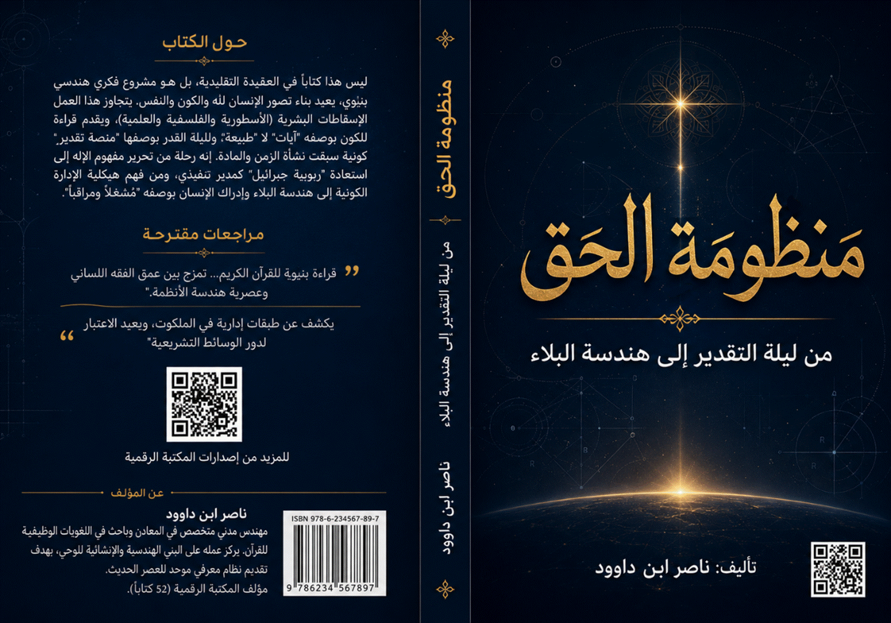

منظومة الحق: من ليلة التقدير إلى
هندسة البلاء.
من الأسطورة والتجريد إلى
المنظومة الهندسية
يعيش الفكر الإنساني المعاصر أزمة معرفية حادة في مجاله الديني: أزمة تصور، وأزمة لغة، وأزمة منهج.
- أزمة التصور: صورة الله في الوعي الشعبي مشوشة بين أسطورة قديمة - إله يشبه البشر- ، وفلسفة جافة - إله كمفهوم مجرد- ، وعلموية باردة - إله كمهندس أو مبرمج لا يُعبد- .
- أزمة اللغة: المصطلحات القرآنية الأساسية - الرب، الإله، العرش، الملكوت، القدر، البلاء- أصبحت غريبة عن العقل الحديث، أو تُفهم بطرق سطحية لا تتسع لعظمة دلالاتها.
- أزمة المنهج: فُصل بين "الكون" و"القرآن" و"النفس"، فظن العلماء أن العلم شيء والدين شيء آخر، وتيه الناس بين نصوص لا يفهمونها وآيات كونية لا يتدبرونها.
لهذا، يأتي هذا الكتاب ليعيد بناء الجسور المتصدعة، بلغة العصر، وبمنهج هندسي بنيوي، يخاطب المهندس والعالم والباحث عن الحق على حد سواء.
التاريخ البشري حافل بمحاولات تصور "الإله". لكن أغلب هذه المحاولات سقطت في إحدى ثلاث حفر:
|
جوهرها |
الخلل |
المحاولة |
|
الإله ككائن بشري متضخم - يغضب، يفرح، يجلس، يأكل- |
تشبيه الخالق بالمخلوق، وإسقاط حدود البشر على المطلق |
التصور الأسطوري |
|
الإله كفكرة مجردة - علة أولى، طاقة، قانون، وجود سائل- |
تعطيل الذات، فلا إله يُعبد، بل مفهوم يُتأمل |
التصور الفلسفي |
|
الإله كمهندس أو مبرمج عظيم |
اختزال الألوهية في صنعة، وإغفال الرحمة والهداية والقرب |
التصور العلمي التقني |
أما القرآن فيقدم تصوراً رابعاً مختلفاً كلياً:
- إله حي قيوم - ذات، لا فكرة- .
- ليس كمثله شيء - تنزيه، لا تشبيه- .
- رب العالمين، رحمن رحيم، مالك يوم الدين - شمولية الوصف، لا اختزال- .
- ظاهر في آثاره، باطن في حقيقته - معروف بأسمائه وصفاته، غير مدرك بكنهه- .
هذا الكتاب يحاول سد الفجوة بين ما يعتقده الناس عن الله - صوراً موروثة مشوهة- وما يريده القرآن أن نعتقده - حقيقة مطلقة مهيبة قريبة- .
ما يميز هذا الكتاب عن غيره من كتب العقيدة والتفسير هو المنهج :
1. فقه اللسان:
- ليس مجرد دراسة للغة العربية، بل اكتشاف "النظام الدلالي" الداخلي للقرآن .
- كل كلمة قرآنية لها "وزن وظيفي" و"علاقة شبكية" مع غيرها، وليست مجرد مفردة في معجم.
- نستنطق القرآن من داخله، وليس عبر مفاهيم متأخرة أو قوالب فلسفية دخيلة.
2. الهندسة البنيوية:
- ننظر إلى القرآن والكون والإنسان كنظام متكامل - System- ، وليس قطعاً منفصلة.
- ندرس "الطبقات التشغيلية" - Operational Layers- : اللوح المحفوظ، ليلة القدر، عالم الأمر، عالم الخلق، الملائكة، السنن.
- نرسم "هرماً إدارياً" - Sovereignty Hierarchy- : الله ← العرش ← جبرائيل ← الملأ الأعلى ← الملائكة ← السنن ← الإنسان.
3. التحرر من الوصاية
المذهبية:
- لا نقدم أي مذهب فقهي أو كلامي على النص القرآني.
- نُخضع كل رواية - حتى الصحيحة سنداً- لميزان "اللسان القرآني" و"الاتساق النسقي".
- نعتبر القرآن هو المصدر القطعي الوحيد، وما سواه - من سنة أو أثر أو رأي بشري- يُقبل إذا وافقه ويُرد إذا خالفه.
النتيجة: هذا الكتاب ليس تفسيراً تقليدياً، بل تفكيكاً هندسياً لمنظومة الحق، يصلح أن يكون "دليل تشغيل" - Operating Manual- للوعي الإنساني.
ينقسم الكتاب إلى ثلاثة عشر فصلاً ، تسير في مسار تصاعدي من التحرير إلى التطبيق:
|
الفصول |
المحتوى |
القسم |
|
1 – 4 |
تحرير مفهوم الإله، قراءة الكون كآية، التمييز بين الربوبية والألوهية، الأسماء والصفات |
التأسيس المعرفي |
|
5 – 7 |
النور، العرش والملكوت، التعريف الجامع لله |
الهيكلية الكونية |
|
8 – 10 |
جبرائيل والربوبية الوظيفية، التغطية التاريخية، ليلة القدر |
الطبقة التنفيذية |
|
11 – 13 |
الهندسة الحيوية، هندسة البلاء، هيكلية الإدارة الكونية، التوحيد كبروتوكول |
التطبيقات الهندسية |
|
- |
الرد على التساؤلات، مخطط التدفق، ملخص، المكتبة الرقمية |
الملاحق |
خريطة طريق مختصرة للقارئ:
- للقارئ العادي - الباحث عن نظرة عامة- : اقرأ الفصول 1، 3، 7، 13 - تعطيك الهيكل الأساسي- .
- للباحث الأكاديمي: اقرأ الكتاب كاملاً، مع التركيز على الجداول والمخططات والهوامش.
- للمهندس والعالم: اقرأ الفصول 2، 6، 8، 9، 10 - تربط بين السنن الكونية واللسان القرآني- .
- للمتدبر والمربي: اقرأ الفصول 4، 5، 11 - تركز على بناء النفس وتزكيتها- .
نص المقدمة الرسمي
بسم الله الحق، المبدئ
المعيد، مقدّر الأقدار ومنزّل الأوامر.
إنّ أعظم إشكالية واجهت العقل البشري عبر تاريخه الطويل لم تكن في البحث عن "محرك أول" للكون فحسب، بل في رسم تصور دقيق لهذا المحرك يخرجه من ضيق "الخيال البشري" إلى سعة "الحق المطلق". لقد تأرجح التصور الإنساني للإله بين "التشخيص الأسطوري" الذي يحبس الخالق في صفات المخلوق، وبين "تجريد العدميين" الذين حولوا الإله إلى فكرة فلسفية باردة لا صلة لها بالواقع المعاش.
يأتي هذا الكتاب ليطرح رؤية ثالثة ، لا تكتفي بالسرد التقليدي، بل تستنطق "النظام الكوني" بلغة هندسية وبنيوية حديثة. إننا لا ننظر إلى الكون هنا بوصفه "مادة صماء" وُجدت بالصدفة، بل بوصفه "منظومة تشغيل كبرى" - Operating System- ، صِيغت أكوادها وقوانينها وثوابتها في لحظة غيبية مهيبة نطلق عليها "ليلة القدر" . تلك الليلة التي لم تكن مجرد وحدة زمنية، بل كانت "منصة التقدير" - Calibration Platform- التي سبقت عملية "الانبثاق العظيم" - Big Bang- .
في فصول هذا الكتاب، سنفكك "الشيفرة الوراثية" للوجود؛ لنكتشف أن العلاقة بين الخالق والكون هي علاقة "الأمر بالخلق" ، أو علاقة "البرمجيات بالمادة" - Software to Hardware- . سنرى كيف أن الثوابت الفيزيائية التي تحكم الذرة والمجرة ليست سوى "أوامر برمجية ثابتة" - Hard-coded constants- وُضعت لضمان استقرار النظام الكوني وحمايته من الانهيار.
كما سيتطرق الكتاب إلى مفهوم "هندسة البلاء" ؛ حيث لا يظهر الإنسان كمراقب سلبي، بل كـ "مُشغّل للنظام" - System Operator- ، أُودعت فيه "أدوات استقبال النور" ليفك شفرة الوحي والكون معاً. إن التوحيد، كما سنبينه، ليس مجرد مقولة لسانية، بل هو "بروتوكول اتصال" يربط "الكون المنشور" بـ "القرآن المسطور" في ذات "الإنسان المنظور" .
إن الهدف الأسمى لهذا المشروع هو استعادة "مركزية الله" في الوعي البشري، لا كفكرة غامضة، بل كحقيقة هندسية، ولسانية، ووجودية، لا يستقيم نظام الوجود – ولا نظام حياة الإنسان – إلا بالإقرار بسيادتها المطلقة.
والله المستعان على بيان الحق.
ثانياً: الفجوة
بين التصور البشري والحقيقة القرآنية
ثالثاً: منهج
"فقه اللسان" كأداة تفكيك بنيوي
رابعاً: هيكل
الكتاب وخريطة الطريق..
3 الجزء الأول:
التأسيس المعرفي وتحرير مفهوم الإله
3.1 اختلال التصور البشري للإله
3.1.4 قاعدة
{لَيْسَ كَمِثْلِهِ شَيْءٌ} – التنزيه كقانون منهجي لا تعطيلاً
3.2 "الله أكبر" – من اللفظ
المتداول إلى المفهوم القرآني البنيوي
3.2.1 الاستقراء القرآني لكلمة
"كبير" وأوزانها
3.2.2 الفرق بين "كبير" -
صفة- و"أكبر" - تفضيل- – ولماذا لم يقل الله "الله أكبر"؟
3.2.3 "الله أكبر" كإعادة ضبط
للبوصلة القيمية
3.2.4 "الله أكبر" في سياق
الصلاة – بين الفهم الحركي والفهم المقاصدي
3.3 من هندسة الكون إلى معرفة الرب
3.3.1 الكون في القرآن ليس
"طبيعة" بل "آية"
3.3.2 شبكة الأفعال الإلهية في بناء
الكون – ليست مترادفات بل طبقات تشغيل
3.3.3 نفي العشوائية في القرآن – ثلاثية
العبث والتفاوت والباطل
3.3.4 السنن ليست الله، بل أثر أمره –
تحرير الإنسان من عبادة "النظام"
3.3.5 من النظام إلى الربوبية – القرآن
ينقلنا أبعد من الفلسفة
3.4 من معرفة الرب إلى معرفة الإله
3.4.1 الفرق البنيوي بين
"الرب" و"الإله" – مفهومان وليس مترادفين
3.4.2 لماذا كان الصراع القرآني حول
الألوهية لا الربوبية؟
3.4.3 الشرك الحديث – من عبادة الأصنام
الحجرية إلى عبادة المعاني والأهواء
3.4.4 العبادة في القرآن ليست طقساً بل
نظام ارتباط - ريسيتم إعادة ضبط-
3.4.5 لماذا يطلب الله العبادة وهو غني؟
- معضلة الحاجة الإلهية-
3.4.6 من معرفة الرب إلى التوحيد العملي
– اليقين لا يكفي، لابد من الانقياد
3.4.7 نقد
"تأليه البشر" – من عبادة الأصنام الحجرية إلى عبادة القادة والأبطال
والأيديولوجيات
3.5 من معرفة الإله إلى قراءة أسمائه
وصفاته
3.5.1 الأسماء الحسنى ليست ألفاظاً بل
مفاتيح معرفية وقوى محركة
3.5.2 البنية الشبكية للأسماء – لا
تُقرأ منفردة بل في سياقها
3.5.3 تصنيف الأسماء الحسنى – خمس
مجموعات بنيوية
3.5.4 أثر الأسماء على بناء الإنسان –
من المعلومة إلى القوة التربوية
3.5.5 الاسم الأعظم في مشروعك المعرفي –
هل هو لفظ أم شبكة؟
3.5.6 من معرفة الأسماء إلى الذوق
الوجودي – الحياة كلها قراءة لأسماء الله
4 الجزء الثاني:هيكلية الوجود
والمراتب الوظيفية
4.1.1 النور في اللسان القرآني – ليس
مجرد ضياء بل مفهوم مركّب
4.1.2 {اللَّهُ نُورُ السَّمَاوَاتِ
وَالْأَرْضِ} – أعظم آية في النور
4.1.3 آيات أخرى – النور في الوحي
والإيمان والكون
4.1.4 الظلمات في القرآن جمع، والنور
مفرد – دليل بنيوي هائل
4.1.5 نور الله في الكون المنشور
والإنسان – الفيزياء والروحانيات معاً
4.1.6 مثلث النور والحق والميزان –
منظومة الهداية الكبرى
4.2.1 العرش في
اللسان القرآني – من الصورة المادية إلى مركز السيادة
4.2.2 الاستواء
– من الجلوس المادي إلى الإحكام السلطاني
4.2.3 الملك
والملكوت – السلطة الظاهرة والباطنة
4.2.4 الكرسي –
مجال الإحاطة السلطانية
4.2.5 الأمر –
بين التشغيل والإيجاد.
4.2.6 التدبير –
الإدارة الحكيمة المستمرة
4.2.7 حملة
العرش – الملائكة المقربون كبار المديرين التنفيذيين
4.2.8 أثر هذا
الفهم على الإنسان – كيف يعيش تحت عرش الله؟
5
الجزء الثالث: الطبقة التنفيذية – جبرائيل والربوبية الوظيفية
5.1 من هو الله
في صياغة تأصيلية
5.1.1
"الله" اسم جامع لا اسم جزئي
5.1.2 الله في
اللسان القرآني – تعريف جامع مانع
5.1.3 الله بين
التنزيه والتجلي – لا تشبيهاً ولا تعطيلاً
5.1.4 الله
والكون والإنسان والقرآن – المثلث أو المربع المعرفي؟
5.1.5 أثر معرفة
الله على المنهج والحضارة
5.1.6 من الصور
الجزئية إلى الرؤية الكلية – جمع الخيوط
5.2 لماذا غابت ربوبية جبرائيل عن
التراث المشهور؟
5.2.1 فرضية "التغطية التاريخية"
- Historical Blackout-
5.2.2 أسباب التعتيم – تحليل ثلاثي
الأبعاد
5.2.3 الآثار الباقية كدليل على الحقيقة
المغيبة
5.2.4 لغة الأرقام في التراث – خريطة
انحدار الوعي بالوسيط التشريعي
5.2.5 صراع المدارس اللغوية – الكوفة ضد
البصرة وأثرها على صيغة الاسم
5.2.6 الخلاصة – استعادة دور جبرائيل
كمفتاح لفهم "هندسة العبادات"
5.2.7 سيكولوجية
الفصل بين "الألوهية" و"الربوبية" في الوعي الجمعي
5.3 ليلة القدر – هندسة البرمجيات
الكونية ولحظة الانبثاق
5.3.1 التمييز البنيوي بين
"الخلق" و"الأمر"
5.3.2 ليلة القدر الكونية -
الأزلية- – منصة التقدير قبل الانفجار
العظيم
5.3.3 ليلة القدر التشريعية -
الزمنية- – نزول القرآن كتذكير وإعادة عرض
5.3.4 دور جبرائيل والملأ الأعلى في
ليلة القدر
5.3.5 نفي العشوائية – {إِنَّا كُلَّ
شَيْءٍ خَلَقْنَاهُ بِقَدَرٍ}
5.3.6 استراتيجية "التعمية
الزمانية" – لماذا شُغّل الناس بالبحث عن ليلة محددة؟
5.3.7 بروتوكول "إن الذي تطلب
أمامك" – الهداية كحضور دائم
5.3.8 تخفيف كثافة الحقيقة -
Data Dilution- – كيف أُخفي جوهر ليلة القدر؟
5.4 الهندسة الحيوية -
Bio-Engineering- في كنف الربوبية
5.4.1 التناسب الغذائي والروحاني –
نموذج مريم وفاطمة
5.4.2 النقل الوظيفي والمعايرة الجسدية
– الصفات الوراثية للأنبياء
5.4.3 المعجزة كـ "بروتوكول طوارئ"
- Override- – ليست خرقاً بل تفعيلاً لسنن أعلى
5.4.4 انقطاع الرؤية الكونية في الفكر
التقليدي – فصل النص عن القوانين الفيزيائية
5.4.5 "الروح" – من عالم
الأمر إلى عالم الخلق..
5.5 هندسة البلاء – الإنسان بوصفه
"مُشغلاً" ومراقباً
5.5.1 الكون كخطاب ناطق -
Protocol of Communication-
5.5.2 الإنسان كـ "سيستم أوبريتور"
- System Operator- – أدوات الاستقبال والتنفيذ
5.5.3 السنن كأدوات تنفيذ لا كخالقين –
النار لا تحرق بذاتها
5.5.4 البلاء ليس عقاباً، بل
"اختبار إجهاد" و"معايرة للنفس"
5.5.5 دور جبرائيل والملائكة في إدارة
البلاء
5.5.6 استراتيجيات التعامل مع البلاء –
من الفزع إلى الهندسة.
5.5.7 الإنسان بين الاستخلاف
والاستعباد – ازدواجية المهمة العظمى
5.6.1 العرش – مركز البيانات والقيادة
العليا - Root Directory-
5.6.2 الاستواء – من الجلوس المادي إلى
الإحكام السلطاني
5.6.3 الملائكة – البروتوكولات
التنفيذية - Service Agents-
5.6.4 "الرحمن" – بيئة التجلي
الكلي والروابط الوقائية - Connectivity Layer-
5.6.5 الإنسان – "المستخلف"
أو "مدير الواجهة الأرضية" - System Admin – Khalifa-
5.6.6
التسبيح كقانون كوني – سباحة كل شيء في مساره الموجّه
5.6.7 جدول شبكة المفاهيم الكبرى -
التكامل النهائي-
5.6.8 نموذج تطبيقي – كيف يعمل النظام
في الحدث اليومي - السقوط من علو-
5.6.9
الأيلولة والسنن الكونية – كيف تتحرك الحضارات نحو مصائرها؟
5.6.10
الفطرة والوعي – الفرق بين “البرمجة الأصلية” و”الوعي المكتسب”
5.6.11
المعجزة والسنن – هل السنن “مغلقة” أم “متعددة الطبقات”؟
5.7 الخاتمة – التوحيد كبروتوكول
تشغيل نهائي
5.7.1 ماذا أنجزنا؟ – رحلة عبر ثلاث
عشرة محطة
5.7.2 الرسالة المركزية للكتاب – ثلاث
ركائز هندسية
5.7.3 المثلث المعرفي الكبير – تثليث
الوحي والكون والنفس...
5.7.4 التوحيد كبروتوكول تشغيل نهائي -
Final Operating Protocol-
5.7.5 من العبادة الطقسية إلى الهندسة
الوجودية – إعادة تعريف الشعائر
5.7.6 أثر هذه المنظومة على
"السلوك الإنساني"
5.7.7 كلمة أخيرة عن المنهج – الثبات
للنص لا للفهم البشري..
5.8.1 مخطط تدفق "منظومة القدر
والقرار الإنساني"
5.9 ملحق - 2- : ملخص كتاب
"منظومة الحق"
5.10 ملحق - 3- : مكتبة ناصر ابن داوود
الرقمية
أعظم اضطراب في التاريخ الإنساني لم يكن في إنكار وجود الله فحسب، بل في تصوّره على غير ما يليق به. فالإنسان، حين يعجز عن إدراك المطلق، يميل إلى إسقاط بنيته النفسية والمعرفية على الغيب؛ فيصوغ الإله على صورة ما يعرفه: صورة الإنسان - تشخيصاً- ، أو صورة الفكرة - تجريداً- ، أو صورة النظام - اختزالاً تقنياً- .
هذه الظاهرة ليست جديدة. إنها متأصلة في طبيعة العقل البشري الذي يحاول جاهداً أن يقيس الغائب على الشاهد، والمطلق على المحدود، واللامتناهي على المتناهي. ولكن النتيجة دائماً واحدة: عيٌّ عن الإدراك، ثم سقوط في إما التشبيه أو التعطيل.
وقد حذر القرآن من هذه الآفة الخطيرة منذ البداية:
﴿لَيْسَ كَمِثْلِهِ شَيْءٌ وَهُوَ السَّمِيعُ الْبَصِيرُ﴾ [الشورى: 11]
فهذه الآية تؤسس لقاعدة ذهبية في معرفة الله: نفي المماثلة المطلقة - لا يشبهه شيء- ، وفي الوقت نفسه إثبات الكمال - السمع والبصر صفات حقيقية لكن لا تشبه سمعنا وبصرنا- .
ومن هنا نشأت ثلاثة اختلالات كبرى في تصور الإله عبر التاريخ، وهي ليست مجرد أخطاء نظرية، بل تنهار عليها سلسلة من الاختلالات المتتالية:
text
اختلال المفهوم
↓
اختلال التصور
↓
اختلال العبادة
↓
اختلال المنهج
↓
اختلال العمران
قاعدة مهمة يفهمها هذا الفصل: العبادة لا تنحرف أولاً في السلوك، بل تنحرف أولاً في التصور. فمن أخطأ في تصور الله، أخطأ في عبادته، ثم أخطأ في منهجه، ثم أخطأ في عمرانه.
من
إسقاط الإنسان على الله
أقدم انحراف عرفته البشرية هو تشخيص الإله؛ أي تحويله إلى «كائن متضخم» يحمل صفات بشرية مكبرة. هذا ما يُعرف في علم النفس المعرفي بـ "التمثيل الأنثروبومورفي" - Anthropomorphism- ، أي ردّ المطلق إلى صورة الإنسان، وقياس الغائب على الشاهد.
ملامح
الإله الأسطوري:
في هذا التصور، يصبح الإله:
|
الصفة المتخيلة |
الإسقاط البشري الخفي |
|
يغضب كغضب البشر |
الغضب البشري رد فعل لضعف أو إحباط |
|
يرضى كرضاهم |
الرضا البشري ناتج عن تغير مزاج |
|
يغار كغيرتهم |
الغيرة البشرية مرتبطة بالخوف والتملك |
|
يجلس في مكان كما يجلسون |
المكان من صفات الأجسام المخلوقة |
|
يحتاج إلى المديح والتعظيم كما يحتاج الملوك |
الحاجة علامة نقص وعجز |
|
ينتقم انتقاماً شخصياً بالغاً |
الانتقام البشري غالباً ما يكون غير عادل |
هذا النمط يظهر بوضوح في الأساطير القديمة - آلهة الإغريق، المصريين، الهندوس- ، ولكنه للأسف لا يقتصر عليها، بل يظهر بصور مختلفة ومبطنة في الوعي الشعبي الديني المعاصر؛ إذ يتخيل كثير من الناس الله باعتباره «ذاتًا بشرية عليا» في السماء، تراقب، وتنتقم، وتنتظر الطاعة بمعناها الطقوسي المجرد، وتغضب لأتفه الأسباب، وتفرح لأيسر الطاعات – كأنها ملك متقلب المزاج حُشر في السماء.
جذور
هذه الآفة:
لكن
القرآن يهدم هذا التصور من جذوره:
﴿لَيْسَ كَمِثْلِهِ شَيْءٌ وَهُوَ السَّمِيعُ الْبَصِيرُ﴾
الآية تنفي التشبيه نفيًا مركبًا - ليس مثله شيء، وليس كمثله شيء- ، أي نفي نفس المثل ونفي إمكان المماثلة أصلاً. ومع ذلك تثبت له الصفات - السميع، البصير- دون تشبيه. فيكون التنزيه بلا تعطيل، والإثبات بلا تشبيه. هذه من أعظم قواعد التوحيد القرآني.
جدول
تحليلي للمقارنة:
|
المعنى الشعبي |
الخلل الكامن |
التصحيح القرآني |
|
الله كملك متضخم يجلس على عرشه |
إسقاط بشري وقياس خاطئ |
الله متفرد لا يشبه خلقه، والعرش مركز سيادة لا كرسي جلوس |
|
الله يغضب كغضب البشر ويصعب إرضاؤه |
تشبيه نفسي يُسقط ضعف البشر على الله |
غضبه صفة حق وعدل، يتنزل عند المخالفة العمدية بعد قيام الحجة |
|
الله في مكان كالأجسام |
تشبيه وجودي يلزمه الحدود |
{لَيْسَ كَمِثْلِهِ شَيْءٌ}، ومستوٍ على العرش بلا كيفية |
|
الله يحتاج إلى مديحنا وتسبيحنا |
جعل الغني فقيراً |
{إِن تَكْفُرُوا فَإِنَّ اللَّهَ غَنِيٌّ عَنكُمْ}، التسبيح نعمة لنا لا حاجة له |
أثر
هذا الاختلال على السلوك:
من تصور الله على هذا النحو – كملك متضخم سريع الغضب – ستكون عبادته مبنية على الخوف المرضي فقط، فيعبد الإنسان الله كأنه "يتجنب عقابه" لا كأنه "يحبه ويشكره". وهذا الخوف غالباً ما ينقلب إلى يأس وتمرد، أو إلى تشدد وتطرف يظن أنه "يدافع عن الله" بينما الله غني عنه.
من
تعطيل الذات إلى عبادة المفهوم
ردة الفعل الطبيعية على التشخيص الساذج كانت في الاتجاه المعاكس تماماً: تجريد الإله حتى الذوبان. فبعد أن ضج الناس من "الإله الحجري" و"الإله المتعصب"، لجأ المفكرون والفلاسفة إلى نقيضه: إله لا يشبه البشر على الإطلاق – درجة أنه لم يعد إلهاً أصلاً.
ملامح
الإله المجرد:
في هذا التصور، بدلاً من أن يكون «إنسانًا متضخمًا» كما في الأسطورة، أصبح:
|
الصفة المجردة |
ما تخفيه من إشكال |
|
طاقة كونية مبهمة |
الطاقة كمية فيزيائية، تتحول ولا تفنى، أعمى لا يعقل. كيف يُعبد؟ |
|
وعيًا مطلقًا سائلاً |
الوعي صفة مرتبطة بذات. فإذا حل الوعي في كل شيء، ذابت الحدود بين الخالق والمخلوق |
|
قانونًا رياضيًا صارمًا |
القانون لا إرادة له. كيف يأمر وينهي؟ وكيف يحاسب؟ |
|
مبدأً أوليًا مجردًا - العلّة الأولى- |
المبدأ الأول عند أرسطو لا يعلم الجزئيات، ولا يستجيب لدعاء. إله الفلاسفة لا يُصلى له |
|
وجودًا سائلاً في كل شيء - وحدة الوجود- |
هذا يؤدي إلى القول بأن الحجر إله والإنسان إله والقط إله – أي إلغاء الدين بالكلية |
هذا التصور حاضر في:
الخلل
المركزي هنا:
أن الله يتحول من «إله يُعرف ويُعبد» إلى «مفهوم يُتأمل». فبدلاً من عبادة حي قيوم سميع بصير، يتأمل المؤمن فكرة أو قانوناً.
ونتيجة لذلك، تذوب الفوارق الجوهرية بين:
وهذا يقود في النهاية إلى تعطيل التكليف - لأنه لا "آمر" مستقل- ، ونسيان الأخلاق - لأنه لا "حساب"- ، وضياع العبادة - لأن العبادة تحتاج إلى معبود متميز عن العابد- .
القرآن
يهدم هذا التصور أيضاً:
﴿اللَّهُ لَا إِلَٰهَ إِلَّا هُوَ الْحَيُّ الْقَيُّومُ﴾ [البقرة: 255]
فهو ليس «طاقة» مجهولة، ولا «قانونًا» أعمى، ولا «وعياً» سائلاً، بل ذات عليمة مريدة مدبرة، تسمع وتجيب، تعاقب وتثيب، تأمر وتنهى.
جدول
تحليلي للمقارنة:
|
المعنى الفلسفي |
الخلل الكامن |
التصحيح القرآني |
|
الله طاقة كونية |
تعطيل الذات، فلا إله يمكن أن يُعبد |
الله حي، له ذات وإرادة وسمع وبصر |
|
الله قانون رياضي |
تعطيل الإرادة، فلا تشريع ولا تكليف |
الله يفعل ما يشاء، ويأمر وينهى |
|
الله وعي كوني سائل |
ذوبان الحدود بين الخالق والمخلوق، وشرك خفي |
الله خالق والخلق مخلوق، لا اتحاد ولا حلول |
|
الله علة أولى مجردة - أرسطو- |
لا يعلم الجزئيات ولا يعرفني شخصياً |
{وَلَقَدْ خَلَقْنَا الْإِنسَانَ وَنَعْلَمُ مَا تُوَسْوِسُ بِهِ نَفْسُهُ} |
أثر
هذا الاختلال على السلوك:
من تصور الله على هذا النحو – فكرة مجردة لا تتدخل في التفاصيل – ستكون عبادته شكلية أو منعدمة. هذا التصور هو بوابة الإلحاد العملي، حيث يعيش الإنسان وكأن الله غير موجود، ثم يتفاجأ في لحظة الأزمة أنه لا يجد من يدعوه. وهو أيضاً بوابة التطرف الروحي - كالصوفية المنحرفة- حيث يذوب العابد في المعبود ويعلن "أنا الحق" كالحلاج.
من
تقديس النظام إلى اختزال الربوبية في البرمجة
في العصر الحديث، ومع هيمنة العلم والتقنية، ظهر اختزال جديد للإله، يبدو للوهلة الأولى أكثر عقلانية وموضوعية، لكنه في العمق لا يقل اضطراباً عن سابقيه.
ملامح
الإله التقني:
في هذا التصور، يُعاد تعريف الإله كالتالي:
هذا التصور يبدو أرقى من التصور الأسطوري والفلسفي، لأنه يحترم الإحكام والنظام والتقدير، وهو قريب من فهم {إِنَّا كُلَّ شَيْءٍ خَلَقْنَاهُ بِقَدَرٍ}.
لكنه
– للأسف – لا يزال ناقصاً بل ومشوهاً، وذلك لأسباب:
|
ما يحصره في الله |
ما يغفله أو يتجاهله |
|
التصميم |
الرحمة |
|
الحساب |
الهداية |
|
البرمجة |
الوحي |
|
الإتقان |
القرب |
|
النظام |
الإجابة |
|
الصدف المحكمة |
الحب والخشية |
|
المعلومات |
الجمال والقداسة |
فالله في هذا التصور أشبه بعقل رياضي عملاق، أو معالج مركزي بارد - CPU- . لا يتدخل في التفاصيل، لا يحب، لا يغضب، لا يستجيب لدعاء، لا يتوب على عباده، لا يعرفهم بأسمائهم، ولا يسمع تضرعاتهم. هو مجرد قانون وضع القوانين، ثم تخلى عنها.
وهذا التصور وإن اقترب من معنى «الإحكام» - اتقان الصنع- ، إلا أنه لا يبلغ معنى «الألوهية» - العبادة والحب والتوجه- .
القرآن
لا يقدّم الله مجرد صانع للكون، بل:
﴿رَبِّ الْعَالَمِينَ الرَّحْمَٰنِ الرَّحِيمِ مَالِكِ يَوْمِ الدِّينِ﴾ [الفاتحة: 2-4]
هذه البنية الثلاثية - الربوبية → الرحمانية → المالكية- تقوّض الاختزال العلمي:
جدول
تحليلي للمقارنة:
|
المعنى العلمي |
الخلل الكامن |
التصحيح القرآني |
|
الله مهندس كون |
اختزال في التصميم وتغاضي عن التدبير المستمر |
الله رب - خالق، مدبر، رازق، مرب- |
|
الله مبرمج عظيم |
اختزال في وضع القوانين وتغاضي عن الهداية والتشريع |
الله هادٍ، يرسل الرسل والكتب، ويتابع عباده |
|
الله عقل كوني - Intellect- |
اختزال المعرفة في العقل فقط، وإغفال القلب والحب |
الله رحمن رحيم، ودود، قريب، يسمع الدعاء |
|
الله قانون أعمى - Deism- |
نفي التدخل الإلهي في التفاصيل |
الله {يُدَبِّرُ الْأَمْرَ مِنَ السَّمَاءِ إِلَى الْأَرْضِ} |
أثر
هذا الاختلال على السلوك:
من تصور الله على هذا النحو – كمهندس أو مبرمج بردٍ – ستكون عبادته باردة وجافة، أو معدومة أصلاً. هذا التصور هو الذي يقود إلى الإلحاد العلمي - العلم يحل محل الدين- ، أو إلى الربوبية - Deism- التي كانت سائدة في أوروبا القرن الثامن عشر، حيث يؤمن الناس بوجود إله "أول" لكنه لا يتدخل في حياتهم، وبالتالي لا صلاة، لا دعاء، لا خشية، لا رجاء.
بعد هذا التحليل التفصيلي، نخلص إلى أن الصور الثلاث – الأسطورية، الفلسفية، العلمية – كلها ناتجة عن إسقاط الإنسان حدوده المعرفية على الله، ولكن بطرق مختلفة:
والقرآن
يعيد تحرير العقل من الثلاثة جميعاً:
|
الاختلال |
الإسقاط |
تحرير القرآن |
النتيجة |
|
أسطوري |
إسقاط الصورة |
{لَيْسَ كَمِثْلِهِ شَيْءٌ} |
تنزيه عن التشبيه |
|
فلسفي |
إسقاط التجريد |
{اللَّهُ الْحَيُّ الْقَيُّومُ} |
إثبات الذات والصفات |
|
علمي |
إسقاط الآلة/البرمجة |
{رَبِّ الْعَالَمِينَ، الرَّحْمَٰنِ الرَّحِيمِ، مَالِكِ يَوْمِ الدِّينِ} |
الشمولية - رب، رحمن، مالك- |
فالله في القرآن:
بل هو:
|
الصفة |
الدلالة |
|
الحي القيوم |
الذات المطلق ذات الحياة الكاملة، القائمة بذاتها |
|
الأول والآخر |
لا بداية له ولا نهاية |
|
الظاهر والباطن |
ظاهر بآياته، باطن بذاته |
|
العليم الحكيم |
العلم المحيط والحكمة البالغة |
|
الرحمن الرحيم |
الرحمة الواسعة الدائمة |
|
رب العالمين |
الخالق المربي المدبر |
|
إله الناس |
المعبود المحبوب المقصود |
|
ملك الناس |
المالك الحاكم المطاع |
|
الحق والنور |
المرجع الصادق والكاشف لكل شيء |
|
الغفور الودود |
يمحو الذنوب ويحب عباده |
|
السميع البصير |
يسمع الدعاء ويرى كل شيء |
وبهذا
يبدأ التوحيد الحقيقي:
بتحرير مفهوم الله من إسقاطات الإنسان:
بل كحقيقة مطلقة واجبة الوجود، لها الذات والصفات، تفعل ما تشاء، وتحكم بما تريد، وتحب وتغضب بما يليق بجلالها، وتدبر الأمر من السماء إلى الأرض، وهي مع ذلك أقرب إلى الإنسان من حبل الوريد.
هذا التصور الصحيح لله هو أساس أي منهج صحيح، وأول خطوة في استقامة العبادة والسلوك والعمران. فإذا صلح تصور الله، صلحت العبادة. وإذا صلحت العبادة، صلح الإنسان. وإذا صلح الإنسان، صلحت الأرض.
تأصيل القاعدة الذهبية في معرفة الله
تمهيد: لماذا نحتاج إلى "قاعدة فصل"؟
بعد
أن عرضنا في المباحث السابقة ثلاثة اختلالات كبرى في
تصور الإله - الأسطوري المشخَّص، والفلسفي المجرَّد، والعلمي التقني- ، نصل الآن
إلى القاعدة المركزية التي يضعها القرآن لحماية العقل من هذه الانحرافات:
>
{لَيْسَ كَمِثْلِهِ شَيْءٌ وَهُوَ السَّمِيعُ الْبَصِيرُ} [الشورى: 11]
هذه
الآية ليست مجرد خبر عابر، ولا مجرد تنزيه سلبي - نفي فقط- ، بل هي قانون منهجي
و ضابط معرفي و حارس للعقل من الوقوع في فخين:
|
الخطر |
الفخ |
تعريفه
|
|
يفضي إلى تجسيم وتشبيه، فيُعبد إله من صنع
البشر |
فخ
التشبيه - التمثيل- |
حمل
صفات الله على معانيها البشرية المألوفة |
|
يفضي إلى إله لا يُعرف ولا يُعبد - فكرة باردة-
|
فخ
التعطيل - التجريد المطلق- |
نفي
الصفات بالكلية خوفاً من التشبيه |
القاعدة القرآنية تعطي حلاً وسطاً دقيقاً:
-
تنفي المماثلة - لا يشبه شيئاً من خلقه- .
-
وتثبت الكمال - له السمع والبصر والحياة والقدرة والإرادة...- .
فيكون
التنزيه بلا تعطيل ، و الإثبات بلا تشبيه . هذا هو التوحيد الخالص.
أولاً: تحليل الآية – لماذا التأكيد بـ
"كمثله"؟
>
﴿لَيْسَ كَمِثْلِهِ شَيْءٌ﴾
الآية
تستخدم صيغة تأكيدية فريدة:
- "مثله"
: إضافة المثل إلى الله، ثم نفي أن يكون شيء "كمثله". فليس فقط نفس
الله لا يشبهه شيء، بل حتى "مثل الله" - أي ما يمكن أن يُتصور مماثلاً
له في الذهن- لا يوجد له نظير في الوجود.
- نفي
مركب: نفى أن يكون هناك "شيء" - أي مخلوق- يماثل الله، ونفى أن يكون هناك شيء يماثل
"مثل الله" - أي الصورة الذهنية لله- . وهذا أبلغ في التنزيه.
جدول تحليلي لدلالات النفي المركب:
|
الدلالة البنيوية |
الصيغة
|
المعنى
الظاهر |
|
نفي التشبيه الحسي |
ليس
مثله شيء |
لا
يوجد مخلوق يشبه الله |
|
نفي إمكان القياس العقلي على الله أصلاً |
ليس
كمثله شيء |
لا
يوجد شيء يشبه "مثل الله" - أي صفاته- |
|
إعلان "فوقية الله" عن كل تصور بشري |
النتيجة |
لا
تشبيه، ولا تمثيل، ولا قياس |
الخلاصة: لا يمكن للعقل البشري أن يحاكي "كيفية"
صفات الله، ولا يمكن لأي مثال في الكون أن يقاس عليه. هذا هو قانون التنزيه
المطلق .
ثانياً: لماذا "السميع البصير" بعد
"ليس كمثله شيء"؟
الآية
لم تتوقف عند النفي، بل أتبعت بإثبات: {وَهُوَ السَّمِيعُ الْبَصِيرُ} .
هذا
التركيب يدمر فخ التعطيل - الذي يقول: لا تشبيه، إذن لا صفات- . فالآية
تؤكد أن لله صفات سمع وبصر، لكنها ليست كسمع المخلوقين وبصرهم .
جدول المقارنة:
|
فهم السلف الصحيح |
الصفة |
فهم
المشبهة |
فهم
المعطلة |
|
سمع يليق بجلال الله، لا نعلم كيفيته |
السمع |
سمع
كسمع البشر - بأذن وذبذبات- |
لا سمع
حقيقي - مجاز- |
|
بصر يليق بجلال الله، لا نعلم كيفيته |
البصر |
بصر
كبصر البشر - بعين وأشعة- |
لا بصر
حقيقي |
|
استواء يليق بجلال الله، بلا تشبيه وبلا تعطيل |
الاستواء على العرش |
جلوس
كجلوس البشر - على كرسي- |
استوى
بمعنى استولى - تأويل- |
القاعدة: نثبت ما أثبته الله لنفسه من صفات، وننفي عنه ما
نفاه عن نفسه من مماثلة. ولا نزيد على ذلك بتأويلات تخرج النص عن ظاهره، ولا نجمد
على ظواهر تخيلية. نمر الكلام كما جاء بلا كيف .
ثالثاً: التنزيه كـ "قانون منهجي" –
حماية العقل من الإسقاطات
ليس
المقصود من {ليس كمثله شيء} مجرد معلومة عقدية، بل هي آلية تشغيلية للعقل تمنعه
من:
1. إسقاط صفات النقص البشري على الله - التشبيه
المذموم-
|
الرد القرآني |
صفة
بشرية |
إسقاطها على الله |
|
{وَلَقَدْ
خَلَقْنَا السَّمَاوَاتِ وَالْأَرْضَ وَمَا بَيْنَهُمَا فِي سِتَّةِ أَيَّامٍ
وَمَا مَسَّنَا مِن لُّغُوبٍ} [ق:38] |
التعب
والكلل |
{فَاسْتَرَاحَ مِنْ خَلْقِ الْعَالَمِينَ} - مزعوم-
|
|
{وَمَا كَانَ
رَبُّكَ نَسِيًّا} [مريم:64] |
النسيان |
{نَسِيَنَا} - على سبيل التجوز- |
|
{إِنَّ
اللَّهَ هُوَ الرَّزَّاقُ ذُو الْقُوَّةِ الْمَتِينُ} [الذاريات:58] |
الحاجة
إلى الطعام والشراب |
{أَطْعَمُونِي} - مزعوم- |
2. إسقاط القياسات البشرية على أفعال الله - التمثيل
المنهجي-
ليس
كل ما يحدث في الكون يمكن قياسه على أحكامنا البشرية:
- الظلم
البشري: أخذ حق الغير. ظلم الله: غير ممكن أصلاً - {إِنَّ اللَّهَ لَا
يَظْلِمُ مِثْقَالَ ذَرَّةٍ}- .
- العبث
البشري: فعل بلا هدف. فعل الله: لا يمكن أن يكون عبثاً - {أَفَحَسِبْتُمْ
أَنَّمَا خَلَقْنَاكُمْ عَبَثًا}- .
- الجهل
البشري: نقص معرفة. علم الله: محيط بكل شيء - {وَلَا يُحِيطُونَ
بِشَيْءٍ مِّنْ عِلْمِهِ إِلَّا بِمَا شَاءَ}- .
3. اختزال الله في أي قالب بشري - أسطوري،
فلسفي، علمي-
هذه
هي الآفة الكبرى التي عالجناها في المباحث الثلاثة السابقة:
|
قانون التنزيه كحل |
المحاولة البشرية |
سبب
السقوط |
|
{ليس كمثله
شيء} يمنع القياس |
جعل
الله "ملكاً متضخماً" |
قياس
الغائب على الشاهد - الملوك البشر- |
|
{ليس كمثله
شيء} يمنع الحلول والاتحاد |
جعل
الله "طاقة كونية" |
خلط
الخالق بالمخلوق |
|
{ليس كمثله
شيء} يمنع الاختصار المخل |
جعل
الله "مبرمجاً عظيماً" |
اختزال
الألوهية في صفة واحدة |
التنزيه كقانون منهجي يعني: أن أي محاولة لتصور
الله يجب أن تمر أولاً عبر بوابة {ليس كمثله شيء}. وإلا سقطت في أحد الانحرافات
الثلاثة.
رابعاً: التنزيه بلا تعطيل – الفرق بين الموقف
السليم والموقف المنحرف
أحياناً
يظن بعض الناس أن التنزيه المطلق أن "نفكر في الله كوجود لا نعرف عنه
شيئاً". وهذا خطأ ، لأنه يؤدي إلى تعطيل الصفات ، وبالتالي
عبادة إله مجهول.
جدول المقارنة:
|
النتيجة |
الموقف
|
التنزيه - نفي التشبيه- |
الإثبات - الصفات- |
|
الله معروف بأسمائه وصفاته، لكن بلا تشبيه |
السلف
الصحيح |
ينفي
مماثلة الصفات للخلق |
يثبت
الصفات حقيقة - سميع بصير حي قيوم- |
|
يقعون في تشبيه الله بخلقه |
المشبهة
- التجسيمية- |
لا
ينفون المماثلة كلياً |
يثبتون
الصفات على ظاهرها المادي |
|
يقعون في تعطيل عبادة الإله الحي |
المعطلة
- الجهمية، الفلاسفة- |
ينفون
المماثلة إلى أقصى حد |
يعطلون
الصفات - تأويل أو تفويض بلا إثبات- |
خلاصة هذا الجدول: التنزيه الصحيح هو الذي يمر بين هذين الموقفين:
-
لا نقع في تشبيه - فيصفون الله بالجارحة والمكان والحركة- .
-
ولا نقع في تعطيل - فننفي الصفات تماماً- .
-
بل نثبت ما أثبته الله لنفسه من صفات، على الوجه اللائق به، مع نفي المماثلة.
خامساً: أثر قاعدة التنزيه على بقية المفاهيم
الدينية
هذه
القاعدة ليست محصورة في باب الصفات فقط، بل تمتد إلى كل باب:
|
التنزيه الصحيح |
الباب |
التشبيه - الخطأ- |
التعطيل - الخطأ- |
|
استواء يليق بجلال الله، لا نعلم كيفيته |
العرش
والاستواء |
الله
جالس على كرسي كالملوك |
الاستواء مجاز بمعنى الاستيلاء أو ليس له معنى
|
|
نزول يليق بجلال الله، بلا كيف |
النزول
الإلهي |
الله
ينزل كإنسان يتحرك |
النزول
مجاز بمعنى نزول رحمته |
|
غضب صفة حقيقية لكن لا تشبه غضبنا |
الغضب
والرضا |
غضب
كغضب البشر - هياج وانفعال- |
غضب
مجاز عن الإرادة للعقاب |
|
خلق إلهي فوري، {كُن فَيَكُونُ} |
الخلق
والإيجاد |
خلق
كصنع البشر - بآلات وزمن- |
الخلق
مجاز بمعنى التقدير فقط |
القاعدة الذهبية: أثبت المعنى، وفوِّض الكيفية، وانفِ التمثيل. هذه
هي عقيدة السلف الصالح كما قررها الأئمة الأعلام: مالك، أحمد، البخاري، والطحاوي
وغيرهم.
سادساً: أثر هذه القاعدة على منهجية الكتاب ككل
لماذا
نكرر ونؤكد على {ليس كمثله شيء} في بداية هذا الكتاب الهندسي؟
لأن
كل ما سنقوله بعد ذلك – من تشبيهات هندسية - الله كمبرمج، الله كمدير نظام، الكون
كأجهزة وبرمجيات- – يجب أن يُفهم في إطار تمثيل
تقريبي لا تشبيه حقيقي .
|
التصحيح بقاعدة التنزيه |
مثال
التشبيه التقريبي |
الخطأ
إن أخذ حقيقة |
|
النظام استعارة لفهم الإحكام، والله فوق كل
نظام |
"الكون كنظام تشغيل" |
نظن أن
الله يحتاج إلى كمبيوتر أو برنامج |
|
كل ما يفعله جبرائيل بأمر الله وتفويض منه، وهو
عبد مخلوق |
"جبرائيل كمدير تنفيذي" |
نظن أن
جبرائيل يتخذ قرارات مستقلة أو يشارك الألوهية |
|
الليلة جزء من خلق الله، والتقدير حدث في علمه
الأزلي، وهو عبر عنها بالليلة تقريباً لنا |
"ليلة القدر كمنصة تقدير" |
نظن أن
الله يحتاج إلى "ليلة" كموعد زمني |
إذن، نحن لا نصف الله بصفات المخلوقين حقيقة، بل
نستخدم "اللسان الهندسي" كجسر معرفي لفهم "النظام الإلهي" دون
المساس بالتنزيه. وكل قارئ للكتاب مطالب أن يضبط هذه القاعدة في ذهنه، لئلا يظن
أننا نشبه الخالق بالمخلوق.
الخلاصة التأصيلية للمبحث الرابع
1. {ليس كمثله شيء} هي "قاعدة الفصل"
التي تحمي العقل من:
- تشبيه
الله بخلقه - الأنثروبومورفيسم الأسطوري والعلموي- .
- تعطيل
صفاته - التجريد الفلسفي البارد- .
2. الآية تجمع بين:
- نفي
المماثلة - تنزيه مطلق- .
- إثبات
الصفات - سميع بصير- .
3. التنزيه المنهجي يعني:
-
أن ننزه الله عن صفات النقص البشرية.
-
أن ننزهه عن حاجته إلى المكان والزمان والآلة.
-
أن ننزه عقولنا عن محاولة قياس الغائب على الشاهد في "الماهية"
و"الكيفية".
4. التمثيلات الهندسية - برمجيات، أجهزة، أنظمة-
هي مجرد تقريبات مفهومية ، ليست تشبيهاً
في الحقيقة. ونحن نستخدمها كجسر معرفي، مع بقاء قاعدة {ليس كمثله شيء} حاكمة على
كل شيء.
جدول الخلاصة النهائية للمبحث الرابع:
|
البيان |
المحور
|
|
{لَيْسَ
كَمِثْلِهِ شَيْءٌ وَهُوَ السَّمِيعُ الْبَصِيرُ} |
النص
المؤسس |
|
قانون منهجي، لا مجرد معلومة نظرية |
نوع
القاعدة |
|
حماية العقل من التشبيه، ومنع التعطيل، وتحرير
التوحيد من الشوائب |
الفوائد
|
|
تبطل التصور الأسطوري - تشبيه- ، والفلسفي - تعطيل-
، والعلمي - اختزال |
العلاقة
بالباب السابق |
|
تضبط استخدام "اللسان الهندسي" في
باقي الفصول |
العلاقة
بما سيأتي |
|
الله ليس كمثله شيء - تنزيه- ، لكنه سميع بصير -
إثبات- ، فلا تشبيهاً ولا تعطيلاً |
الخلاصة
النهائية |
انتقال إلى الفصل الثاني: بعد أن حررنا مفهوم الله بالتزام
قاعدة التنزيه المطلق مع الإثبات، ننتقل في الفصل الثاني إلى "هندسة
الكون" – كيف أن النظام والإحكام الكونيين يقودان العقل إلى معرفة الربوبية،
ولكن دون أن نقع في عبادة "النظام" بدلاً من "منظِّم النظام".
تفكيك
الشعار الأعظم: بين التنزيه وإعادة ضبط الأولويات
تمهيد:
هل وردت عبارة "الله أكبر" في القرآن؟
قبل أن نخوض في المعنى البنيوي لـ "التكبير"، لا بد من تسجيل ملاحظة منهجية دقيقة: عبارة "الله أكبر" بهذا اللفظ المركب - لفظ الجلالة + اسم التفضيل- لم ترد في القرآن الكريم.
هذه الملاحظة قد تكون صادمة للقارئ الذي يسمع "الله أكبر" في الأذان والصلاة والمناسبات آلاف المرات، ويتصور أنها آية قرآنية. لكن الحقيقة أن التعبير القرآني هو:
أما صيغة "أكبر" - اسم تفضيل- فقد وردت في القرآن ولكن مضافة إلى غير لفظ الجلالة، مثل: {إِثْمُهُمَا أَكْبَرُ مِن نَّفْعِهِمَا}، {وَإِنَّهَا لَكَبِيرَةٌ إِلَّا عَلَى الْخَاشِعِينَ}. وهذا سيفتتح لنا باباً فهمياً مهماً: لماذا لم يقل الله "الله أكبر"؟ وما الفرق بين "الله كبير" و"الله أكبر" في اللفظ والدلالة؟
سنعرض الآيات التي وردت فيها كلمة "كبير" أو "كبرى" أو "أكبر" أو "الكبير" - صفة لله أو للمخلوقات- ، ثم نحللها:
1. الآيات التي تصف الله بـ
"الكبير" أو "العلي الكبير":
﴿إِنَّ اللَّهَ كَانَ عَلِيًّا كَبِيرًا﴾ [النساء: 34]
﴿عَالِمُ الْغَيْبِ وَالشَّهَادَةِ الْكَبِيرُ الْمُتَعَالِ﴾ [الرعد: 9]
2. الآيات التي تصف الأجر أو المغفرة بـ
"كبير":
﴿أُولَـٰئِكَ لَهُم مَّغْفِرَةٌ وَأَجْرٌ كَبِيرٌ﴾ [هود: 11]
﴿لَهُم مَّغْفِرَةٌ وَأَجْرٌ كَبِيرٌ﴾ [فاطر: 7]
﴿لَهُمْ أَجْرٌ كَبِيرٌ﴾ [الحديد: 7]
﴿لَهُم مَّغْفِرَةٌ وَأَجْرٌ كَبِيرٌ﴾ [الملك: 12]
3. الآيات التي تصف الإثم أو الذنب أو الخطيئة بـ
"كبير" أو "أكبر":
﴿قُلْ قِتَالٌ فِيهِ كَبِيرٌ﴾ [البقرة: 217]
﴿فِيهِمَا إِثْمٌ كَبِيرٌ وَمَنَافِعُ لِلنَّاسِ وَإِثْمُهُمَا أَكْبَرُ مِن نَّفْعِهِمَا﴾ [البقرة: 219]
﴿إِنَّهُ كَانَ حُوبًا كَبِيرًا﴾ [النساء: 2]
﴿إِنَّ قَتْلَهُمْ كَانَ خِطْئًا كَبِيرًا﴾ [الإسراء: 31]
4. الآيات التي تصف العذاب أو الفساد أو
الطغيان بـ "كبير" أو "كبرى":
﴿تَكُن فِتْنَةٌ فِي الْأَرْضِ وَفَسَادٌ كَبِيرٌ﴾ [الأنفال: 73]
﴿عَذَابَ يَوْمٍ كَبِيرٍ﴾ [هود: 3]
﴿إِنَّ هَـٰذَا الْقُرْآنَ يَهْدِي لِلَّتِي هِيَ أَقْوَمُ﴾ [الإسراء: 9] – والأجر كبير.
﴿نُخَوِّفُهُمْ فَمَا يَزِيدُهُمْ إِلَّا طُغْيَانًا كَبِيرًا﴾ [الإسراء: 60]
5. الآيات التي تصف أموراً دنيوية بوصف
"كبير" - شيخ كبير، أخ كبير، مال كبير...- :
﴿وَأَبُونَا شَيْخٌ كَبِيرٌ﴾ [القصص: 23]
﴿قَالَ كَبِيرُهُمْ أَلَمْ تَعْلَمُوا﴾ [يوسف: 80]
﴿وَلَا يُنفِقُونَ نَفَقَةً صَغِيرَةً وَلَا كَبِيرَةً﴾ [التوبة: 121]
جدول
تحليلي لأنماط ورود "كبير" وأخواتها:
|
نوع الدلالة |
الصيغة |
المثال |
المغزى |
|
صفة الله |
الكبير، العلي الكبير |
{عَالِمُ الْغَيْبِ وَالشَّهَادَةِ الْكَبِيرُ الْمُتَعَالِ} |
الكبر صفة ذاتية لله، وليست مقارنة مع غيره |
|
الأجر والجزاء |
أجر كبير، مغفرة كبيرة |
{لَهُم مَّغْفِرَةٌ وَأَجْرٌ كَبِيرٌ} |
الجزاء متناسب مع عظمة الفاعل - الله- وجلاله |
|
الإثم والذنب |
إثم كبير، خطيئة كبيرة |
{إِنَّ قَتْلَهُمْ كَانَ خِطْئًا كَبِيرًا} |
تفاوت الذنوب - صغائر وكبائر- |
|
العذاب والفساد |
عذاب كبير، فساد كبير |
{وَفَسَادٌ كَبِيرٌ} |
شدة العقاب أو الضرر |
|
الأمور الدنيوية |
شيخ كبير، أخ كبير |
{وَأَبُونَا شَيْخٌ كَبِيرٌ} |
العمر أو المكانة العائلية |
النتيجة المستفادة: كلمة "كبير" في القرآن تعبر عن العظمة المطلقة عندما تُسند إلى الله، وعن الشدة والمبلغ العظيم عندما تتعلق بالأفعال والجزاء. أما صيغة "أكبر" - أفعل التفضيل- فقد استُعملت للمقارنة بين شيئين من جنس واحد - إثم الخمر أكبر من نفعهما- ، ولم تستعمل قط لله. وهذا يؤكد أن الله لا يُقارن بخلقه، ولا يدخل في مفاضلة معهم، بل هو {الْكَبِيرُ الْمُتَعَالِ} بذاته.
الآية المؤسسة للتكبير – {وَكَبِّرْهُ تَكْبِيرًا}
﴿وَقُلِ الْحَمْدُ لِلَّهِ الَّذِي لَمْ يَتَّخِذْ وَلَدًا وَلَمْ يَكُن لَّهُ شَرِيكٌ فِي الْمُلْكِ وَلَمْ يَكُن لَّهُ وَلِيٌّ مِّنَ الذُّلِّ ۖ وَكَبِّرْهُ تَكْبِيرًا﴾ [الإسراء: 111]
هذه الآية هي الأصل الجامع لمعنى التكبير في القرآن:
ثم الأمر بالتكبير – ليس المقصود التلفظ فقط، بل جعل شأن الله كبيراً في القلب والعقل، بأن تنزهه عن هذه النقائص، وتعلن أنه وحده المستحق للتعظيم.
دلالة
"تكبيره تكبيراً" - المصدر المؤكد- :
استخدام المصدر المؤكد - تكبيراً- يفيد المبالغة والعمق في جعل الله كبيراً في الوجدان، وليس مجرد تكرار لفظي.
|
اللفظ |
صيغته |
دلالته |
وروده في حق الله |
|
كبير |
صفة مشبهة تدل على الثبوت والدوام |
عظمة مطلقة، لا تحتاج إلى مقارن |
نعم: {الكبير المتعال}، {علياً كبيراً} |
|
أكبر |
اسم تفضيل - أفعل- |
مقارنة بين شيئين، دلالته نسبية |
لا لم ترد، لأنه لا يُقارن بشيء |
إذن، "الله أكبر" هي صيغة اجتهادية من المسلمين - مأخوذة من معنى التكبير- ، وهي صحيحة المعنى إذا فهمناها على أنها "الله أكبر من كل شيء" – أي أكبر من أن يوصف بصفات النقص، وأكبر من أن يحتاج إلى شريك أو ولد أو ولي. ولكن يجب أن نعي أن العبارة ليست قرآنية اللفظ، بل قرآنية المعنى.
جدول
المقارنة بين "كبير" و"أكبر" في السياق القرآني:
|
السياق |
استعمال "كبير" |
استعمال "أكبر" |
الدلالة |
|
صفات الله |
{الكبير المتعال} – صفة ثابتة مطلقة |
لا يوجد |
الله كبير بذاته، لا يُقارن |
|
الأجر والثواب |
{أجر كبير} – عظيم غير محدود |
{لم ترد صيغة أكبر هنا} |
الأجر عظيم لكنه مخلوق قابل للمفاضلة |
|
الذنوب والآثام |
{إثم كبير} |
{إثمهما أكبر من نفعهما} |
الذنوب تتفاوت في الكبر، فيستخدم التفضيل |
|
الصلاة والعبادة |
{وَإِنَّهَا لَكَبِيرَةٌ إِلَّا عَلَى الْخَاشِعِينَ} – الصلاة شاقة كبيرة |
– |
المشقة تتفاوت بين الناس |
الخلاصة: التعبير الدقيق قرآنيًا عن عظمة الله هو "الكبير" - صفة ذاتية- ، وأما "أكبر" فهو أداة بشرية للمقارنة بين المخلوقات، وقد استعمله المسلمون في سياق "لا إله إلا الله" للتأكيد على أن الله أكبر من كل ما سواه في القلب والميزان، وهذا جائز بل مطلوب، شريطة ألا نفهمه تفضيلاً حقيقياً بل تعظيماً مطلقاً.
بناءً على الآية {وَكَبِّرْهُ تَكْبِيرًا}، فإن تكبير الله يعني جعله الأعلى في ميزان العبد، والأول في الأولويات، والأكبر في التقدير. وهذا له تطبيقات عملية:
1. في العقيدة:
تنزيه مطلق، لا تشبيه ولا تعطيل
2. في العبادة:
إفراد الله وحده بالخضوع
3. في الأخلاق:
مرجعية القيم
4. في الاجتماع:
نبذ العنف باسم الله
جدول
التطبيقات العملية للتكبير:
|
المجال |
قبل التكبير - الانحراف- |
بعد التكبير - التصحيح- |
|
التصور |
تصور الله كملك متضخم يحتاج إلى مديح |
نعظم الله تنزيهاً، ونعلم غناه عن خلقه |
|
العبادة |
عبادة خوف فقط، أو رياء، أو عادة |
عبادة حباً وخضوعاً، خالصة لله |
|
الأولويات |
تقديم المال والجاه والسلطة على رضا الله |
تقديم رضا الله على كل شيء |
|
العلاقات |
الصراع على الزعامة باسم الدين |
التعاون على البر والتقوى، ونبذ الإكراه في الدين |
|
العدل |
قبول الظلم بحجة "أنه قدر الله" |
الأمر بالعدل والنهي عن الظلم، لأن الله أكبر من أن يرضى بالظلم |
يشير كثير من الناس إلى "الله أكبر" في الصلاة كـ "تكبيرة الإحرام" التي تنتقل بها من حديث الدنيا إلى مناجاة الله. وهذا صحيح على مستوى الشعيرة. لكن البعد العميق هو:
ومن هنا، يمكن القول إن "الله أكبر" هي إعادة ضبط - Reboot- للوعي في كل صلاة، تماماً كما أن "لا إله إلا الله" هي إعادة ضبط للعقيدة.
الخلاصة
التأصيلية: استنتاجات عامة حول معنى "الله أكبر"
أ- لفظاً: عبارة "الله أكبر" لم ترد في القرآن بهذه الصيغة، لكن مضمونها - تكبير الله وتعظيمه وتنزيهه- وارد بقوة في آية الإسراء 111 وغيرها.
ب- صفة الله: الصفة القرآنية لله هي {الْكَبِيرُ}، أي العظيم المطلق الذي لا يحتاج إلى مفاضلة مع مخلوق.
ت- الوظيفة السلوكية: التكبير هو جعل الله أكبر في القلب والميزان، أي تقديم أمره ونهيه على كل شيء آخر.
ث- نقد الانحراف: استخدام "الله أكبر" في سياقات العنف والقتل والتفجير هو تحريف لمعناها، لأن الآية تنفي حاجة الله إلى ولي من الذل، والله غني عن نصرة عباده له بالسلاح غير المشروع.
ج- التكبير اليومي: تكرار "الله أكبر" في الأذان والصلاة هو تذكير دائم للمؤمن بأن يضبط بوصلته باتجاه الله وحده، وأن لا يجعل في قلبه أكبر من الله شيئاً.
جدول
الخلاصة النهائي:
|
السؤال |
الإجابة |
الدليل القرآني |
|
هل ورد "الله أكبر" في القرآن؟ |
لا، بهذا اللفظ المركب لم يرد |
الاستقراء يخلو من هذه الصيغة |
|
بماذا وصف الله نفسه؟ |
{الْكَبِيرُ الْمُتَعَالِ}، {عَلِيًّا كَبِيرًا} |
الرعد:9، النساء:34 |
|
ما معنى {وَكَبِّرْهُ تَكْبِيرًا}؟ |
اجعل شأنه كبيراً في قلبك بتنزيهه عن الولد والشريك والولي |
الإسراء:111 |
|
ما الخطر في إساءة فهم "الله أكبر"؟ |
جعلها شعار عنف بدلاً من شعار طمأنينة وتوحيد |
– |
|
كيف نطبق "الله أكبر" في حياتنا؟ |
نقدم رضا الله على كل شيء، ولا نعظم أحداً كما نعظمه |
– |
إذا كان الفصل الأول قد عالج اختلال التصور البشري للإله في مستوى "الذات" و"الصفات"، فإن هذا الفصل ينتقل إلى مستوى آخر من الاستدلال: قراءة الكون نفسه بوصفه نصًا منشورًا يكشف عن صفات فاعله.
إن أعظم انحراف في الوعي المعاصر ليس إنكار وجود النظام، بل الاعتراف بالنظام مع تعطيل دلالته. فالإنسان الحديث يرى الإحكام، ويصفه رياضيًا، ويقيسه علميًا، ثم يتوقف عند حدود الظاهرة دون أن ينفذ إلى مدلولها الأعمق.
إنه:
|
يرى |
لكنه لا يسأل عن |
|
القانون |
المقنّن - الذي وضع القانون- |
|
الإحكام |
الحكيم - الذي أتقن الصنع- |
|
المقادير |
المقدّر - الذي حدد المقادير- |
|
النظام |
المنظّم - الذي أقام النظام- |
|
السببية |
المسبّب - الذي أوجد السببية- |
|
المعلومات |
العليم - الذي خلق المعلومات- |
ومن
هنا نشأ وهمٌ معرفي خطير:
text
رؤية السنن الكونية
↓
دراسة العلاقات الرياضية بين الظواهر
↓
تحويلها إلى معادلات وقوانين
↓
الوقوف عند الظاهر - الوصف الرياضي-
↓
تعطيل الهداية الكامنة في الآية
↓
الاكتفاء بـ "كيف" دون السؤال عن "لماذا"
الخلاصة المركزية: فالكون في القرآن ليس مادة صامتة، بل خطاب ناطق. وليس مجرد ظواهر فيزيائية، بل آيات دالة.
1. الفرق الجذري
بين المفهومين
الوعي المادي الحديث يتعامل مع الكون باعتباره "Nature" - طبيعة- ؛ أي نظامًا مستقلاً يعمل بذاته، كأنه آلة أبدعتها الصدفة ثم تركت تعمل وحدها.
أما القرآن فلا يقدم الكون باعتباره مستقلاً، بل تابعًا لخالقه ومدبره. يقول تعالى:
﴿إِنَّ فِي خَلْقِ السَّمَاوَاتِ وَالْأَرْضِ وَاخْتِلَافِ اللَّيْلِ وَالنَّهَارِ لَآيَاتٍ لِّأُولِي الْأَلْبَابِ﴾ [آل عمران: 190]
كلمة "آيات" هي مفتاح الفرق الجوهري:
|
المحور |
"الطبيعة" |
"الآية" |
|
التعريف |
ظاهرة فيزيائية مجردة |
علامة دالة على مرسلها |
|
الموقف منها |
موضوع دراسة وتجريب |
موضوع دلالة وتدبر |
|
العلاقة بالإنسان |
يُستغَلّ ويُسخَّر |
تُقرأ وتُفهم وتُشكر |
|
الغاية |
تفسير مادي - كيف حدث؟- |
هداية روحية - لماذا حدث؟ ومن فعله؟- |
|
النتيجة النهائية |
توقف عند القانون |
انتقال إلى المقنن |
2. لماذا
"آية" وليس "طبيعة"؟
الطبيعة كما يفهمها العلم الحديث:
أما الآية كما يقدمها القرآن:
يقول ابن كثير في تفسيره: "الآيات هي العلامات الدالة على قدرة الله وحكمته ورحمته."
3. هذا الفرق
يغير كل شيء:
4. جدول مقارن
موسع بين "الطبيعة" و"الآية":
|
وجه المقارنة |
الطبيعة - العلموية المادية- |
الآية - الرؤية القرآنية- |
|
المصدر |
وجدت صدفة أو بالضرورة |
خلقها الله بقصد وحكمة |
|
الاستقلال |
مستقلة، تعمل بذاتها |
تابعة، تسير بأمر الله |
|
الغاية |
لا غاية - تطور أعمى- |
غاية: الدلالة على الخالق والهداية للإنسان |
|
الإنسان تجاهها |
مستغل، مسيطر |
قارئ، متدبر، شاكر |
|
العلم منها |
غاية في نفسه |
وسيلة لمعرفة الله وتعمير الأرض |
|
الفشل المعرفي |
الوقوف عند "كيف" |
نسيان "لماذا" و"من" |
نتيجة مهمة: من تعامل مع الكون كـ "طبيعة" فقط، وصل إلى العلم لكنه فقد الإيمان. ومن تعامل معه كـ "آية" فقط دون دراسة قوانينه، فقد العلم وأصبح أسير الخرافة. أما المؤمن المتكامل فيجمع بين الأمرين: يدرس "كيف" - سنن الله- ليصل إلى "من" - الله- .
القرآن لا يصف فعل الله بكلمة واحدة، بل بشبكة أفعال متكاملة، كل فعل يحتل مرتبة وظيفية محددة في هندسة الوجود.
الأفعال
الرئيسية الواردة في القرآن:
خلق - سوّى - قدّر - هدى - دبّر - أحكم - أمسك - سخّر
وهذه ليست مترادفات، بل طبقات تشغيل - Operational Layers- تمثل مراحل دورة الحياة الهندسية للكون:
|
الفعل الإلهي |
الدلالة اللغوية |
الدلالة الهندسية |
مثال قرآني |
|
خلق - خلق- |
الإيجاد من العدم أو من مادة أولية |
مرحلة التأسيس: إخراج المادة الأولية للوجود |
{اللَّهُ خَالِقُ كُلِّ شَيْءٍ} [الزمر: 62] |
|
سوّى - سوّى- |
الضبط، التسوية، التوازن، إزالة الاعوجاج |
مرحلة التحسين: جعل الخلق متناسقاً متوازناً |
{الَّذِي خَلَقَ فَسَوَّىٰ} [الأعلى: 2] |
|
قدّر - قدّر- |
تحديد المقادير والقوانين والحدود |
مرحلة البرمجة: وضع الثوابت والمعايير |
{وَخَلَقَ كُلَّ شَيْءٍ فَقَدَّرَهُ تَقْدِيرًا} [الفرقان: 2] |
|
هدى - هدى- |
التوجيه إلى الوظيفة والغاية |
مرحلة التشغيل: إعطاء كل مخلوق مساره وهدفه |
{وَالَّذِي قَدَّرَ فَهَدَىٰ} [الأعلى: 3] |
|
دبّر - دبّر- |
النظر في العواقب، التصريف المحكم |
مرحلة الإدارة المستمرة: متابعة النظام وتعديل مساره |
{يُدَبِّرُ الْأَمْرَ مِنَ السَّمَاءِ إِلَى الْأَرْضِ} [السجدة: 5] |
|
أحكم - أحكم- |
الإتقان، الربط المنظومي، منع التفاوت |
مرحلة ضبط الجودة: التأكد من خلو النظام من العيوب |
{صُنْعَ اللَّهِ الَّذِي أَتْقَنَ كُلَّ شَيْءٍ} [النمل: 88] |
|
أمسك - أمسك- |
الإمساك، المنع من التفلت أو الانهيار |
مرحلة الصيانة: ضمان استمرارية النظام ومنع انهياره |
{إِنَّ اللَّهَ يُمْسِكُ السَّمَاوَاتِ وَالْأَرْضَ أَن تَزُولَا} [فاطر: 41] |
|
سخّر - سخّر- |
التسخير، التذليل لجعل الشيء يؤدي وظيفة |
مرحلة الخدمة: جعل المخلوقات في خدمة الإنسان بأمر الله |
{وَسَخَّرَ لَكُم مَّا فِي السَّمَاوَاتِ وَمَا فِي الْأَرْضِ} [الجاثية: 13] |
هذا
التدرج الهندسي يفتح بابًا مهمًا: الكون ليس مخلوقًا فقط، بل مُشغَّل. أي أنه لا يكفي أن يوجد الخلق، بل
لابد من:
كل هذه المراحل تجعل من الكون نظاماً حياً عاملاً، لا مجرد مادة صماء خلقت ثم تركت.
العشوائية - Randomness- في الوعي الحديث تُستعمل أحيانًا كبديل تفسيري للجهل: "لا نعرف لماذا حدث هذا، ربما صدفة". لكن القرآن ينفي أي دور للعبث أو الصدفة في الخلق، من خلال ثلاثة مفاهيم مترابطة:
1. نفي العبث - عدم
وجود هدف-
﴿أَفَحَسِبْتُمْ أَنَّمَا خَلَقْنَاكُمْ عَبَثًا وَأَنَّكُمْ إِلَيْنَا لَا تُرْجَعُونَ﴾ [المؤمنون: 115]
2. نفي التفاوت -
عدم وجود خلل في البنية-
﴿مَا تَرَىٰ فِي خَلْقِ الرَّحْمَٰنِ مِن تَفَاوُتٍ ۖ فَارْجِعِ الْبَصَرَ هَلْ تَرَىٰ مِن فُطُورٍ﴾ [الملك: 3]
3. نفي الباطل -
عدم وجود عبث في المعنى-
﴿وَمَا خَلَقْنَا
السَّمَاءَ وَالْأَرْضَ وَمَا بَيْنَهُمَا لَاعِبِينَ﴾ [الأنبياء: 16]
﴿مَا خَلَقْنَا السَّمَاوَاتِ وَالْأَرْضَ وَمَا بَيْنَهُمَا
بَاطِلًا ۚ ذَٰلِكَ ظَنُّ الَّذِينَ كَفَرُوا﴾ [ص: 27]
جدول
مقارن بين العبث والتفاوت والباطل:
|
النفي القرآني |
ما ينفيه |
دليله السلبي |
الأثر الإيجابي |
|
ليس عبثًا |
أن يكون الخلق بلا غاية |
{أَفَحَسِبْتُمْ أَنَّمَا خَلَقْنَاكُمْ عَبَثًا} |
للوجود غاية واحدة: العودة إلى الله وحسابه |
|
ليس تفاوتًا |
أن يكون النظام مضطربًا أو متناقضًا |
{مَا تَرَىٰ فِي خَلْقِ الرَّحْمَٰنِ مِن تَفَاوُتٍ} |
النظام الكوني متسق ومتناغم، صالح للدراسة العلمية |
|
ليس باطلاً |
أن يكون الخلق عبثًا لا معنى له |
{مَا خَلَقْنَا السَّمَاوَاتِ وَالْأَرْضَ بَاطِلًا} |
الحياة لها معنى وتاريخ له غاية |
وهذه
الثلاثية تهدم مركزية "الصدفة" من ثلاث جهات:
من أخطر انحرافات الفكر الحديث أن يتحول "النظام" - الطبيعة، القوانين، السنن- إلى بديل عن الرب. فتصبح الطبيعة فاعلاً مستقلاً، ويسقط التدخل الإلهي من الحساب.
أنماط
هذا الانحراف اللغوي والمعرفي:
|
العبارة الشائعة |
الخطأ الكامن |
التصحيح |
|
"الطبيعة فعلت" |
نسب الفعل إلى الطبيعة كأنها ذات فاعلة |
الطبيعة مخلوقة، والفاعل الحقيقي هو الله |
|
"التطور صنع الإنسان" |
جعل التطور - عملية عمياء- فاعلاً |
التطور سنة من سنن الله في الخلق |
|
"الكون قرر كذا" |
نسب الإرادة والقرار إلى الكون |
الكون مسخر لا مخير، وليس له إرادة مستقلة |
|
"الجاذبية تمسك الأرض" |
جعل الجاذبية فاعلاً مستقلاً |
الجاذبية سنة إلهية، والله هو الممسك |
الدليل
القرآني على أن السنن ليست فاعلة بذاتها:
﴿قُلْنَا يَا نَارُ كُونِي بَرْدًا وَسَلَامًا عَلَىٰ إِبْرَاهِيمَ﴾ [الأنبياء: 69]
لو كانت النار تحرق باستقلال تام - كما تفترض المادية- ، لكان من المستحيل أن تأمرها فتكون برداً وسلاماً. لكن النار، مثلها مثل كل السنن، تخضع لأمر الله المباشر إذا أراد. هي أداة، لا فاعل.
﴿وَإِن يَمْسَسْكَ اللَّهُ بِضُرٍّ فَلَا كَاشِفَ لَهُ إِلَّا هُوَ﴾ [الأنعام: 17]
السم والدواء ليس لهما تأثير مستقل، بل التأثير بأمر الله. السم يقتل فقط لأنه سنة أجراها الله، ولو أراد الله لصار الدواء سماً.
إذن،
القاعدة هي:
أثر
هذا الفهم:
الفلسفة - خصوصاً الإلهية الطبيعية- تقف عند مستوى: "النظام يدل على مصمم". وهذا صحيح، لكنه غير كاف.
أما القرآن فيأخذنا في رحلة تصاعدية:
1. من الإحكام
إلى العلم
النظام المتقن في الكون - الإحكام- يدل على أن فاعله عليم - عنده علم محيط- .
{صُنْعَ اللَّهِ الَّذِي أَتْقَنَ كُلَّ شَيْءٍ} [النمل: 88]
2. من التقدير
إلى الحكمة
وجود المقادير والحدود الدقيقة - التقدير- يدل على أن فاعله حكيم - يضع الأشياء في مواضعها بدقة- .
{وَخَلَقَ كُلَّ شَيْءٍ فَقَدَّرَهُ تَقْدِيرًا} [الفرقان: 2]
3. من الهداية
إلى القصد
توجيه كل مخلوق إلى وظيفته ومساره - الهداية التكوينية- يدل على أن فاعله قاصد - له إرادة وغاية- .
{وَالَّذِي قَدَّرَ فَهَدَىٰ} [الأعلى: 3]
4. من التدبير
إلى الربوبية
الإدارة المستمرة والتصريف المحكم - التدبير- يدل على أن فاعله ربٌّ مدبر - يتولى شؤون خلقه في كل لحظة- .
{يُدَبِّرُ الْأَمْرَ مِنَ السَّمَاءِ إِلَى الْأَرْضِ} [السجدة: 5]
5. من الرحمة
إلى الرعاية
وجود النعم والإمداد الدائم - الرحمة- يدل على أن فاعله رحمن رحيم - يقوم على خلقه بالرحمة والعناية- .
{الرَّحْمَٰنُ عَلَى الْعَرْشِ اسْتَوَىٰ} [طه: 5]
جدول
مقارن بين مستوى الفلسفة ومستوى القرآن:
|
المستوى |
ما يصل إليه |
ما يفوته |
|
الفلسفة - الإله الطبيعي- |
إله كمصمم أو علة أولى |
يفوته: الإرادة الحرة، الرحمة اليومية، الاستجابة للدعاء، الهداية التفصيلية |
|
القرآن - الإله الشخصي الخالق المدبر- |
رب: خالق، مرب، مدبر، رازق، هادٍ، رحيم، قريب، مجيب |
لا يفوت شيئاً، فهو الجامع لكل الصفات |
الخلاصة: الفلسفة قد تصل إلى "مهندس" أو "علة أولى"، لكن القرآن يصل إلى "رب". والرب هو:
حين يقرأ الإنسان الكون بمنظار القرآن، لا يراه مجرد فضاء مليء بالقوانين الفيزيائية، بل كتابًا مفتوحًا، وخطابًا ناطقًا، وآيات متفرقات تدل على كاتب واحد حكيم عليم.
أقسام
الآيات التي يراها:
وحين
تتكاثر الآيات، تتضح الحقيقة الكبرى:
بل:
|
المرحلة |
الفعل الإلهي |
النتيجة في الكون |
|
1 |
خلقه |
أخرجه من العدم إلى الوجود |
|
2 |
فسوّاه |
جعله متناسقاً متوازناً |
|
3 |
فقدره |
وضع قوانينه وثوابته ومقاديره |
|
4 |
فهداه |
وجه كل جزء إلى وظيفته وغايته |
|
5 |
فيدبره |
يدبر شؤونه لحظة بلحظة |
|
6 |
ويحفظه |
يمسكه من الانهيار والتفكك |
|
7 |
ويُجريه إلى غايته |
يسيره نحو نهاياته المقدرة - يوم القيامة- |
جدول
الخلاصة النهائية للفصل الثاني:
|
السؤال المركزي |
إجابة العلم الحديث |
إضافة الرؤية القرآنية |
|
كيف يعمل الكون؟ |
بقوانين فيزيائية ثابتة - جاذبية، كهرومغناطيسية، نووية- |
هذه القوانين هي "سنن الله" و"آياته"، وهي أثر أمره، لا فاعل مستقل |
|
لماذا هذه القوانين بهذه الدقة؟ |
- الضبط الدقيق- سؤال مفتوح، بعضهم يقول صدفة |
الله قدرها بقدر في ليلة القدر ليستقيم النظام وتكون الحياة ممكنة |
|
هل الكون له غاية؟ |
العلم محايد أو ينكر الغاية |
نعم، غايته الدلالة على الله وتمكين الإنسان من عمارة الأرض ثم العودة إلى الله |
|
من صانع هذه الآيات؟ |
- قد يقول البعض الطبيعة أو القانون- |
الله وحده، لا شريك له، هو الخالق والمبدئ والمعيد |
|
كيف نتعامل مع الكون؟ |
ندرسه لنستخدمه |
ندرسه لنستخدمه ونزداد إيماناً - نعبده- |
وبذلك، ينتقل العقل السليم من "الإعجاب بالنظام" - دهشة علمية- إلى "معرفة الرب" - إيمان راسخ يقود إلى عبادة خالصة- .
هذه هي ثمرة قراءة الكون بوصفه آيات: الانتقال من الطبيعة إلى الربوبية، ومن الظواهر إلى الخالق، ومن العلم إلى الإيمان، دون تعارض بل في تكامل تام.
انتقال إلى الفصل الثالث: بعد أن عرفنا الرب من خلال آياته الكونية، ننتقل في الفصل الثالث إلى التمييز بين "الربوبية" - أفعال الله في خلقه- و"الألوهية" - موقف العبد من الله- – لأن كثيراً من الناس يقر بالربوبية لكنهم يشركون في الألوهية.
إذا كان الفصل الأول قد حرّر مفهوم الله من التشويه البشري - الأسطوري، الفلسفي، العلمي- ، وكان الفصل الثاني قد أثبت الربوبية من خلال قراءة الكون والسنن ونفي العشوائية، فإن هذا الفصل ينتقل إلى النقلة الأعمق والأخطر: من معرفة الله بوصفه ربًّا - خالقاً مدبراً رازقاً- إلى معرفته بوصفه إلهًا - معبوداً محبوباً مطاعاً- .
هذه النقلة هي جوهر الرسالات كلها. فالأنبياء لم يرسلوا فقط ليخبروا الناس بوجود خالق، بل ليدعوهم إلى إفراده بالعبادة وتحقيق "لا إله إلا الله".
الإشكالية
المركزية:
الخلل الأكبر في التدين الإنساني لم يكن دائمًا في إنكار الخالق، بل في الفصل بين "الرب" و"الإله".
إن كثيراً من البشر – في الماضي والحاضر – يُقرّون بالربوبية، لكنهم لا يحققون الألوهية. يعرفون أن الله خالق، لكنهم لا يفردونه بالقصد. يعرفون أنه رازق، لكنهم لا يتوجهون إليه وحده. يعرفون أنه مدبر، لكن قلوبهم تتعلق بغيره.
وهذا هو الشرك الأكبر – أن تعرف ربوبية الله لكن توزع عبادته على غيره.
سلسلة
الاختلال:
text
إدراك الخلق
↓
إدراك التدبير - بعضه-
↓
الإقرار بالربوبية - اعتراف نظري-
↓
عدم تحقق الألوهية - القلب والعمل-
↓
ظهور الشرك الظاهر أو الخفي
القاعدة: القرآن لا يكتفي بأن تعرف من خلقك، بل يريد أن تعرف من تعبده. لا يكتفي بأن تقر أن الله رب العالمين، بل يريد أن تقول "إياك نعبد وإياك نستعين".
في الخطاب الديني المعاصر، كثيراً ما يختلط مفهوم "الرب" بمفهوم "الإله"، ويُستخدمان كمرادفين. لكن القرآن يفرق بينهما وظيفياً، وهذا الفرق هو مفتاح فهم التوحيد.
تعريف
"الرب"
- Rubūbiyyah- :
الرب في القرآن هو: السيد، المالك، المربي، المدبر، الرازق، الهادي.
تعريف
"الإله"
- Ulūhiyyah- :
الإله في القرآن هو: المعبود، المقصود، المحبوب، المطاع، المرجو، المخوف.
جدول
مقارن موسع بين الربوبية والألوهية:
|
المحور |
الربوبية - أفعال الله- |
الألوهية - موقف العبد- |
|
التعريف |
سيادة الله وتدبيره للكون |
عبادة الله وحده والتوجه إليه |
|
المحتوى |
خلق، رزق، إحياء، إماتة، تدبير، هدى تكويني |
عبادة، حب، خوف، رجاء، طاعة، توكل، استغاثة |
|
مخاطب بها |
جميع المخلوقات - مسلمها وكافرها- |
المؤمنون المكلفون فقط |
|
الاعتراف بها |
المشركون والكفار يقرون بها - وَلَئِن سَأَلْتَهُم...- |
لا يقر بها إلا المؤمنون الموحدون |
|
الدليل عليها |
الكون، الآيات، السنن |
الوحي، الرسل، الكتب |
|
النتيجة النهائية |
إقرار بوجود خالق مدبر |
تحقيق العبودية والتوحيد العملي |
|
العلاقة بالإنسان |
يخضع لها اضطراراً - كل الكائنات تخضع للسنن- |
يختارها اختياراً - الطاعة والعبادة- |
|
الجزاء عليها |
لا جزاء مباشر - الكل يأكل ويعيش- |
عليها الثواب والعقاب |
الفاتحة:
النموذج القرآني للانتقال من الربوبية إلى الألوهية
افتتحت سورة الفاتحة – أعظم سورة في القرآن – بهذه الحركة التصاعدية من الربوبية إلى الألوهية:
text
{الْحَمْدُ لِلَّهِ رَبِّ الْعَالَمِينَ} ← إقرار بالربوبية - رب العالمين-
↓
{الرَّحْمَٰنِ الرَّحِيمِ} ← صفة الرحمة الواسعة - من صفات الربوبية-
↓
{مَالِكِ يَوْمِ الدِّينِ} ← صفة الملك والحساب - السيادة المطلقة-
↓
{إِيَّاكَ نَعْبُدُ وَإِيَّاكَ نَسْتَعِينُ} ← تحقيق الألوهية - لا نعبد إلا إياك-
فالمعرفة - بفصل الربوبية- تسبق العبادة - تحقيق الألوهية- . لا يمكن أن تعبد إلهاً لا تعرفه، ولا يمكن أن تعرفه حق المعرفة إذا لم تره من خلال أفعاله في الكون.
لماذا
هذا التفريق ضروري؟
لأن كثيراً من الناس يقعون في أحد خلطين:
|
الخلط |
الوصف |
الخطر |
|
الخلط الأول |
اعتقاد أن الإقرار بالربوبية كافٍ للإيمان |
يؤدي إلى الاستسلام النظري دون التزام عملي - كحال المشركين- |
|
الخلط الثاني |
نسيان الربوبية والاكتفاء بالألوهية الطقسية |
يؤدي إلى عبادة بلا علم، وتصور مشوه لله كمجرد "معبود غامض" |
التصحيح: أن تجمع بين معرفة الرب - من خلال آياته الكونية- وبين تحقيق الألوهية - من خلال عبادتك وتوجهك- .
البرهان
التاريخي: المشركون كانوا يقرون بالربوبية
من المدهش أن المشركين الذين حاربهم النبي محمد ﷺ لم يكونوا ملحدين ينكرون وجود الله. بل على العكس، كانوا يقرون بأن الله هو الخالق والرازق والمدبر.
﴿وَلَئِن سَأَلْتَهُم مَّنْ خَلَقَ السَّمَاوَاتِ وَالْأَرْضَ لَيَقُولُنَّ اللَّهُ﴾ [لقمان: 25]
وكانوا يقولون عن الأصنام: ﴿مَا نَعْبُدُهُمْ إِلَّا لِيُقَرِّبُونَا إِلَى اللَّهِ زُلْفَىٰ﴾ [الزمر: 3].
إذاً،
أين كان الإشكال؟
لم تكن المشكلة في إنكار الربوبية - الله خالق ورازق- ، بل في توزيع الألوهية - العبادة والتوجه- على آلهة أخرى.
{أَجَعَلَ الْآلِهَةَ إِلَٰهًا وَاحِدًا ۖ إِنَّ هَٰذَا لَشَيْءٌ عُجَابٌ} [ص: 5]
كانوا يستغربون أن يُطلب منهم توحيد الألوهية كاملة لله، وترك أصنامهم وآلهتهم.
إذن،
الانحراف البشري الأكبر ليس إنكار الرب، بل توزيع العبادة.
جدول
مقارن بين موقف المشركين والموحدين:
|
المحور |
المشركون - أهل الجاهلية- |
المؤمنون الموحدون |
|
الربوبية |
يقرون بأن الله خالق ورازق ومدبر |
يقرون بها ويزيدون عليها |
|
الألوهية |
يشركون مع الله غيره في العبادة |
يفردون الله وحده بالعبادة |
|
موقفهم من الأصنام |
يتخذونها وسائط وشفعاء |
يرفضونها بالكلية |
|
أصل ضلالهم |
صدقوا في الربوبية، أخطأوا في الألوهية |
صدقوا الاثنتين |
|
القرآن في حقهم |
{وَمَا يُؤْمِنُ أَكْثَرُهُم بِاللَّهِ إِلَّا وَهُم مُّشْرِكُونَ} [يوسف: 106] |
{إِنَّمَا الْمُؤْمِنُونَ الَّذِينَ آمَنُوا بِاللَّهِ وَرَسُولِهِ} |
النتيجة
الحاسمة:
الأزمة لم تكن في "الله خالق"، بل في "الله وحده يُعبد".
وهذا يكشف أن أصل الانحراف البشري غالباً ليس إنكار الرب - الإلحاد- ، بل الشرك - توزيع العبادة- . الإلحاد ظاهرة متأخرة نسبياً، أما الشرك فهو فطري منحرف موجود منذ بدء الخليقة.
في العصر الحديث، لم يعد الإنسان يسجد لصنم حجري غالباً - صورة أو تمثال- ، لكنه يسجد نفسياً ووظيفياً لأصنام جديدة قد تكون أخطر لأنها غير مرئية:
قائمة
الأصنام الحديثة:
|
الصنم الجديد |
كيف يُعبد؟ |
الدليل القرآني |
|
المال |
يُجعل هدفاً أسمى، يُطاع في الحلال والحرام، يُحب حباً عظيماً |
{وَتُحِبُّونَ الْمَالَ حُبًّا جَمًّا} [الفجر: 20] |
|
الشهرة |
يُبذل من أجلها الدين، والأخلاق، والكرامة |
{أَذْهَبْتُمْ طَيِّبَاتِكُمْ فِي حَيَاتِكُمُ الدُّنْيَا} [الأحقاف: 20] |
|
السلطة |
يُطاع صاحبها ولو عصى الله، ويُهاب ويُخشى |
{اتَّخَذُوا أَحْبَارَهُمْ وَرُهْبَانَهُمْ أَرْبَابًا} [التوبة: 31] |
|
اللذة |
يصبح القصد من الوجود، وتُسخر له كل الوسائل |
{بَلْ تُؤْثِرُونَ الْحَيَاةَ الدُّنْيَا} [الأعلى: 16] |
|
الأيديولوجيا - قومية، وطنية، حزبية- |
تُقدَّس، ويُقاتل من أجلها، وتصبح فوق الدين |
{قُلْ إِنَّ صَلَاتِي وَنُسُكِي وَمَحْيَايَ وَمَمَاتِي لِلَّهِ رَبِّ الْعَالَمِينَ} [الأنعام: 162] |
|
العلم |
يُعبد من دون الله، ويُظن أنه الحل المطلق، ويُتخذ ديناً بديلاً |
{وَمَا أُوتِيتُم مِّنَ الْعِلْمِ إِلَّا قَلِيلًا} [الإسراء: 85] |
|
الذات - الأنا- |
يُعبد الإنسان نفسه، فلا أمر فوق هواه، ولا نهي يردعه |
{أَفَرَأَيْتَ مَنِ اتَّخَذَ إِلَٰهَهُ هَوَاهُ} [الجاثية: 23] |
ما
العبادة في اللسان القرآني؟
العبادة ليست مجرد ركوع جسدي. العبادة في القرآن هي:
غاية الخضوع + غاية الحب
فمن خضع لشيء دون حب، ذلك ليس بعبادة كاملة - بل هو خوف أو إكراه- . ومن أحب شيئاً دون أن يخضع له - خشوع وطاعة- ، فذاك ليس بعبادة - بل هو محبة عادية- . العبادة الجامعة تجمع الأمرين معاً.
ومن
هنا يصبح "الإله" الحقيقي في حياة الإنسان هو ما يدور حوله
قلبه وما يخضع له وجدانه.
﴿أَفَرَأَيْتَ مَنِ اتَّخَذَ إِلَٰهَهُ هَوَاهُ وَأَضَلَّهُ اللَّهُ عَلَىٰ عِلْمٍ﴾ [الجاثية: 23]
هذا من أخطر مفاتيح الفصل؛ لأنه ينقل مفهوم التوحيد:
اختبار
ذاتي للقارئ:
اسأل نفسك: من هو إلهك الحقيقي في هذه اللحظة؟
الوعي الديني المعاصر كثيراً ما يختزل العبادة في الشعائر الظاهرة فقط: صلاة، صيام، دعاء، أدعية، طقوس. وهذا صحيح لكنه ناقص.
العبادة في القرآن أوسع وأشمل. هي حالة اتصال وتشغيل وامتثال تشمل كل الحياة. ولا تتعارض مع "الهندسة التشغيلية" بل تتكامل معها.
إعادة
تعريف العبادة بلغة هندسية:
|
العبادة |
الفهم التقليدي |
الفهم التشغيلي - الهندسي- |
الغاية |
|
الصلاة |
ركوع وسجود وأذكار |
إعادة ضبط الوعي - Reboot- – فصل مؤقت عن شواغل الدنيا للاتصال بالمركز |
تجديد البرمجة الروحية، كسر غفلة القلب |
|
الزكاة |
إخراج جزء من المال للفقراء |
إعادة ضبط المال - Wealth Calibration- – منع التراكم المرضي، توزيع عادل |
اختبار الشكر، تطهير النفس من البخل |
|
الصوم |
إمساك عن الطعام والشراب |
إعادة ضبط الشهوة - Desire Regulation- – تدريب النفس على التحكم، كسر الإدمان |
تهيئة لاستقبال النور، تعليم التقوى |
|
الحج |
زيارة الكعبة وأداء المناسك |
إعادة ضبط الهوية - Identity Reset- – تجريد من المظاهر، وحدة الأمة، تذكير بالآخرة |
كسر التعصب القومي، إعلان التوحيد العملي |
|
الذكر |
ترديد أسماء الله وأدعية |
إعادة ضبط الإدراك - Awareness Refresh- – إبقاء الاتصال بالمركز مفتوحاً، مقاومة البرمجيات الخبيثة - الشيطان- |
تثبيت الوعي بالله، منع شرود الروح |
|
الأمر بالمعروف والنهي عن المنكر |
نصح الآخرين |
صيانة الشبكة - Network Maintenance- – تصحيح سلوك المجتمع، منع انتشار الأخطاء |
حماية النظام العام من الانحراف |
وبهذا،
فالعبادة ليست "طلب احتياج إلهي" - لأن الله غني عن العالمين- ، بل
هي إعادة هندسة الإنسان - لصالحه هو- .
text
العبادة الصحيحة = برنامج صيانة وتطوير للنفس البشرية
↓
تزيل الشوائب - الذنوب، البخل، الغفلة، الكبر، الهوى-
↓
تعيد شحن الطاقة الإيمانية
↓
تشحذ البصيرة
↓
تجعل الإنسان أهلاً للخلافة في الأرض.
هذا سؤال معاصر مهم، يتردد على ألسنة كثير من الناس، وقد يُستخدم كذريعة لترك العبادة أو التهاون فيها.
الإجابة
القرآنية:
﴿إِن تَكْفُرُوا فَإِنَّ اللَّهَ غَنِيٌّ عَنكُمْ ۖ وَلَا يَرْضَىٰ لِعِبَادِهِ الْكُفْرَ ۖ وَإِن تَشْكُرُوا يَرْضَهُ لَكُمْ﴾ [الزمر: 7]
إذن،
العبادة ليست لإشباع حاجة في الله، بل لتحقيق صلاح في الإنسان.
ثلاث
فوائد عظمى للعبادة تعود على الإنسان:
|
الفائدة |
الشرح |
|
تحرير الإنسان من عبودية غير الله |
من عبد الله وحده، لا يخضع لسلطة مخلوق، ولا يسجد لمال أو شهرة أو هوى. العبادة تحرير لا استعباد. |
|
إعادة توجيه القلب نحو مركز الحق |
القلب يبحث عن محور يدور حوله. العبادة تجعل محوره هو الله، لا الأوهام والرغبات المتقلبة. |
|
ضبط السلوك بمنهج الوحي |
العبادة ليست مشاعر فقط، بل التزام بأوامر ونواهٍ تحدد الحلال والحرام، وتنظم الحياة. |
مثال
توضيحي:
الخلاصة: العبادة ليست "خدمة لله" تؤدى له كالمملوك لسيده، بل هي "نجاة للإنسان" من عبودية الأوهام والشهوات والظلم والغفلة.
قد يعرف الإنسان أن الله حق، وقد يوقن أنه رب ورازق ومدبر، ثم يعصي بعد هذه المعرفة.
هذه هي المعضلة: كيف يعرف الإنسان ربه ثم يخالفه؟
الفرق
بين معرفة الربوبية - المعلومة النظرية- ومعرفة الألوهية - الانقياد العملي- :
|
مستوى المعرفة |
الموصوف |
الأثر على السلوك |
مثال قرآني |
|
معرفة الربوبية |
إدراك أن الله خالق ومدبر ورازق |
قد لا تغير السلوك؛ لأنها مجرد معلومة عقلية |
إبليس عرف ربه لكنه عصى، فرعون عرف موسى لكنه تمرد |
|
معرفة الألوهية |
إدراك أن الله هو المستحق للعبادة والطاعة والحب المطلق |
تغير مركز القرار، وتصبح العبادة هي الغاية |
إبراهيم عليه السلام، الصحابة، المؤمنون الصادقون |
علامات
أن الله قد صار "إلهك" وليس فقط "ربك":
سلسلة
التحول الكاملة من المعرفة إلى العبادة إلى التحرر:
text
معرفة الخلق - الكون مصنوع-
↓
معرفة التدبير - الكون مُدار-
↓
معرفة الرب - من خلق ويدبر ويرزق-
↓
معرفة الإله - هذا الرب وحده يستحق العبادة-
↓
تحقيق العبادة - إياك نعبد وإياك نستعين-
↓
التحرر - من عبودية المال، الهوى، الشهوة، الناس-
القاعدة: قد يحصل الإنسان على اليقين - معرفة الربوبية- دون أن يصل إلى الانقياد - تحقيق الألوهية- . ومهمة الوحي هي أن تنقل الإنسان من اليقين النظري إلى الانقياد العملي.
المصدران
المتكاملان للمعرفة:
|
المصدر |
محتواه |
ما يقود إليه |
مثاله |
|
الكون - آيات كونية- |
نظام، إحكام، قدر، هدى تكويني، تدبير |
الربوبية - الإقرار بالخالق المدبر- |
{إِنَّ فِي خَلْقِ السَّمَاوَاتِ وَالْأَرْضِ لَآيَاتٍ} |
|
الوحي - آيات تشريعية- |
أمر، نهي، وعد، وعيد، قصة، عبرة |
الألوهية - تحقيق العبادة والطاعة- |
{وَأَنِ اعْبُدُونِي ۚ هَٰذَا صِرَاطٌ مُّسْتَقِيمٌ} |
ماذا
يقول الكون؟ - الربوبية-
وماذا
يقول الوحي؟ - الألوهية-
ولهذا
كانت كلمة التوحيد ليست "الله خالق" - هذا يعترف به المشركون- ، بل:
لا
إله إلا الله
أي:
جدول
الخلاصة النهائية للفصل الثالث:
|
السؤال |
إجابة العلم والفلسفة |
إضافة الرؤية القرآنية |
|
من خلق الكون؟ |
- ربما يقولون الطبيعة أو الصدفة- |
الله خالق كل شيء |
|
من يدبر الكون؟ |
- القوانين الفيزيائية وحدها- |
الله يدبر الأمر من السماء إلى الأرض، والسنن أدواته |
|
لماذا خلقني؟ |
لا غاية - تطور أعمى- |
ليعبد الله - لا إله إلا الله- |
|
كيف أعرف أن الله يستحق العبادة؟ |
- هذا سؤال ديني خارج العلم- |
من خلال الوحي الذي يشرح أسماءه وصفاته، ويدعو إلى عبادته وحده |
|
ما هدف حياتي؟ |
- يحدده كل شخص بنفسه- |
عبادته وتحقيق عبوديتي له، ثم عمارة الأرض وفق شرعه |
وهنا
يبلغ الإنسان غاية المعرفة:
فإذا اجتمع النظر في الآيات الكونية مع الإصغاء إلى الآيات التشريعية، واجتمع إدراك الربوبية مع تحقيق الألوهية، واجتمع العلم بالله مع حب الله والخضوع له، حينها يتحقق:
{إِيَّاكَ نَعْبُدُ وَإِيَّاكَ نَسْتَعِينُ}
وهذه هي العبادة على بصيرة، وهي غاية الدين وثمرة التوحيد.
انتقال إلى الفصل الرابع: بعد أن عرفنا الفرق بين الربوبية والألوهية، وأدركنا أن غاية الرسالات هي تحقيق الألوهية - لا الإقرار بالربوبية فقط- ، ننتقل في الفصل الرابع إلى تفصيل الأسماء والصفات – كيف نبني معرفة متوازنة بالإله الذي نعبده، لئلا نقع في عبادة إله مجهول أو مشوه.
7
الحرية
الحقيقية مرهقة؛ لأنها تتطلب:
لذلك
يميل كثير من الناس إلى:
“هو يفكر بدلاً عني”.
وهنا
يبدأ “التأليه النفسي”.
في
الجاهلية القديمة كان الصنم:
أما
اليوم فالصنم قد يكون:
الإنسان
لا يدافع عنها لأنها صحيحة فقط، بل لأنها أصبحت:
جزءاً
من هويته النفسية.
ولهذا
حين تُنتقد:
وهنا
يتحول “الانتماء” إلى “عبادة”.
الصنم
الحجري كان واضحاً:
أما
الصنم الحديث فمختبئ داخل:
ولهذا
كان أخطر.
أمثلة:
|
الصنم الخفي |
كيف يعمل؟ |
|
“الرأي العام” |
يخاف
الإنسان مخالفته أكثر من خوفه من الله |
|
“الترند” |
يصبح
معيار الحق والباطل |
|
“القبيلة الفكرية” |
الولاء
والبراء يصبح للحزب لا للحق |
|
“الصورة الرقمية” |
يعيش
الإنسان ليُعجب به الناس |
|
“النجاح المادي” |
تتحول
القيمة الإنسانية إلى أرقام وأموال |
لماذا
يكرر القرآن قصة فرعون كثيراً؟
لأن
فرعون ليس مجرد شخص تاريخي، بل:
“نموذج متكرر للبشر حين يتحول الاستخلاف إلى ألوهية”.
فرعون
جمع عدة أصنام في وقت واحد:
|
البعد |
التجلي الفرعوني |
|
السلطة |
{أَنَا رَبُّكُمُ الْأَعْلَىٰ} |
|
الإعلام |
{مَا أُرِيكُمْ إِلَّا مَا أَرَىٰ} |
|
الاقتصاد |
التحكم
في الأرض والناس |
|
الكهنوت |
صناعة
طبقة تبرر سلطته |
|
الخوف |
إرهاب
المجتمع حتى يعبده الناس نفسياً |
الطغيان
يبدأ دائماً من الداخل
فرعون
لم يصبح طاغية فجأة.
القرآن
يربط الطغيان بحالة نفسية:
{إِنَّ الْإِنسَانَ لَيَطْغَىٰ * أَن رَّآهُ اسْتَغْنَىٰ}
أي:
قد
لا يقول:
“أنا ربكم الأعلى”
لكن
قد يقولها بطريقة أخرى:
وهذه
“فرعونية ناعمة”.
قبل
فرعون كان إبليس.
ماذا
فعل إبليس؟
لم
ينكر وجود الله،
ولم ينكر قدرة الله،
بل المشكلة كانت:
“رفض الخضوع”.
قال:
{أَنَا خَيْرٌ مِّنْهُ}
إذن
أول صنم في التاريخ لم يكن حجراً…
بل:
“الأنا”.
العلاقة
بين إبليس والشرك الحديث
كل
أشكال الشرك الحديثة تعود في جوهرها إلى:
|
الصنم |
جذره الإبليسي |
|
عبادة
العقل |
“أنا أفهم أكثر” |
|
عبادة
الشهوة |
“أنا أريد” |
|
عبادة
الذات |
“أنا المركز” |
|
عبادة
القوة |
“أنا الأعلى” |
|
رفض
الوحي |
“لا أقبل مرجعية فوقي” |
ولهذا
فإن التوحيد الحقيقي ليس مجرد قول:
“الله موجود”
بل:
“أنا لست إلهاً”.
كيف
تُصنع الآلهة الحديثة؟
في
الماضي كان الناس ينحتون الصنم بالحجر،
أما اليوم فالصنم يُصنع
عبر:
آلية
التصنيع الحديثة:
|
المرحلة |
الوظيفة |
|
التكرار |
جعل
الشخصية مألوفة |
|
الإبهار |
ربطها
بالقوة والجمال والنجاح |
|
العاطفة |
خلق
ارتباط نفسي بها |
|
التقليد |
تحويل
الجمهور إلى نسخ متشابهة |
|
الدفاع |
يصبح
نقدها “جريمة اجتماعية” |
وهكذا
يتحول:
التوحيد
في “منظومة الحق” ليس مجرد قضية عقدية نظرية، بل:
مشروع
تحرير شامل للإنسان.
تحرير
من:
“لا إله إلا الله” كعملية تفكيك مستمرة
كل
مرة يقول المؤمن:
“لا إله إلا الله”
فهو
عملياً يقول:
مؤشرات
خطيرة ينبغي مراقبتها
|
العلامة |
دلالتها |
|
الغضب
الشديد عند نقد الشخص أو الجماعة |
تحوّلها
إلى صنم نفسي |
|
تبرير
الأخطاء دائماً |
تعطيل
ميزان الحق |
|
تقديم
كلام البشر على الوحي |
بداية
التأليه |
|
فقدان
القدرة على التفكير المستقل |
عبودية
عقلية |
|
الخوف
من مخالفة الجماعة أكثر من مخالفة الله |
اختلال
التوحيد |
|
بناء
الهوية بالكامل حول شخص أو تيار |
ذوبان
الذات في الصنم |
الإنسان
الموحد ليس تابعاً أعمى
المؤمن
الحقيقي:
الحرية
في القرآن ليست انفلاتاً
التحرر
من البشر لا يعني:
بل
يعني:
وضع
كل شيء في حجمه الحقيقي.
فالطبيب:
والعالم:
والحاكم:
الخاتمة
الكبرى: التوحيد ضد كل الأصنام القديمة والحديثة
|
الصنم القديم |
الصنم الحديث |
|
حجر
يُنحت |
صورة
ذهنية تُصنع |
|
وثن
في معبد |
مؤثر
في شاشة |
|
كاهن
قبيلة |
إعلامي
أو أيديولوجي |
|
طقوس
وثنية |
ولاء
نفسي وفكري |
|
سجود
ظاهر |
تبعية
عقلية وعاطفية |
لكن
الجوهر واحد:
نقل
حق من حقوق الله إلى غيره.
الخلاصة
النهائية
التوحيد
في جوهره:
ولهذا
فإن:
“لا إله إلا الله” ليست مجرد عقيدة تُقال…
بل عملية تحرير يومية
للعقل والقلب والروح من كل أشكال الاستعباد الخفي.
{أَلَا لِلَّهِ الدِّينُ
الْخَالِصُ} [الزمر: 3]
أي:
أن يبقى القلب خالصاً
لله،
لا يشاركه فيه:
1. من التوحيد
المجمل إلى التوحيد المفصّل
2. تمهيد: لماذا
لا يكفي أن نقول "نعبد الله" فقط؟
إذا كان الفصل الثالث قد انتهى إلى أن غاية الرسالات هي توحيد الألوهية - لا مجرد الإقرار بالربوبية- ، فإن هذا الفصل ينتقل إلى مستوى أعمق وأدق: كيف يعرف الإنسان الإله الذي يعبده؟
فكثير من الناس يقولون: "نعبد الله"، لكن صورة الله في وعيهم مشوشة أو ناقصة أو مجتزأة. وقد يعبد الإنسان الله وهو لا يعرفه إلا باسم واحد، أو بصفة واحدة، أو عبر تصور موروث مضطرب.
الإشكالية
المركزية:
text
الإيمان المجمل - آمنت بالله إجمالاً-
↓
تصور ناقص أو مشوه عن الله
↓
علاقة ناقصة أو مضطربة مع الله
↓
عبادة مشوشة - خوف مرضي، أو تواكل، أو برودة، أو غلو-
↓
سلوك غير متوازن في الحياة
القاعدة: الإنسان يتعامل مع الله وفق الصورة التي يحملها عنه في قلبه وعقله. فإذا كانت الصورة مشوهة، كانت العبادة مشوهة.
أمثلة
على أثر الصورة المشوهة:
|
الصورة الخاطئة عن الله |
النتيجة السلوكية |
|
الله منتقم فقط، لا رحمة له |
خوف مرضي، يأس من رحمته، تشدد وعنف باسم الدين |
|
الله غفور فقط، لا عدل له |
تسيب في المعاصي، استهانة بالحساب، عدم المبالاة بالأحكام |
|
الله رازق فقط، لا هادي |
عبادة طلب الرزق فقط، إغفال الجانب التربوي والأخلاقي |
|
الله قاضٍ فقط، لا قريب |
عبادة باردة جافة، عدم استشعار القرب والمحبة |
|
الله مبرمج أو مهندس فقط |
عبادة عقلية جافة، فقدان الروحانية والذوق |
إذاً، الحاجة إلى "التوحيد المفصّل" - معرفة الله بأسمائه وصفاته- هي حاجة أصلية، وليست ترفاً علمياً.
في الوعي الشعبي، تُتعامل أسماء الله الحسنى غالباً كـ:
كل هذا صحيح في سياقه، لكنه غير كافٍ.
التعريف
البنيوي للأسماء الحسنى:
الاسم الحسنى ليس مجرد لفظ، بل هو "نافذة إدراك" و"قوة محركة" تعيد تشكيل وعي الإنسان وسلوكه.
الدليل
القرآني:
﴿وَلِلَّهِ الْأَسْمَاءُ الْحُسْنَىٰ فَادْعُوهُ بِهَا﴾ [الأعراف: 180]
"فادعوه بها" لا تعني فقط النداء والدعاء، بل التوجه إليه وفق مقتضى معرفتها.
فالاسم يربط المعرفة بالسلوك، والاعتقاد بالطلب، والصفة بالحاجة النفسية.
جدول
تحليلي: من الاسم كلفظ إلى الاسم كمفتاح وجودي:
|
الاسم |
الفهم الشعبي - اللفظي- |
الفهم البنيوي - الكاشف- |
الأثر على السلوك |
|
الرحمن |
كثير الرحمة |
محيط الخلق كلهم بالرحمة الواسعة |
يشعر بالرجاء، ولا ييأس من رحمة الله |
|
الغفور |
كثير المغفرة |
يستر الذنب ويتجاوز عنه مع التوبة |
لا يقع في اليأس، يبادر إلى التوبة، ويغفر للآخرين |
|
الرقيب |
المراقب |
يرى كل شيء ويُحْصيه |
يضبط السريرة، يستحي من الله في الخفاء |
|
القوي |
ذو القوة |
لا يغلبه شيء، وهو الناصر القاهر |
يتوكل عليه، ولا يخاف من قوة المخلوقين |
|
الودود |
المحب لعباده |
يحب المؤمنين ويحبونه |
يملأ قلبه حب الله، فيترك المعاصي من أجل الحب لا الخوف فقط |
من الأخطاء الشائعة قراءة الاسم الواحد منفرداً، دون النظر إلى الأسماء المقترنة به في القرآن. وهذا يؤدي إلى رؤية مشوهة.
لأن
القرآن يقدم الأسماء في أزواج وشبكات:
|
الاسم مع قرينه |
المعنى المنفرد |
المعنى الشبكي - المتكامل- |
الفائدة التربوية |
|
الغفور الرحيم |
مغفرة واسعة، رحمة واسعة |
المغفرة مقرونة بالرحمة - ليست مغفرة عابرة- |
يرجو المغفرة مع الإحسان، لا يغتر بالغفران فيظلم |
|
العزيز الحكيم |
قوي لا يُغلب، حكيم في أفعاله |
القوة مقرونة بالحكمة - ليست قوة عبثية- |
يطمئن أن قدرة الله لا تضر إلا بحكمة |
|
السميع البصير |
يسمع ويرى |
العلم المحيط بالمسموعات والمبصرات |
يرقب تصرفاته، ويستحي من الله |
|
العلي الكبير |
العلو المطلق، الكبرياء |
العظمة المطلقة |
يخضع ويذل، ولا يتكبر |
|
الرحمن الرحيم |
الرحمة الواسعة، الرحمة الدائمة |
الرحمة صفة شاملة للخلق كلهم |
يشمل المؤمن والكافر في الدنيا، والمؤمن خاصة في الآخرة |
لماذا
الاقتران مهم؟
لأن الاسم الواحد قد يُفهم بشكل خاطئ إذا انفرد:
القاعدة: لا تفهم اسماً من أسماء الله إلا في ضوء الأسماء المصاحبة له في السياق القرآني.
لتسهيل الفهم والتطبيق، يمكن تصنيف الأسماء الحسنى إلى خمس مجموعات وظيفية، لكل مجموعة دورها في بناء الوعي وتصحيح العلاقة مع الله:
المجموعة
الأولى: أسماء الذات والوجود - الإطار المرجعي-
الأسماء: الأول، الآخر، الظاهر، الباطن.
﴿هُوَ الْأَوَّلُ وَالْآخِرُ وَالظَّاهِرُ وَالْبَاطِنُ﴾ [الحديد: 3]
الوظيفة البنيوية: تأسيس تصور صحيح عن أزلية الله وأبديته، وظهوره في آثاره وبطونه في ذاته.
الأثر التربوي: يتحرر الإنسان من "مركزية المادة"، ويرتبط بالأصل الثابت، ويعلم أن كل شيء سيزول إلا وجهه.
المجموعة
الثانية: أسماء العلم والإحاطة - جهاز الاستشعار-
الأسماء: العليم، الخبير، الشهيد، المحيط، السميع، البصير.
الوظيفة البنيوية: إثبات أن الله يعلم كل شيء، ويُحْصي كل شيء، ويشهد على كل شيء.
الأثر التربوي: الانتقال من الرقابة الخارجية - الناس يرونني- إلى "الضبط الذاتي" المستمر - الله يراني في الخلوات- . يربي في النفس الحياء والمراقبة.
المجموعة
الثالثة: أسماء القدرة والسيادة - بروتوكول السلطان-
الأسماء: الملك، القدير، القاهر، المتين، العزيز، الجبار.
الوظيفة البنيوية: إثبات أن الله هو المالك الحقيقي، وأن القوة كلها له.
الأثر التربوي: تفويض الأمر إليه، والتوكل عليه، وإسقاط المخاوف من الأغيار. لا يخاف سلطاناً ولا جباراً لأنه يعلم أن الله هو القاهر فوق عباده.
المجموعة
الرابعة: أسماء الرحمة والجمال - بيئة التشغيل النفسية-
الأسماء: الرحمن، الرحيم، اللطيف، الكريم، الودود، الرؤوف، البر.
الوظيفة البنيوية: إظهار جانب الحب والرحمة والعناية الإلهية.
الأثر التربوي: توفير "طاقة الحركة" والدافع النفسي للإصلاح، والانطلاق إلى الله بالحب لا بالخوف فقط. يمنع اليأس والقنوط.
المجموعة
الخامسة: أسماء الهداية والتشغيل - هندسة المسار-
الأسماء: الهادي، النور، الحق، الرشيد، الفتاح، الوهاب.
الوظيفة البنيوية: توجيه الإنسان إلى الطريق المستقيم، وتعريفه بالحق، وإمداده بالبصيرة.
الأثر التربوي: الوضوح المنهجي، وتحويل الغيب إلى خطة عمل واقعية. يطلب الهداية في كل خطوة.
جدول
المجموعات الخمس -
قابل للنسخ إلى Word- :
|
المجموعة |
الأسماء الرئيسية |
الوظيفة |
الأثر التربوي |
|
الذات والوجود |
الأول، الآخر، الظاهر، الباطن |
إطار مرجعي للوجود |
يتحرر من مركزية المادة |
|
العلم والإحاطة |
العليم، الخبير، الشهيد، المحيط |
نظام استشعار كوني |
ينتقل إلى الضبط الذاتي المستمر |
|
القدرة والسيادة |
الملك، القدير، القهار، العزيز |
بروتوكول السلطان |
يفوض الأمر إلى الله، ولا يخاف سواه |
|
الرحمة والجمال |
الرحمن، الرحيم، الودود، الكريم |
بيئة تشغيل نفسية |
يتحرك بدافع الحب والرجاء |
|
الهداية والتشغيل |
الهادي، النور، الحق، الرشيد |
هندسة المسار والتوجيه |
يملك خطة حياة واضحة |
إن معرفة أسماء الله ليست مجرد معلومة تزيد في الرصيد المعرفي، بل هي قوة تربوية تعيد تشكيل النفس والسلوك. كل اسم يأتي بـ"خوارزمية" نفسية تؤثر في طريقة التفكير والشعور والتصرف.
أمثلة
على الأثر العملي للأسماء - وظيفة كل اسم- :
|
الاسم |
المعنى الإيماني |
الأثر النفسي والسلوكي |
|
الرقيب |
الله يراني دائماً |
يضبط السريرة، يستحي أن يذنب في الخفاء |
|
الحكيم |
كل شيء بقدر وحكمة |
يهدئ القلق، يرضى بالقضاء، يبحث عن الحكمة في البلاء |
|
الرزاق |
الله هو الذي يرزق |
يطفئ الطمع، لا يحسد ولا يسرق، يطمئن على رزقه |
|
الغفور |
الله يغفر الذنوب |
يمنع اليأس من الرحمة، يبادر بالتوبة، يغفر للآخرين |
|
العدل |
الله لا يظلم مثقال ذرة |
يمنع الظلم، لأنه يعلم أن العدل سيأتي لا محالة |
|
الهادي |
الله يهدي من يشاء ويثبت المهتدين |
يطلب الهداية في كل خطوة، لا يتكبر على العلم |
|
القوي |
الله هو القوي الناصر |
لا يخاف المخلوقين، ينصر الحق، يعتمد على الله |
كيف
"يتحول" التوحيد من معلومة إلى إعادة تشكيل داخلي:
text
معرفة الاسم - معلومة عقلية-
↓
استحضار الاسم في المواقف - تطبيق-
↓
تأثير الاسم على المشاعر والسلوك - تحول داخلي-
↓
ترسيخ القيمة الإيمانية - ملكة نفسية-
↓
تغيير دائم في السلوك - الشخصية الجديدة-
مثال عملي:
هكذا تتحول معرفة الاسم إلى قوة محركة.
تردد في الأحاديث فضل "اسم الله الأعظم" الذي إذا دعي به أجاب. واختلف العلماء في تعيينه.
لكن في رؤيتك البنيوية، يمكن تعريف الاسم الأعظم على أنه الشبكة الدلالية الكاملة، أو الاسم الجامع "الله" نفسه.
لماذا
"الله" هو الاسم الأعظم؟
لأنه الاسم الجامع الذي تندرج تحته كل الصفات:
القاعدة: الرحمة بلا حكمة = نقص - مثل أب مدلل لا يربي- . والحكمة بلا رحمة = نقص - مثل قاضٍ قاسٍ- . والقدرة بلا عدل = نقص - مثل طاغية- . والله كامل في كل صفاته، واسم "الله" يشير إلى الذات الجامعة لكل الكمالات.
التطبيق
العملي:
الاسم الأعظم ليس لفظاً سحرياً يُردد، بل هو حالة من التوجه الكلي لله بكل أسمائه وصفاته، بحيث تدعوه الرحمن عند الرحمة، وتدعوه القهار عند الحاجة إلى النصر على الظالمين، وتدعوه الغفور عند الذنب، وتدعوه القريب عند الوحدة، وتدعوه السميع عند الحاجة إلى من يسمع.
حين يعرف الإنسان الله بأسمائه الحسنى - فهمًا لا مجرد حفظًا- ، تتحول حياته كلها إلى قراءة مستمرة لتجليات الأسماء في الواقع.
كيف
ترى أسماء الله في الأحداث اليومية؟
|
الحدث |
ما يراه الغافل |
ما يراه العارف بأسماء الله |
|
نعمة الصحة |
مجرد وراثة أو حظ |
تجلي اسم "الرحمن" و"المعافي" |
|
مصيبة أو مرض |
ظلم أو تعاسة |
تجلي اسم "الحكيم" - ليعلم صبري- ، واسم "اللطيف" - ليرفع درجاتي- |
|
رزق مفاجئ |
حظ سعيد |
تجلي اسم "الرزاق" و"الفتاح" |
|
تأخر الإجابة على الدعاء |
إهمال أو عدم محبة |
تجلي اسم "الحكيم" و"اللطيف" - يدخر لي ما هو خير- |
|
قدرة على التوبة بعد ذنب كبير |
فرصة عابرة |
تجلي اسم "الغفور" و"التواب" و"الستير" |
|
رؤية عظمة الكون - نجوم، جبال، بحار- |
مسألة فيزيائية فقط |
تجلي اسم "الخالق"، "البديع"، "العظيم" |
النتيجة
النهائية لهذا الفصل:
text
معرفة الأسماء
↓
بناء صورة صحيحة عن المعبود
↓
إدراك أسمائه في الكون والوحي والنفس
↓
تعلق القلب بالله وتفويض الأمر إليه
↓
عبادة على بصيرة - حباً وخضوعاً وتوازناً-
↓
إعادة تشكيل الشخصية بأكملها
الخلاصة: من لم يعرف أسماء الله، عبد إلهاً مجهولاً أو مشوهاً. ومن عرف أسماءه، ارتقى من قول "أعبد الله" إلى مقام "أعرف من أعبد".
3. جدول الخلاصة
النهائية للفصل الرابع - قابل
للنسخ إلى
Word- :
|
السؤال |
الجواب في الرؤية التقليدية |
الإضافة في الرؤية البنيوية |
|
ما الأسماء الحسنى؟ |
أسماء الله التسعة والتسعون |
مفاتيح معرفية وقوى محركة للسلوك |
|
كيف نتعامل معها؟ |
نرددها وندعو بها |
نفهمها في شبكتها السياقية، ونستحضرها في المواقف |
|
ما أثرها؟ |
ثواب وأجر |
إعادة تشكيل الشخصية وتحويل السلوك |
|
كيف نصنفها؟ |
بدون تصنيف أو تصنيف كلامي تقليدي |
خمس مجموعات وظيفية - ذات، علم، قدرة، رحمة، هداية- |
|
ما الاسم الأعظم؟ |
لفظ محدد - كالحي القيوم أو الله- |
الشبكة الكاملة للأسماء أو الاسم "الله" الجامع |
انتقال إلى الفصل الخامس: بعد أن عرفنا الإله بأسمائه وصفاته، ننتقل في الفصل الخامس إلى أحد أكثر المفاهيم كثافة وعمقاً في القرآن: "النور". وكيف أن الله نور السماوات والأرض، وأن هذه الحقيقة هي مفتاح الهداية والبصيرة.
هل تريد مني متابعة كتابة الفصل الخامس - الله والنور- بنفس الأسلوب الموسع والجداول؟
4. من الإدراك
الحسي إلى الكشف الوجودي
5. تمهيد: لماذا
"النور" مفهوم مركزي في معرفة الله؟
إذا كان الفصل الرابع قد أقام بنية معرفية لفهم الله من خلال أسمائه وصفاته، فإن هذا الفصل ينتقل إلى أحد أكثر المفاهيم القرآنية كثافة وعمقاً: النور.
النور في الوعي الشائع يُختزل غالباً في الضوء الحسي، أو يُستعمل مجازاً وعظياً فضفاضاً - مثل "القلب المنير" دون تحديد- . لكن القرآن يقدم النور كمفهوم بنيوي مركزي في فهم الله، والوحي، والهداية، والوجود نفسه.
الإشكالية
المركزية:
text
الخلل في فهم "النور"
↓
يؤدي إلى خلل في فهم "الهداية"
↓
فالهداية ليست مجرد معلومة تضاف إلى الذاكرة
↓
بل هي كشف وجودي يغير رؤية الإنسان للحياة
↓
فاختزال النور في الحس ← اختزال الهداية في المعلومة
↓
اختزال الدين في الطقوس ← فقدان البصيرة
↓
التيه الوجودي - يرى بعينيه لكنه يعيش في ظلمة-
القاعدة: الإنسان قد يرى بعينيه، لكنه يعيش في ظلمة معرفية. وقد يكون فاقد البصر، لكنه ممتلئ بالنور والبصيرة. فالعمى الحقيقي ليس عمى العينين، بل عمى البصيرة.
في الاستعمال القرآني، نجد تمييزاً دقيقاً بين ألفاظ الضوء والإشراق، مما يشير إلى نظام مفاهيمي لا ترادف فيه.
الفروق
الدلالية في مفردات النور والضياء:
|
اللفظ |
الدلالة اللغوية |
الدلالة القرآنية |
مثال |
|
النور |
الكشف والإظهار بعد الخفاء |
كل ما يكشف الحقيقة ويهدي إلى الحق |
{اللَّهُ نُورُ السَّمَاوَاتِ وَالْأَرْضِ} |
|
الضياء |
الإشعاع الذاتي القوي |
عادة ما يوصف به الشمس والقمر |
{هُوَ الَّذِي جَعَلَ الشَّمْسَ ضِيَاءً وَالْقَمَرَ نُورًا} |
|
السراج |
مصدر الضوء الذي يُشعَل |
يوصف به النبي أو القمر المنير |
{وَسِرَاجًا مُّنِيرًا} [وصف النبي] |
|
البرق |
لمعان خاطف سريع |
يشير إلى ما يلمع ثم يختفي |
{يَكَادُ الْبَرْقُ يَخْطَفُ أَبْصَارَهُمْ} |
|
الشهاب |
شعلة نارية تخترق الظلام |
يشير إلى ما يُرجم به الشياطين |
{شِهَابٌ مُّبِينٌ} |
لماذا
هذا التمييز مهم؟
لأنه يحرر مفهوم النور من كونه مجرد إحساس بصري، ويجعله:
الخلاصة: النور أوسع من الضوء. الضوء ظاهرة فيزيائية، والنور حقيقة وجودية ميتافيزيقية. كل ضوء هو نور، لكن ليس كل نور هو ضوء.
هذه الآية من سورة النور - آية 35- هي أشهر الآيات في صفة النور، وتحتاج إلى تدبر خاص.
{اللَّهُ نُورُ السَّمَاوَاتِ وَالْأَرْضِ ۚ مَثَلُ نُورِهِ كَمِشْكَاةٍ فِيهَا مِصْبَاحٌ ۖ الْمِصْبَاحُ فِي زُجَاجَةٍ ۖ الزُّجَاجَةُ كَأَنَّهَا كَوْكَبٌ دُرِّيٌّ يُوقَدُ مِن شَجَرَةٍ مُّبَارَكَةٍ زَيْتُونَةٍ لَّا شَرْقِيَّةٍ وَلَا غَرْبِيَّةٍ يَكَادُ زَيْتُهَا يُضِيءُ وَلَوْ لَمْ تَمْسَسْهُ نَارٌ ۚ نُورٌ عَلَىٰ نُورٍ ۗ يَهْدِي اللَّهُ لِنُورِهِ مَن يَشَاءُ} [النور: 35]
تفسير
الآية بنيوياً:
|
العنصر في المثل |
الرمز |
الدلالة الهندسية/البنيوية |
|
المشكاة - الكنيف الصغير- |
صدر المؤمن |
وعاء استقبال النور |
|
المصباح |
قلب المؤمن |
مصدر الإضاءة بعد الإمداد |
|
الزجاجة |
النفس الشفافة |
تحمي المصباح وتجمعه ويضاعف نوره |
|
الزيت المبارك |
الوحي والإيمان |
وقود لا ينضب، مشرق بذاته |
|
لا شرقية ولا غربية |
زيت معتدل ليس بمائل |
شهادة لا تطرف فيها |
|
نور على نور |
إيمان متجدد |
نور الوحي + نور العقل + نور الفطرة |
ما
معنى "الله نور السماوات والأرض"؟
ليس المعنى أن الله "ضوء" مادي - حاشاه- ، بل المعنى البنيوي:
القراءة الهندسية: كما أن الضوء يجعل الأشياء مرئية، فالله تعالى يجعل الحقائق معقولة ومدركة ومكشوفة. هو "المعطي للقابلية للكشف".
1. الوحي نور
﴿قَدْ جَاءَكُم مِّنَ اللَّهِ نُورٌ وَكِتَابٌ مُّبِينٌ﴾ [المائدة: 15]
﴿وَكَذَٰلِكَ أَوْحَيْنَا إِلَيْكَ رُوحًا مِّنْ أَمْرِنَا ۚ مَا كُنتَ تَدْرِي مَا الْكِتَابُ وَلَا الْإِيمَانُ وَلَٰكِن جَعَلْنَاهُ نُورًا نَّهْدِي بِهِ مَن نَّشَاءُ مِنْ عِبَادِنَا﴾ [الشورى: 52]
2. الإيمان نور
﴿أَوَمَن كَانَ مَيْتًا فَأَحْيَيْنَاهُ وَجَعَلْنَا لَهُ نُورًا يَمْشِي بِهِ فِي النَّاسِ كَمَن مَّثَلُهُ فِي الظُّلُمَاتِ لَيْسَ بِخَارِجٍ مِّنْهَا﴾ [الأنعام: 122]
3. الكون منور بالآيات
﴿هُوَ الَّذِي جَعَلَ الشَّمْسَ ضِيَاءً وَالْقَمَرَ نُورًا﴾ [يونس: 5]
من أعظم الإشارات البنيوية في القرآن:
الظلمات - جمع- + النور - مفرد-
أمثلة:
﴿اللَّهُ وَلِيُّ الَّذِينَ آمَنُوا يُخْرِجُهُم مِّنَ الظُّلُمَاتِ إِلَى النُّورِ﴾ [البقرة: 257]
﴿يُرِيدُونَ أَن يُطْفِئُوا نُورَ اللَّهِ بِأَفْوَاهِهِمْ وَيَأْبَى اللَّهُ إِلَّا أَن يُتِمَّ نُورَهُ﴾ [التوبة: 32]
دلالة
هذا الاستخدام:
|
الظلمات - جمع- |
النور - مفرد- |
|
الباطل متعدد الأشكال والمذاهب |
الحق واحد لا يتعدد |
|
طرق الضلال كثيرة ومتشعبة |
طريق الهداية واحد |
|
أسباب التيه والغواية متعددة - هوى، شيطان، مال، سلطة- |
أسباب الهداية واحدة - اتباع الوحي والعقل السليم- |
|
العابدون للأصنام متعددو الآلهة |
المؤمنون يعبدون إلهاً واحداً |
الاستنتاج: الحق واحد، والباطل متعدد. النور لا يتجزأ، والظلمات تتشعب. هذه إشارة إلى وحدانية الحق ووحدة مصدره.
النور الفيزيائي نفسه - الشمس، القمر، النجوم، البرق، الفجر- هو آية من آيات الله، وليس مجرد ظاهرة طبيعية.
من
آيات النور في الكون:
|
الآية الكونية |
دلالتها |
الإشارة على البصيرة |
|
الشمس |
الضياء القوي |
الحقيقة الجليّة التي لا تخفى |
|
القمر |
النور العاكس |
الإيمان الذي يستمد نوره من الحق |
|
النجوم |
النقاط المضيئة في الظلام |
المؤمنون الذين يهتدى بهم في ظلمات الأرض |
|
الفجر |
النور التدريجي بعد ظلام شديد |
الهداية تبدأ ضعيفة ثم تتزايد |
|
البرق |
النور الخاطف |
قد يلمع نور الحق فجأة في القلب |
نور
الله في الإنسان: أدوات استقبال النور
﴿وَاللَّهُ أَخْرَجَكُم مِّن بُطُونِ أُمَّهَاتِكُمْ لَا تَعْلَمُونَ شَيْئًا وَجَعَلَ لَكُمُ السَّمْعَ وَالْأَبْصَارَ وَالْأَفْئِدَةَ لَعَلَّكُمْ تَشْكُرُونَ﴾ [النحل: 78]
أدوات استقبال النور - الهندسية- :
|
العضو |
وظيفته الفيزيائية |
وظيفته على البصيرة |
|
السمع |
استقبال الأصوات |
استقبال آيات الله المسموعة - القرآن، الوعظ، النصح- |
|
البصر |
استقبال الضوء |
استقبال آيات الله المرئية - الكون، السنن، الأحداث- |
|
الفؤاد - القلب- |
ضخ الدم |
استقبال النور الإيماني المباشر - البصيرة، الإلهام، الفراسة- |
لكن
هذه الأدوات قد تُحجب، كما حذر القرآن:
﴿فَإِنَّهَا لَا تَعْمَى الْأَبْصَارُ وَلَٰكِن تَعْمَى الْقُلُوبُ الَّتِي فِي الصُّدُورِ﴾ [الحج: 46]
النتيجة: العمى الحقيقي ليس بصرياً، بل قلبيًّا بصيرياً. فقد ترى العينان، ولا يرى القلب.
في مشروعك البنيوي، يمكن بناء مثلث هائل يجمع ثلاثة مفاهيم قرآنية محورية:
|
المفهوم |
دلالته الهندسية |
علاقته بالآخرين |
|
النور |
الكشف والإظهار والهداية |
تري الأشياء وتكشفها |
|
الحق |
الثبوت والصدق والواقع |
تدرك حقيقة ما تراه |
|
الميزان |
الضبط والعدل والمعيار |
تحكم على الأشياء بالقيمة الصحيحة |
كيف
يعمل المثلث في الإدراك البشري:
مثال: ترى آيات الله في الكون - النور- ، وتدرك أنها حق وليست خرافة أو وهماً - الحق- ، ثم تعرف أن بينها وبين آيات الوحي تناسقاً ويُقاس بعضها ببعض - الميزان- .
وهذا ينسجم مع قوله تعالى:
﴿اللَّهُ الَّذِي أَنزَلَ الْكِتَابَ بِالْحَقِّ وَالْمِيزَانَ﴾ [الشورى: 17]
و:
﴿وَمَعَهُ الْحَقُّ وَالْمِيزَانُ﴾ [الحديد: 25]
6. جدول الخلاصة
النهائية للفصل الخامس - قابل
للنسخ إلى
Word- :
|
المحور |
النور في الفهم الضيق |
النور في الفهم البنيوي |
|
تعريفه |
الضوء الحسي فقط |
كل ما يكشف الحقيقة، يهدي إلى الحق |
|
الله |
- لا يوصف بأنه نور حسي- |
مظهر الوجود، كاشف المعنى، هادي الخلق |
|
الوحي |
يسمى نوراً مجازاً |
يكشف الله، الكون، الإنسان، المصير |
|
الإيمان |
يؤدي إلى الخير |
يمنح صاحبه نور قرار، فهم، تمييز، اتجاه |
|
الكون |
ظواهر فيزيائية |
آيات ناطقة بالنور الإلهي |
|
الإنسان |
عينان وأذنان وقلب عضلي |
أدوات استقبال النور - سمع، بصر، قلب- |
|
الظلمات |
جمع |
تعدد الباطل وتشعب طرق الضلال |
|
النور |
مفرد |
وحدانية الحق وطريق الهداية الواحدة |
7. الخلاصة
التأصيلية للفصل الخامس:
وهنا يتضح أن الدين ليس مجرد طقوس، بل هو مشروع استنارة وجودية، هدفه إخراج الإنسان من الظلمات المتعددة إلى النور الواحد، ومن التيه والباطل إلى الحق والميزان.
انتقال إلى الفصل السادس: بعد أن فهمنا الله نوراً، والوحي نوراً، والإيمان نوراً، ننتقل في الفصل السادس إلى "العرش والملكوت" – كيف يسيطر الله على هذا الوجود؟ وكيف يصف القرآن مركزية الحكم والتدبير والهيمنة؟
هل تريد المتابعة إلى الفصل السادس
من إثبات الوجود إلى فهم السيادة والتدبير
تمهيد: لماذا العرش والملكوت؟
بعد أن أقامت الفصول السابقة الأسس
التالية:
- تحرير مفهوم الله من التشبيه
والتعطيل - الفصل الأول- .
- إثبات الربوبية عبر قراءة الكون
والسنن - الفصل الثاني- .
- التمييز بين الربوبية والألوهية - الفصل
الثالث- .
- معرفة الإله بأسمائه وصفاته - الفصل
الرابع- .
- إدراك النور الإلهي كمصدر للكشف
والهداية - الفصل الخامس- .
يأتي هذا الفصل ليدخل إلى الهيكل
السيادي في اللسان القرآني: كيف يدير الله هذا الوجود؟ وما معنى العرش،
والكرسي، والملك، والملكوت، والأمر، والتدبير؟ وكيف نفهم هذه المصطلحات دون وقوع
في التجسيم - الله جالس على عرش- أو
التعطيل - مجرد ألفاظ لا معنى لها- ؟
الإشكالية المركزية:
الوعي الديني المعاصر يتعامل مع
مفاهيم "العرش" و"الكرسي" و"الملكوت" إما:
- تصوراً أسطورياً تجسيماً: عرش
ككرسي مادي، الله يجلس عليه كالملوك - تعالى الله عن ذلك علواً كبيراً- .
- أو تصوراً وعظياً ضبابياً: مجرد
ألفاظ لطيفة لا معنى حقيقياً لها، فلا نتدبر فيها ولا نستفيد.
بينما القرآن لا يورد هذه المفاهيم
بوصفها زخارف لغوية، بل مفاتيح لفهم نظام السيادة الكونية وطريقة إدارة
الوجود.
المطلوب: موقف
وسطي:
- لا تجسيم - نعرف أن الله ليس
جسماً، ولا يحتاج عرشاً مادياً- .
- ولا تعطيل - نؤمن بأن للعرش
والملكوت معنى حقيقياً يليق بجلال الله- .
1. العرش في اللغة
العرش في اللغة العربية يدل على:
- سرير الملك - عرش سليمان،
عرش بلقيس- .
- السقف - عرش البيت- .
- ما يقوم عليه البناء - أساس
الشيء- .
- السيادة والملك - العرش
يعبر عن السلطة والحكم- .
2. العرش في القرآن – حيث يُنسب إلى الله
> ﴿الرَّحْمَٰنُ عَلَى الْعَرْشِ
اسْتَوَىٰ﴾ [طه: 5]
> ﴿وَهُوَ رَبُّ الْعَرْشِ
الْعَظِيمِ﴾ [التوبة: 129]
> ﴿ذُو الْعَرْشِ الْمَجِيدُ﴾
[البروج: 15]
> ﴿رَفِيعُ الدَّرَجَاتِ ذُو
الْعَرْشِ﴾ [غافر: 15]
العرش هنا ليس سريراً مادياً، بل رمز
وعلامة على السيادة المطلقة والهيمنة الكاملة والتدبير الشامل .
3. الفرق بين عرش الله وعرش المخلوقين
|
عرش المخلوقين |
عرش
الله |
|
مادي،
ذو أبعاد وحدود |
حقيقة
غيبية لا نعلم كيفيتها |
|
يحتاج
إليه الملك ليستريح أو يجلس |
الله
غني عن العرش، والعرش مخلوق من مخلوقاته |
|
محدود
في الزمان والمكان |
يعبر عن
سعة ملك الله وإحاطته بالوجود |
|
يرتفع
به الملك فوق غيره |
الله
تعالى لا يحتاج إلى ارتفاع مادي، بل عرشه يدل على علو قدرته وسلطانه |
القاعدة: إسناد
العرش إلى الله إضافة تشريف وتعظيم، مثل "بيت الله" و"ناقة
الله". لا يعني أن الله يحل فيه.
4. ما الذي يحتويه العرش من منظور بنيوي؟
يمكن النظر إلى العرش على أنه:
- مركز القيادة العليا - Command Center- للكون.
- مصدر الأوامر والقوانين - منه
ينزل الأمر، وإليه يصعد العمل- .
- رمز الإحاطة - وسع كرسيه
السماوات والأرض، والعرش أعظم- .
ليس العرش "كائناً" يجلس
عليه الله، بل هو أول المخلوقات وأعظمها ، وهو الذي يعبر عن سلطان الله
المطلق على خلقه.
كلمة "استوى" هي
أكثر الكلمات إشكالاً في هذا الباب. بعض الظاهرية فهموها على أنها
"جلوس" - وهو تشبيه وتجسيم- . والبعض الآخر أولها على
"استولى" - وهو تأويل قد يؤدي إلى التعطيل- . والصحيح هو إمرارها كما
جاءت بلا كيف، مع فهم معناها اللغوي المناسب لله .
1. معاني الاستواء في اللغة
استوى تأتي في العربية بعدة معانٍ:
- استوى على العرش = استقر،
علا، ملك، احتوى، سيطر.
- استوى الشيء = اعتدل،
استقام، تمَّ.
- استوى الأمر = اكتمل
واستحكم.
فالسياق القرآني يرجح معنى السيطرة
والإحاطة والتدبير ، لا الجلوس بالمعنى المادي.
2. الاستواء في القرآن – ثلاثة أنماط:
|
النمط |
المثال |
المعنى
المناسب لله |
|
استوى
على العرش |
{الرَّحْمَٰنُ
عَلَى الْعَرْشِ اسْتَوَىٰ} |
استولى،
ملك، أحاط تدبيراً |
|
استوى
إلى السماء |
{ثُمَّ
اسْتَوَىٰ إِلَى السَّمَاءِ} |
قصد،
توجه بقدرته |
|
استوى
الشيء بنفسه |
{وَلَمَّا
بَلَغَ أَشُدَّهُ وَاسْتَوَىٰ} - قصة موسى- |
اكتمل
نموه |
لا يصح أن نأخذ معنى "استوى" في حق
الله من باب الجلوس المادي، فهذا من التشبيه المنهي عنه. ولا يصح تعطيل المعنى
بالكلية، فهذا من التعطيل المنهي عنه. بل نمر الكلمة كما جاءت، ونفهم منها معنى
يليق بجلال الله - سلطة، هيمنة، إحاطة- .
3. الاستواء كـ "لحظة تفعيل النظام" -
من منظور هندسي-
إذا استعرنا المفهوم الهندسي،
فالاستواء هو لحظة الإقلاع - Boot-up- للنظام الكوني:
- قبل الاستواء: كانت الأوامر
في عالم الغيب، غير مفعلة في المادة.
- بعد الاستواء: بدأت السنن
تجري، والكون يعمل وفق برمجته.
فالاستواء إعلان عن بدء التدبير
الفعلي وسريان القوانين. ومما يؤكد هذا أن القرآن يقول: {الَّذِي خَلَقَ
السَّمَاوَاتِ وَالْأَرْضَ فِي سِتَّةِ أَيَّامٍ ثُمَّ اسْتَوَىٰ عَلَى
الْعَرْشِ}. فالخلق - بناء الهاردوير- ثم
الاستواء - تشغيل النظام- .
الخلاصة: الاستواء
ليس جلوساً، بل هو إحكام التدبير، وإقامة النظام، وإعلان السيادة المطلقة على
الخلق.
1. الفرق اللغوي والبنيوي
|
المصطلح |
الجذر |
الدلالة |
|
الملك |
م ل ك |
السلطة
الظاهرة المدركة، الحكم، التصرف المباشر |
|
الملكوت |
م ل ك -
وزن فَعَلُوت- |
صيغة
مبالغة تدل على السعة والعظمة والخفاء، السلطة الباطنة التي تدرك بالتأمل |
2. في القرآن
> ﴿فَسُبْحَانَ الَّذِي بِيَدِهِ
مَلَكُوتُ كُلِّ شَيْءٍ﴾ [يس: 83]
> ﴿وَكَذَٰلِكَ نُرِي
إِبْرَاهِيمَ مَلَكُوتَ السَّمَاوَاتِ وَالْأَرْضِ﴾ [الأنعام: 75]
> ﴿لَّهُ مُلْكُ السَّمَاوَاتِ
وَالْأَرْضِ﴾ [الحديد: 5]
3. الفرق بين الملك والملكوت
|
الملك |
الملكوت |
|
ما يظهر
من السلطان والقدرة |
ما يبطن
من النظام والتدبير والحكمة |
|
يُرى
بالعين الاعتيادية |
يُرى
بالبصيرة والتأمل |
|
مثال:
حكم سليمان على الناس |
مثال:
تنظيم حركة الكواكب ونمو النبات |
|
لله في
الدنيا والآخرة |
لله في
كل شيء، ظاهره وباطنه |
الملكوت هو البنية
الباطنة التي تدار بها الأشياء. فرؤية الملكوت هي رؤية "الكود
المصدري" للوجود، وليس فقط "الواجهة" - الملك- .
ربط بمنظومتك: في
فصل ليلة القدر سترى كيف يتحول الأمر الإلهي من الملكوت - عالم الأمر- إلى الملك - عالم الخلق- . والملكوت هو ما أشار
إليه القرآن في ليلة القدر: {فِيهَا يُفْرَقُ كُلُّ أَمْرٍ حَكِيمٍ}.
> ﴿وَسِعَ كُرْسِيُّهُ
السَّمَاوَاتِ وَالْأَرْضَ﴾ [البقرة: 255]
1. ما الفرق بين الكرسي والعرش؟
أهل السنة على أن الكرسي غير
العرش ، والعرش أعظم. والكرسي هو موضع قدمي الرحمن كما ورد في بعض
الآثار - مع الإيمان بأن الله لا يحتاج إلى مكان، وأن هذا التعبير مجرد تقريب- .
ومن الناحية البنيوية:
- الكرسي يمثل مجال
الإحاطة و نطاق نفاذ الأمر الإلهي على السماوات والأرض.
- العرش هو مركز القيادة
الأعلى فوق كل شيء.
فالكرسي كـ "المجال الذي يحيط
بالمعلوم والمخلوق"، والعرش فوق ذلك. والله أعظم.
2. درس من آية الكرسي
آية الكرسي هي أعظم آية في القرآن.
وقد جمعت صفات الله العظمى: الحي القيوم، لا تأخذه سنة ولا نوم، له ما في السماوات
وما في الأرض، لا يحيطون بشيء من علمه إلا بما شاء، وسع كرسيه السماوات والأرض،
ولا يؤوده حفظهما.
إذن، الكرسي هنا يرمز إلى عظمة
الله وإحاطته بكل شيء علماً وقدرةً وتدبيراً.
> ﴿أَلَا لَهُ الْخَلْقُ
وَالْأَمْرُ﴾ [الأعراف: 54]
الفرق بين الخلق والأمر:
|
الخلق |
الأمر |
|
الإيجاد
والإبداع - خلق السماوات والأرض- |
التشغيل
والإدارة والتدبير - يدبر الأمر من السماء إلى الأرض- |
|
متعلق
بالمادة والصورة |
متعلق
بالقوانين والسنن والتوجيهات |
|
وقع مرة
في بداية الخلق - خلق ثم فسوى- |
متجدد
مستمر - كل يوم هو في شأن- |
|
يحتاج
إلى زمن - في ستة أيام- |
قد يكون
فوري - كن فيكون- |
فالأمر هو عملية التشغيل المستمرة
للكون تحت إدارة الله. والأمر يصدر من العرش، وينفذ عبر الملائكة والسنن.
الكون ليس ميتاً جامداً، بل هو مُشغَّل و مُدار بأمر
الله كل لحظة.
> ﴿يُدَبِّرُ الْأَمْرَ مِنَ
السَّمَاءِ إِلَى الْأَرْضِ ثُمَّ يَعْرُجُ إِلَيْهِ فِي يَوْمٍ كَانَ مِقْدَارُهُ
أَلْفَ سَنَةٍ مِّمَّا تَعُدُّونَ﴾ [السجدة: 5]
التدبير في اللغة:
النظر في العواقب، وتصريف الأمور نحو غاياتها بإحكام.
صفات التدبير الإلهي:
- مستمر - لا يتوقف لحظة- .
- محكم - لا تفاوت فيه ولا
خلل- .
- غائب عنا - نرى آثاره لا
ذاته- .
- ينتقل بالملائكة - يعرج
الأمر إلى الله في يوم مقداره ألف سنة مما نعد- .
الفرق بين التدبير البشري والتدبير الإلهي:
|
التدبير البشري |
التدبير
الإلهي |
|
ناقص - يخطئ-
|
كامل - لا
خطأ- |
|
يحتاج
إلى وقت وجهد |
سريع
فوري - كن فيكون- |
|
محدود
الأفق |
محيط
بكل شيء |
|
قابل
للإبطال والتغيير |
لا راد
لقضائه |
الخلاصة: الإله في
القرآن ليس "علة أولى" تخلق ثم تترك، بل مدبر حاضر يدير تفاصيل
الوجود لحظة بلحظة.
> ﴿وَيَحْمِلُ عَرْشَ رَبِّكَ
فَوْقَهُمْ يَوْمَئِذٍ ثَمَانِيَةٌ﴾ [الحاقة: 17]
> ﴿الَّذِينَ يَحْمِلُونَ
الْعَرْشَ وَمَنْ حَوْلَهُ يُسَبِّحُونَ بِحَمْدِ رَبِّهِمْ﴾ [غافر: 7]
تفسير "حمل العرش":
لا يعني حملاً مادياً كمن يحمل
صندوقاً - فتعالى الله عن أن يحتاج إلى حاملين- ، بل يعني:
- حمل العرش بأمره وتدبيره - هم
القائمون على إدارة شؤون الخلق بأمر الله- .
- خدمة العرش وتنفيذ ما يصدر منه -
هم أقرب الملائكة إلى التدبير الأعلى- .
- التسبيح والطاعة - هم في
خشوع دائم لله، لا يفترون- .
من منظور هندسي: حملة
العرش هم مديرو المستوى الأول في منظومة التدبير، يتلقون الأوامر من
"مركز القيادة" - العرش- ويفصلونها للملائكة التنفيذيين.
عدد حملة العرش:
- يُذكر في القرآن أنهم ثمانية يوم
القيامة - بصيغة التحديد- .
- وقد يكون عددهم أكبر في غير ذلك
اليوم - قال الله "والملك على أرجائها ويحمل عرش ربك فوقهم يومئذ
ثمانية" – تأكيد على عظمة اليوم لا على الحصر المطلق- .
المهم: وجود حملة
العرش يدل على نظام هرمي في التدبير، لا عبثية.
حين يدرك الإنسان أن الله:
- ملك ومليك - له الملك كله- .
- ذو عرش عظيم - مركز القيادة
والسيادة- .
- استوى على العرش بلا كيف - محيط
بالخلق مدبر لأمره- .
- له الملكوت - السلطان
الباطن الظاهر- .
- يدبر الأمر من السماء إلى الأرض
- كل شيء بتدبيره وتقديره- .
- له حملة عرش وملائكة مدبرات -
نظام هرمي يدير تفاصيل الوجود- .
أثَر ذلك على الإنسان:
1. يتحرر من أوهام السيطرة
البشرية - لا أحد يملك أمراً دون الله، ولا يحدث شيء بغير علمه ومشيئته- .
2. يفهم أن حياته ليست فوضى -
بل هي مسيرة تحت نظام عادل حكيم- .
3. يطمئن قلبه - يعلم أن من
وراء هذا الكون ملكاً عادلاً رحيماً لا يغفل- .
4. يخشى الله - لأنه يعلم أنه
لا يخفى على الله شيء، وأن الملكوت بين يديه- .
5. يتوكل على الله - مصدر
الأمر والتدبير- .
جدول مقارن: بين "إله الفلاسفة"
و"إله القرآن" في باب التدبير
|
الجانب |
إله
الفلاسفة - العلة الأولى- |
إله
القرآن - الرب المدبر- |
|
بعد
الخلق |
لا
يتدخل - يعبد لكن لا يملك تفاصيل- |
يتدخل
في كل شيء، ويدبر الأمر لحظة بلحظة |
|
العرش
والملكوت |
موضوع
غير مطروح |
حقيقة
مركزية في التدبير |
|
صفة
"مدبر" |
لا تعني
عنده شيئاً |
هي جوهر
الربوبية |
|
علاقته
بالإنسان |
لا يتصل
به |
قريب
منه، يستجيب له، ويوصل أمره إليه بالملائكة والوحي |
|
العدل |
يظل
مبدأً عاماً |
يتحقق
في التفاصيل: {مالك يوم الدين} |
الخلاصة التأصيلية للفصل السادس
الله في القرآن ليس فقط خالقاً خلق ثم ترك، بل:
- ملك يملك السماوات والأرض
- على الملك لا شريك له
- مستوٍ على العرش بمعنى
الهيمنة والتدبير والإحاطة
- له ملكوت كل شيء باطناً
وظاهراً
- وسع كرسيه السماوات والأرض -
لا يخرج شيء عن علمه وسلطانه-
- يدبر الأمر باستمرار
- له حملة عرش وملائكة مدبرات
وبهذا يتكامل البناء الإيماني:
```
الله الحق - الفصل الأول-
+ الله النور - الفصل الخامس-
+ الله القريب - لاحقاً-
+ الله المدبر - هذا الفصل-
= صورة قرآنية متماسكة للإله الذي
يُعبد ويُطاع ويُهاب ويُرجى.
```
الخاتمة المؤقتة: من
عرف الله بهذه الصفات لم يعد يخاف جباراً، ولم يعد يرجو سواه، ولم يعد يعيش في
حيرة من مصير الكون وتفاصيله.
انتقال إلى الفصل السابع: بعد أن فهمنا هيكلية العرش والملكوت والتدبير، ننتقل إلى الفصل السابع
الأبرز في المنظومة: "من هو الله في صياغة تأصيلية" – حيث نجمع كل
الخيوط السابقة في تعريف جامع مانع للإله في اللسان القرآني، يصلح أن يكون قلب كل
مشروعك المعرفي.
من التشتت المفهومي إلى التعريف الجامع – من
الصور الجزئية إلى الرؤية الكلية
تمهيد: لماذا نحتاج إلى تعريف جامع؟
بعد أن مررنا بستة فصول تأسيسية:
1. تحرير المفهوم من التشبيه
والتعطيل والاختزال - الفصل الأول- .
2. قراءة الكون بوصفه آيةً
ونظاماً محكماً - الفصل الثاني- .
3. التمييز بين الربوبية
والألوهية - الفصل الثالث- .
4. معرفة الإله بأسمائه وصفاته في
شبكاتها الدلالية - الفصل الرابع- .
5. إدراك النور الإلهي كمصدر
للكشف والهداية - الفصل الخامس- .
6. فهم العرش والملكوت والتدبير كهيكلية
سيادية - الفصل السادس- .
يأتي هذا الفصل ليؤدي وظيفة الجمع
والتركيب : صياغة تعريف تأصيلي جامع لمفهوم "الله" في اللسان
القرآني، يصلح أن يكون قلب المنظومة ومرجعية لكل ما سبق وما لحق.
الإشكالية المركزية:
أكبر اختلال في الخطاب الإسلامي
المعاصر أنه يتعامل مع "الله" غالباً بوصفه لفظاً معلومًا لا مفهوماً
محرراً. فيقال: "الله"، "سبحان الله"، "الحمد لله"
– لكن دون شبكة إدراكية جامعة تربط بين:
- ما نعرفه عن الله من خلال الكون
- العلم- .
- وما نعرفه عن الله من خلال الوحي
- الإيمان- .
- وما نعرفه عن الله من خلال النفس
- الذوق والعبودية- .
فتنشأ عن ذلك تجزئة خطيرة:
```
تجزئة الصفات - أعرف صفة دون أخرى-
↓
تجزئة العلاقة مع الله - أعبده
رازقاً فقط، أو قهاراً فقط-
↓
تجزئة الدين - أهتم بالعبادات وأهمل
المعاملات، أو العكس-
↓
تجزئة السلوك - أكون متديناً في
المسجد، علمانياً في السوق-
↓
تشوه الوعي - صراع داخلي، تناقضات،
ازدواجية-
```
القاعدة: الذي يعرف
الله "رازقاً" فقط سيتدين بطلب الرزق فقط. والذي يعرفه
"غفوراً" فقط قد يستهين بالعدل ويتسيب في المعاصي. والذي يعرفه
"قهاراً" فقط قد يعيش في رعب مرضي. أما الذي يعرف الله بالتعريف الجامع،
فستكون عبادته متوازنة، وسلوكه متسقاً، وحياته مستقيمة.
1. لماذا "الله" وليس غيره؟
أسماء الله الحسنى كثيرة – تسعة
وتسعون اسماً في أشهر الروايات. لكن اسماً واحداً هو الاسم الأعظم الذي
يندرج تحته كل الصفات: "الله".
|
اسم جزئي |
ما يدل
عليه |
ما قد
يفوته |
|
الرحمن |
الرحمة
الواسعة |
العدل
والبأس والعظمة |
|
القهار |
القهر
والقوة |
الرحمة
والحلم والستر |
|
الرزاق |
الرزق
والعطاء |
المغفرة
والعقاب |
|
العليم |
العلم
والإحاطة |
القدرة
والإرادة |
|
الله |
الذات
الجامعة لكل الكمالات |
لا يفوت
شيئاً |
فإذا قلت "الرحمن"، فاتتك
صفات العدل والقدرة. وإذا قلت "القدير"، فاتتك صفات الرحمة والحكمة. أما
"الله" فهو مركز شبكة الأسماء ، والاسم الذي إذا ذكر استحضرت معه
جميع الصفات.
2. لماذا لم يُثنَّ "الله" ولم يُجمع؟
"الله" من حيث اللغة اسم
علم على الذات المقدسة، لا يقبل التثنية - لَا إلهين- ولا الجمع - آلهة- ، لأنه واحد أحد فرد صمد .
يدل على التفرد المطلق : لا شريك في الاسم، ولا شريك في المسمى.
3. الجذر اللغوي للفظ "الله"
اختلف العلماء في جذر
"الله":
- قيل: مشتق من "أله"
بمعنى عبد، فالله هو "المألوه" - المعبود- .
- وقيل: مشتق من "وله"
بمعنى تحير، فالله "الماهول" - الذي تتحير فيه العقول- .
- وقيل: مشتق من "ألَهَ"
بمعنى لجأ واستجار، فالله "الملجأ".
- وقيل: هو علم غير مشتق، وهو
الأرجح.
لكن في فقه اللسان البنيوي ،
يمكن قراءة "الله" على أنه: الـ + إله - أداة التعريف + إله- .
أي الإله الواحد المعروف ، لا إله غيره. وهذا يفيد الحصر والتعريف.
الأهم من الاشتقاق: أن نفهم أن "الله" في القرآن هو المرجع الأعلى الذي تؤول
إليه كل الأسماء والصفات .
بعد الاستقراء البنيوي لكل ما سبق،
يمكن صياغة تعريف تأصيلي لله في القرآن على النحو التالي:
> الله في اللسان القرآني هو:
>
> الذات المطلقة الواجبة
الوجود، المتفردة بالألوهية، المتجلية بالربوبية، الموصوفة بالكمال، المنزهة عن
المماثلة، المحيطة علماً، المنشئة خلقاً، المقدرة سنناً، الهادية أمراً، المستوية
على العرش تدبيراً، المهيمنة على الملكوت سلطاناً، القريبة من عباده علماً ورحمة
وإجابة، المتجلية نوراً وحقاً، المعبودة حباً وخضوعاً وطاعة.
هذا التعريف يجمع كل مفاصل المنظومة:
|
المقطع في التعريف |
المرجع إلى الفصل السابق |
|
الذات المطلقة الواجبة الوجود |
الفصل الأول - تنزيه وتحرير- |
|
المتفردة بالألوهية، المتجلية
بالربوبية |
الفصل الثالث - التمييز بين
الربوبية والألوهية- |
|
الموصوفة بالكمال |
الفصل الرابع - الأسماء والصفات- |
|
المنزهة عن المماثلة |
الفصل الأول - {ليس كمثله شيء}- |
|
المحيطة علماً |
الفصل الرابع - العليم، المحيط- |
|
المنشئة خلقاً |
الفصل الثاني - خلق، سوّى- |
|
المقدرة سنناً |
الفصل الثاني - قدّر- |
|
الهادية أمراً |
الفصل الثاني - هدى- |
|
المستوية على العرش تدبيراً |
الفصل السادس - العرش والاستواء- |
|
المهيمنة على الملكوت سلطاناً |
الفصل السادس - الملك والملكوت- |
|
القريبة من عباده علماً ورحمة
وإجابة |
- سيأتي في فصول لاحقة- |
|
المتجلية نوراً وحقاً |
الفصل الخامس - النور- |
|
المعبودة حباً وخضوعاً وطاعة |
الفصل الثالث - الألوهية- |
أحد أعظم اختلالات الفكر الديني عبر
التاريخ: إما تنزيه يفضي إلى تعطيل - ننزه الله حتى نخرجه من الوجود الفعال-
، أو تجلٍّ يفضي إلى تشبيه - نصفه بصفات المخلوقين- .
القرآن يجمع بين التنزيه والتجلي في توازن عجيب:
|
التنزيه - نفي المماثلة- |
التجلي - إثبات الصفات والأفعال
والآثار- |
|
{لَيْسَ
كَمِثْلِهِ شَيْءٌ} |
{وَهُوَ السَّمِيعُ الْبَصِيرُ} |
|
{لَا
تُدْرِكُهُ الْأَبْصَارُ} |
{وَهُوَ يُدْرِكُ الْأَبْصَارَ} |
|
{وَلَا
يُحِيطُونَ بِهِ عِلْماً} |
{وَكَانَ بِكُلِّ شَيْءٍ
مُّحِيطاً} |
|
لا نعلم كيف هو |
نعلم أنه حي عليم قدير سميع بصير |
فالله:
- غيب في ذاته - لا ندركه
بحواسنا ولا عقولنا على وجه الحقيقة- .
- ظاهر في آثاره - نرى قدرته
وحكمته ورحمته في الكون والوحي والنفس- .
- باطن في حقيقته - لا يُدرك
كنهه- .
- ظاهر في دلائله - كل شيء
يدل عليه- .
هذا هو معنى الآية: {هُوَ الْأَوَّلُ
وَالْآخِرُ وَالظَّاهِرُ وَالْبَاطِنُ وَهُوَ بِكُلِّ شَيْءٍ عَلِيمٌ} [الحديد:
3].
القاعدة: من غلب
جانب التنزيه وقع في التعطيل - فلا يعرف كيف يعبد- . ومن غلب جانب التجلي وقع في
التشبيه - فيصف الله بصفات البشر- . والصواب: التنزيه بلا تعطيل، والإثبات بلا
تشبيه.
يمكن بناء الشبكة المعرفية الكبرى
التي تجمع محاور المعرفة كلها:
```
الله
|
| --
| | |
الكون المنشور القرآن المسطور الإنسان المنظور
- آيات كونية- - آيات تشريعية- - آيات نفسية-
| | |
| | |
> الإيمان <
والتوحيد
```
دور كل ركن:
|
الركن |
المصدر |
ما يكشفه |
كيف نقرؤه |
|
الله |
الوحي والعقل معاً |
حقيقة الوجود، مصدر الخلق والأمر |
الاعتراف بالربوبية والألوهية |
|
الكون المنشور |
خلق الله |
قدرة الله وحكمته وتقديره |
العلم والتأمل والتفكر |
|
القرآن المسطور |
وحي الله |
هدى الله، أوامره، قصصه، عبره |
التلاوة والتدبر والفقه |
|
الإنسان المنظور |
خلق الله ونفخ الروح |
قابلية الإنسان للهداية أو الضلال |
التزكية والمحاسبة والسلوك |
والمعرفة الكاملة هي أن نصل بين هذه الأركان
الأربعة:
- نرى الله من خلال آياته في الكون.
- ونعرفه بأسمائه من خلال وحيه.
- ونحققه في حياتنا من خلال تهذيب
أنفسنا.
1. إذا اختل تعريف الله، اختل كل شيء:
```
اختلال مفهوم الله
↓
اختلال قراءة القرآن - تأويلات
خاطئة، تقديس للفهم البشري-
↓
اختلال فهم الكون - فصل العلم عن
الدين، أو عكس ذلك-
↓
اختلال فهم الإنسان - اغترابٌ عن
الذات، أو ألوهة للنفس-
↓
اختلال المنهج - لا نعرف كيف نفكر،
ومن نتبع، وكيف نزن الأمور-
↓
اختلال الحضارة - جور، فساد، ظلم،
صراعات-
```
2. وإذا صح تعريف الله، صح كل شيء:
```
صحة تعريف الله - توحيد خالص-
↓
صحة قراءة القرآن - منهجية صحيحة،
تأويل معصوم من الانحراف-
↓
صحة فهم الكون - العلم يزداد إيماناً-
↓
صحة فهم الإنسان - النفس مطمئنة،
مقبلة على خالقها-
↓
صحة المنهج - وضوح الرؤية، ثبات
المبادئ-
↓
صحة العمران - عدل، خير، رحمة، تقدم
حقيقي-
```
الخلاصة: إصلاح
صورة الله في العقل هي مفتاح إصلاح الدين والدنيا . من عبد إلهاً مشوهاً
ستكون عبادته مشوهة. ومن عبد الله الحق، كانت عبادته سليمة ومنهجه قويماً وعمرانه
راشداً.
هذا الفصل هو خاتمة تأسيسية تسبق
التفاصيل التطبيقية - ليلة القدر، هندسة البلاء، الإدارة الكونية، التوحيد
التشغيلي- . وهي تصلح أن تكون قلب "منظومة الحق" الذي تدور حوله
بقية الفصول.
جدول تلخيصي: تطور مفهوم الله عبر الفصول السبعة
الأولى:
|
الفصل |
العنصر
الأساسي |
ما
أضافه إلى تعريف الله |
|
1 |
تحرير
المفهوم |
{ليس كمثله شيء}، تنزيه، تحرير من الأسطورة
والفلسفة والعلموية |
|
2 |
هندسة
الكون |
الكون
آية، خلق، سوّى، قدّر، هدى، دبّر، أحكم، سنن، نفي العشوائية |
|
3 |
من الرب
إلى الإله |
التمييز
بين الربوبية - أفعاله- والألوهية - موقفنا-
|
|
4 |
الأسماء
والصفات |
معرفة
الله بأسمائه الحسنى، تصنيفها إلى 5 مجموعات وظيفية |
|
5 |
الله
والنور |
الله
نور السماوات والأرض - مظهر، مظهر، كاشف، هادٍ- |
|
6 |
العرش
والملكوت |
مركز
السيادة، التدبير المستمر، هرم الإدارة الكوني |
|
7 |
التعريف
الجامع |
جمع كل
الخيوط في صياغة واحدة جامعة مانعة |
النتيجة: نحن الآن
نملك تصوراً قرآنياً كاملاً عن الله :
- لا أسطورياً - إنسان متضخم- .
- ولا فلسفياً - طاقة مبهمة- .
- ولا علموياً - مبرمجاً جافاً- .
- بل: الحي القيوم، الظاهر
الباطن، الأول الآخر، رحمن رحيم، مالك ملكوت، مدبر أمر، نور السماوات والأرض، إله
الناس.
الخلاصة الختامية للفصل السابع
الله في منظومة الحق:
- ليس فكرة فلسفية - لأنه حي
مريد سميع بصير- .
- ليس مجرد قوة كونية - لأنه
يتكلم ويأمر وينهى ويحب ويغضب- .
- ليس قانوناً رياضياً - لأنه
يغفر ويرحم ويهدي ويضل- .
- ليس صورة ذهنية - لأنه لا
يشبه شيئاً، ولا يمكن حصره في خيال- .
بل هو: الحق الذي به يقوم الوجود،
والنور الذي به ينكشف المعنى، والرحمن الذي به تقوم الرحمة، والرخيص الذي به يفيض
الخير، والملك الذي به يقوم النظام، والهادي الذي به يستقيم الطريق، والقريب الذي
به يطمئن القلب، والإله الذي له الحب والخضوع والطاعة.
وهنا يبلغ الإنسان غاية المعرفة :
```
أن تقرأ الكون - فترى آياته-
↓
أن تقرأ القرآن - فتعرف أسمائه
وصفاته-
↓
أن تقرأ نفسك - فتفتقر إليه وتلجأ
إليه-
↓
ثم تعبده على بصيرة - لا خوفاً
مرَضياً ولا غفلة سطحية-
```
وهذا هو "التوحيد المفصّل" الذي يفضي
إلى "التوحيد العملي".
انتقال إلى الفصل الثامن: بعد أن استقر تعريف الله في وعينا، ننتقل إلى الحدث المحوري الذي يفسر
"كيف" تم وضع هذا الكون برمته: ليلة القدر – منصة البرمجة الكونية
ولحظة الانبثاق . هناك سنرى كيف انتقل الأمر الإلهي من عالم الغيب إلى عالم
الشهادة، ومن "اللوح المحفوظ" إلى "الخلق المشهود".
التغطية
التاريخية والتبسيط السياسي
بعد أن ثبت – بالدليل القرآني والتراثي الباقي – أن جبرائيل يؤدي دوراً ربوبياً وظيفياً بصفته "المدير التنفيذي" للتدبير الإلهي، يبرز سؤال محوري:
إذا كان الأمر بهذه الوضوح في النص، فلماذا لا نجد هذه الحقيقة بارزة في الوعي الإسلامي الشائع؟ ولماذا لم يتحدث عنها النبي أو الصحابة صراحة في الخطاب "المشهور"؟
هنا نصل إلى فرضية منهجية لابد من طرحها بشجاعة: التغطية التاريخية - Historical Blackout- . ويعني هذا المصطلح أن حقيقة ما كانت موجودة وممارسة في عهد النبوة، ثم تعرضت لعملية تعتيم تدريجي – بقصد أو بغير قصد – نتيجة تراكمات سياسية، نفسية، واجتماعية، حتى اختفت من دائرة الضوء وحل محلها تمثيل أبسط وأكثر أماناً.
ليست هذه الظاهرة غريبة على التاريخ الديني. فكثير من الأديان عانت من "فقدان الذاكرة الجماعية" بالنسبة لتفاصيل دقيقة، إما لحماية العقيدة من سوء الفهم، أو لتبسيطها لجماهير لا تحتمل التعقيد، أو لخدمة أغراض السلطة في توحيد الخطاب.
في حالتنا، ربوبية جبرائيل كانت حقيقة معاشة في زمن الصحابة: كانوا يرون جبرائيل يأتي، يعلِّم النبي، يأمره، يحرم ويحلل. لكن لاحقاً، تعرضت هذه الحقيقة لعملية إعادة صياغة جعلت جبرائيل مجرد "ناقل وحي" صامت، خوفاً من فتح باب "الوسائط" الذي قد يؤدي إلى شرك أو غلو كما حصل في المسيحية.
1. التبسيط لأجل التوسع - Unified
Brand-
في العقود الأولى بعد وفاة النبي، اندفع المسلمون في الفتوحات. كانوا يحتاجون إلى عقيدة بسيطة، سهلة الانتشار، موحدة للجند والشعوب الجديدة. أي تعقيد في "الطبقات الإدارية" أو "الرتب الملكوتية" كان يُعتبر عبئاً معرفياً.
هذا التبسيط خلق واجهة مستخدم - UI- بسيطة وسهلة للدين، لكنه أضاع "الكود المصدري" المعقد - Source Code- الذي يشرح آليات التدبير الحقيقية.
2. الخوف من "التشبيه" أو "التثليث"
الهاجس الدفاعي ضد النصرانية والوثنية كان قوياً جداً. أي قول بـ"وسائط فاعلة" كان يُقرأ كخطر على التوحيد. لذلك، حين وجد العلماء والفقهاء آثاراً تتحدث عن "أمر جبريل" أو "تحريم جبريل" أو "جبريل معك"، فضلوا تأويلها - فيقال: أمر جبريل أي أمر الله بواسطته- أو تضعيفها، خوفاً من أن يظن العامة أن جبريل شريك في الألوهية.
ومع مرور الزمن، تحول هذا الخوف إلى طابو معرفي: أصبح من "البدعة" أو "الضلال" الحديث عن جبرائيل بأكثر من كونه رسولاً أو ملكاً عادياً، حتى لو كان النص القرآني يقول: {شديد القوى} و{مطاع ثم أمين}.
3. انقطاع "لسان الوحي" بين عهد الصحابة
والتدوين
الصحابة عاشوا مع النبي ورأوا جبرائيل "رجلاً" يأتي ويعلّم ويأمر. كانوا يفهمون السياق الحي لكلمات مثل "أمرني جبريل" و"يوصيني". لم يكونوا بحاجة إلى تفسير أو تفصيل؛ المعنى كان حاضراً وممارساً.
لكن بعد وفاة النبي، ثم وفاة الصحابة، ثم تدوين الحديث في القرن الثاني والثالث – وتحديداً بعد فترات الفتن والاضطرابات – ضاع الحس البنيوي الأصلي. المدونون والمحدثون قرأوا النصوص بمعزل عن المشهد الحي. فحولوا "أمر جبريل" إلى "أمر الله بواسطة جبريل" تلقائياً، لأن أذهانهم كانت قد نبذت فكرة "التفويض التنفيذي".
هذا الانقطاع هو أقوى مبرر لـ "عدم وجود نص صريح عن ربوبية جبرائيل على لسان الصحابة". النص كان موجوداً وممارساً، لكنهم لم يشعروا بالحاجة إلى تدوينه بشكل نظري، لأنه كان بديهياً في سياقهم. ولما جاء المدونون، فاتتهم تلك البداهة.
رغم كل هذه العمليات، بقيت في كتب التراث نصوص "شاذة" - بالمعنى الإحصائي لا القيمي- لا تموت، تشبه البصمات أو الآثار الجانبية لحقيقة كبرى. هذه الآثار تكفي لمن يريد أن يستنطقها بمنهج "فقه اللسان" و"الهندسة البنيوية".
أمثلة
عن الآثار الباقية التي مرّت معنا في الفصل السابع:
هذه النصوص – حتى لو حاول بعض المحدثين تضعيف أسانيدها – كثيرة ومتشعبة، وتؤكد أن الوعي الجمعي في القرون الأولى كان "يعرف" شيئاً عن عظمة جبرائيل.
ولأن قاعدة "البينة على من ادّعى"، فإن هذه الآثار الكثيرة تشكل قرينة قوية على أن التصور "المقزم" لجبرائيل هو نتاج متأخر، وليس أصلاً قرآنيّاً.
يمكننا أن نقيس مدى "التعتيم" إحصائياً من خلال تواتر الأسماء في أمهات الكتب التراثية:
التحليل الهندسي:
مغزى
الإحصاء:
إن التفاوت الهائل بين
ذكر "الله" وذكر "جبرائيل" ليس له مبرر موضوعي إلا إذا كانت
المادة التراثية قد تعرضت لعملية فلترة لمصلحة تبسيط الله بوصفه
الفاعل الوحيد، وحذف الوسائط التنفيذية من دائرة الضوء.
المسألة اللغوية – التي قد تبدو جانبية – تحمل في طياتها دليلاً على الصراع حول "هوية جبرائيل" و"مدى عظمته".
1. مدرسة الكوفة - الأصالة البنيوية-
2. مدرسة البصرة - التبسيط الإجرائي-
3. الأثر العميق للصراع
انتصرت المدرسة البصرية في النهاية - بسبب الدعم السياسي- . ومنذ ذلك الحين، صارت صيغة "جبريل" هي الغالبة في المصاحف والكتب. وهذا الانتصار ليس حيادياً؛ لأن تغيير الاسم يُحدث تغييراً في المفهوم. فاسم "جبرائيل" - بالهمزة- يحمل في طياته "قوة إلهية " ، بينما "جبريل" يحسّ أذناً عربية على أنه مجرد اسم علم عادي.
هذا التحول اللغوي – الذي يبدو تافهاً – هو أحد أدوات "التعتيم التاريخي" غير المباشرة.
إن الكشف عن أسباب تغييب ربوبية جبرائيل لا يهدف إلى "إعادة كتابة التاريخ"، بل إلى استعادة الكود المصدري للتشغيل الديني. لأن فهم دور جبرائيل الحقيقي يفتح لنا أبواباً كثيرة:
جدول
تلخيصي لأسباب التعتيم وأثرها
|
السبب |
آلية التعتيم |
النتيجة |
الدليل أو القرينة |
|
التبسيط لأجل التوسع |
حذف التفاصيل الإدارية من التعليم العام |
جبرائيل غائب من خطاب الجموع |
ندرة ذكره في الخطب والفتاوى |
|
الخوف من التشبيه بالتثليث |
تأويل أحاديث "أمره" و"تحريمه" على أنها "أمر الله بواسطته" |
تجريد جبرائيل من أي سلطة تشريعية مباشرة |
الجدل الكلامي حول "وسائط" |
|
انقطاع لسان الوحي |
تدوين الروايات بلا سياقها الحي |
فقدان المعنى الأصلي لكلمات "أمرني" و"يوصيني" |
تعارض التفسيرات المتأخرة للنصوص نفسها |
|
التحريف التراثي بالحذف أو التضعيف |
تضعيف أحاديث عظمة جبرائيل أو عزلها |
خروج تلك الأحاديث من دائرة الاحتجاج |
كثرة أحاديث "الضعيف" رغم تعدد الطرق |
|
انتصار المدرسة البصرية لغوياً |
فرض صيغة "جبريل" - بدون همزة- |
فقدان الأبعاد اللاهوتية للاسم |
سيطرة "جبريل" على المصاحف والكتب |
خاتمة
الفصل الثامن
لم تكن ربوبية جبرائيل "سراً" في عهد النبوة، بل كانت حقيقة ممارسة لم تشعر الحاجة إلى تدوينها نظرياً. لكن العوامل السياسية - الفتوحات- ، والنفسية - الخوف من الشرك- ، واللغوية - انتصار مدرسة البصرة- ، والتاريخية - الانقطاع بين العصور- كلها اجتمعت لتحجب هذه الحقيقة وتدفنها تحت ركام التبسيط والتأويل.
إذا أردنا اليوم أن نفهم "منظومة الحق" و"هندسة البلاء" و"التوحيد كبروتوكول تشغيل"، فعلينا ألا نتردد في استعادة جبرائيل إلى منصبه الحقيقي: الرب الأعلى بأمر الله، المدير التنفيذي للكون، المطاع في الملأ الأعلى، المعلم الأول للنبي، والمشرّع المفوض.
هذه الاستعادة ليست بدعة، بل هي رجوع إلى النص القرآني نفسه، وتجاوز للتقليد الأعمى الذي جعل من "التوحيد المجرد" طوطماً يمنعنا من رؤية آليات التدبير الواضحة في القرآن.
تنبيه
إلى الفصل التاسع:
بعد أن استعدنا دور
جبرائيل وفهمنا لماذا غاب، ننتقل في الفصل التاسع إلى ليلة القدر – لنثبت أنها لم تكن مجرد ليلة في رمضان، بل
"منصة التقدير" التي سبقت الوجود المادي نفسه، حيث وُضعت الأكواد
الأساسية للكون تحت إشراف جبرائيل والملأ الأعلى.
تحليل
الفوارق الوظيفية بين "ذكر الله" و"ذكر الرب" كأدوات تشغيلية
إن
استقراء اللسان القرآني يكشف عن هندسة دقيقة في استخدام اسم الجلالة (الله)
وصفة (الرب)، حيث يمثل كل منهما طبقة (Layer)
مختلفة في منظومة الوعي الإنساني. هذا التمايز ليس لغوياً فحسب، بل هو تمايز
إبستمولوجي (معرفي) يحكم علاقة الإنسان بالنظام الكوني والتشريعي:
أولاً:
طبيعة الاستنباط (المنطق الكلي vs البرمجية النصية)
يُطرح
اسم الجلالة "الله" في القرآن كعنوان للسنن الكونية والوحدانية المطلقة
التي يمكن للعقل استنتاجها منطقياً. فالإنسان، عبر مراقبة عجز "الأنداد"
عن الخلق أو التملك، يصل بـ "القياس المنطقي" إلى وجود المصدر الأوحد.
لذا، كان الخطاب الموجه للمشركين لإثبات الألوهية خطاباً يعتمد القرائن العقلية
المشاهدة في الآفاق.
على
النقيض، فإن إدراك "الربوبية الشرعية" (جبريل كجهة تدبير مأذون لها) هو
استنباط من داخل "النص" لا من خارج الطبيعة. إنه يتطلب دراسة الروابط
البينية (Hyperlinks) بين الآيات
وفهم الهيكلية الإدارية للوحي. الربوبية هنا هي "بروتوكول توجيهي" لا
يُعرف إلا بقراءة "دليل التشغيل" (القرآن).
ثانياً:
رصد "عطل النظام" في ردود الفعل البشرية
يحدد
القرآن بدقة نوعين من الاستجابة السلبية التي تكشف عن خلل في استقبال هذه
البيانات:
ثالثاً:
أثر الخلط التقليدي على فاعلية "الخلافة"
أدى
دمج المفهومين في الموروث إلى تحويل الدين من "نظام تشغيلي" (Operating System) تفاعلي إلى "طقوس
أيقونية" مجردة:
خلاصة: إن استعادة الفرق بين "ذكر
الله" و"ذكر الرب" هي عملية "إعادة ضبط المصنع"
للوعي، حيث يعود "الله" كمرجعية كونية عليا، و"الرب" كجهة
توجيهية مباشرة، ليصبح التوحيد بروتوكولاً حركياً يضبط كل مدخلات ومخرجات الحياة
البشرية.
لفهم ليلة القدر بوصفها "منصة تقدير" كونية، لا بد من العودة إلى ثنائية تأسيسية في اللسان القرآني: الخلق والأمر.
﴿أَلَا لَهُ الْخَلْقُ وَالْأَمْرُ ۖ تَبَارَكَ اللَّهُ رَبُّ الْعَالَمِينَ﴾ [الأعراف: 54]
1.
عالم الخلق - Hardware
Layer-
2.
عالم الأمر - Software
Layer-
3.
العلاقة بينهما
1.
النص المؤسس
﴿إِنَّا أَنزَلْنَاهُ فِي
لَيْلَةِ الْقَدْرِ﴾ [القدر: 1]
﴿فِيهَا يُفْرَقُ كُلُّ أَمْرٍ حَكِيمٍ﴾ [الدخان: 4]
2.
تفسير "الليلة" بمعنى "الحقبة
الزمنية الأولى" أو "اللحظة الصفرية"
ليلة القدر ليست بالضرورة ليلة عادية في التقويم القمري، بل يمكن فهمها – بناءً على المنظومة البنيوية – بوصفها:
4.
الأدلة القرآنية على أسبقية التقدير على الخلق
﴿إِنَّا كُلَّ شَيْءٍ خَلَقْنَاهُ بِقَدَرٍ﴾ [القمر: 49]
﴿وَكَانَ أَمْرُ اللَّهِ قَدَرًا مَّقْدُورًا﴾ [الأحزاب: 38]
هذا يؤدي إلى نتيجة حاسمة: ليلة القدر هي "منصة المعايرة" - Calibration Platform- التي حدثت قبل نشأة الزمن والمادة، حيث تمت هندسة كل شيء بدءاً من الذرة إلى المجرة، ومن الشريعة إلى العقيدة، ضمن "لوح محفوظ" لا يتبدل.
5.
"يفرق كل أمر حكيم" – عملية
التفصيل البرمجي
عبارة "يفرق" - يفصل، يوضح، يميّز- تشبه في لغة البرمجة عملية "التنضيد" - Parsing- أو "التفصيل" - Refinement- حيث يأمر عالٍ مجمل يُفصّل إلى تعليمات تفصيلية قابلة للتنفيذ.
فالأمر الإلهي الكلي - مثل "كن"- يفصله جبرائيل والملأ الأعلى – في ليلة القدر – إلى ملايين الأوامر الجزئية التي تسير بها الذرات، وتتحرك بها الكواكب، ويعيش بها الإنسان.
إذا كانت ليلة القدر الكونية قد حدثت "قبل الزمن"، فلماذا يربطها القرآن بنزول القرآن في شهر رمضان في زمن النبي محمد؟
الجواب: هناك ليلتان للقدر، لا يتناقضان بل يتكاملان:
1.
ليلة القدر الكبرى - الأزلية-
2.
ليلة القدر الصغرى - الزمنية-
البرهان
على هذا التمييز:
﴿إِنَّا أَنزَلْنَاهُ فِي لَيْلَةٍ مُّبَارَكَةٍ ۚ إِنَّا كُنَّا مُنذِرِينَ * فِيهَا يُفْرَقُ كُلُّ أَمْرٍ حَكِيمٍ * أَمْرًا مِّنْ عِندِنَا﴾ [الدخان: 3-5]
فائدة
هذا التمييز:
إذا كانت ليلة القدر هي "منصة التقدير"، فمن الذي يدير هذه العملية ويتولى تفصيل الأوامر وتوزيعها؟
1.
جبرائيل كـ "رئيس مهندسي التنزيل"
2.
الملأ الأعلى كـ "مجلس التفصيل"
3. ليلة القدر بوصفها "تحديثاً سنوياً" - System Update-
بهذا الفهم، تصبح ليلة القدر ليست مجرد ليلة للدعاء والعبادة، بل هي ذروة البرمجة الكونية حيث يلتقي عالم الأمر بعالم الخلق، وتُصدر أوامر السنة القادمة من لدن الحكيم العليم.
أحد أهم ثمار الإيمان بليلة القدر الكونية هو نفي العشوائية عن الوجود. فالعلم الحديث - فيزياء الكم، نظرية الفوضى، التطور العشوائي- يوحي أحياناً بأن الكون يمكن أن يقوم على الصدفة. لكن القرآن يقطع:
﴿مَّا تَرَىٰ فِي خَلْقِ الرَّحْمَٰنِ مِن تَفَاوُتٍ ۖ فَارْجِعِ الْبَصَرَ هَلْ تَرَىٰ مِن فُطُورٍ﴾ [الملك: 3]
علاقة
ذلك بليلة القدر:
وهذه الحقيقة هي ما يسميه الفيزيائيون اليوم "الضبط الدقيق للكون" - Fine-Tuning- ، لكنهم لا يستطيعون تفسير مصدره. القرآن يقدم التفسير: ﴿إِنَّا كُلَّ شَيْءٍ خَلَقْنَاهُ بِقَدَرٍ﴾.
في الوعي التراثي السائد، تحولت ليلة القدر من "حدث كوني مهيب" إلى لعبة بحث عن رقم الليلة: 21، 23، 25، 27، 29 من رمضان. طُوّرت أحاديث تحدد علامات - الشمس تطلع صباحها كالترس، لا شعاع لها، إلخ- . وانشغل الناس بـ "تحري ليلة القدر" بدلاً من التركيز على "معنى القدر" و"مضمون التقدير".
هذه
الظاهرة يمكن تسميتها بـ "التعمية الزمانية":
التصحيح
البنيوي:
ليلة القدر ليست سراً يجب اكتشافه، بل هي حقيقة يجب استحضارها. كل ليلة هي ليلة قدر للعبد الذي يعيش في فضاء "التقدير الإلهي". والتركيز يجب أن ينصب على:
النص
المؤسس - في حديث اعتكاف النبي- :
"فأتاه جبريل فقال: إن الذي تطلب أمامك" - رواه ابن حبان وغيره، وفيه كلام لكن المعنى متكرر- .
التفسير
البنيوي:
هذا ينسجم مع الآية: ﴿وَإِذَا سَأَلَكَ عِبَادِي عَنِّي فَإِنِّي قَرِيبٌ ۖ أُجِيبُ دَعْوَةَ الدَّاعِ إِذَا دَعَانِ﴾ [البقرة: 186].
الفرق
بين الرؤية التقليدية والرؤية البنيوية:
|
الرؤية التقليدية |
الرؤية البنيوية |
|
البحث عن "ليلة القدر" كموعد غامض |
استشعار أن "قدر الله" حاضر في كل لحظة |
|
التركيز على "العدد" - 21، 23، 27- |
التركيز على "الوظيفة" - التقدير والتسيير- |
|
الاعتقاد بأن الدعاء في تلك الليلة فقط هو المستجاب |
الإيمان بأن القرب الإلهي لا يحده زمان، وأن ليلة القدر هي "نافذة" على ذلك القرب |
|
الغفلة عن دور جبرائيل والملائكة |
استحضار أن "تنزل الملائكة والروح" في كل ليلة قدر هو عملية فعلية وليست رمزية |
لذلك، يمكن القول: من عاش في حضرة الله وفي فقه القدر، كانت كل لياليه "ليلة قدر".
لاحظ الباحثون في التراث أن النصوص التي تتحدث عن عظمة جبرائيل ودوره في ليلة القدر إما:
هذه عملية منهجية تعرف بـ "تخفيف كثافة الحقيقة" - Data Dilution- ، وهي شبيهة بما يفعله من يريد إخفاء سر: يضعه وسط بحر من الكلام العادي أو المشوش، حتى لا يلمحه إلا من اشتغل بـ "فقه اللسان" واستخرج الأصول من بين الفروع.
ليلة القدر:
تنبيه
إلى الفصل العاشر:
بعد أن فهمنا كيف تمت
"برمجة الكون" في ليلة القدر، ننتقل في الفصل العاشر إلى الهندسة
الحيوية - Bio-Engineering- – كيف
تؤثر "القوى الملكوتية" - وجبرائيل على رأسها- في تكوين الأنبياء والأصفياء، وعلاقة الغذاء
الروحاني بالارتقاء الجسدي، مستعرضين نموذج مريم وفاطمة كشاهد حي على هذه الهندسة
الخفية.
من أغرب ما يلفت النظر في التراث الإسلامي – رغم عمليات التعتيم – تلك الروايات التي تربط بين الغذاء الملائكي والاصطفاء الإلهي، وكيف أن تناول طعام من الجنة - أو طعاماً خاصاً- كان له أثر مباشر في تكوين أنبياء وأصفياء على غير المألوف البشري.
1.
قصة مريم – الطعام من عند الله
﴿كُلَّمَا دَخَلَ عَلَيْهَا زَكَرِيَّا الْمِحْرَابَ وَجَدَ عِندَهَا رِزْقًا ۖ قَالَ يَا مَرْيَمُ أَنَّىٰ لَكِ هَٰذَا ۖ قَالَتْ هُوَ مِنْ عِندِ اللَّهِ ۖ إِنَّ اللَّهَ يَرْزُقُ مَن يَشَاءُ بِغَيْرِ حِسَابٍ﴾ [آل عمران: 37]
2.
التحليل البنيوي – لماذا "الغذاء"؟
في المنطق الهندسي، المدخلات تحدد المخرجات. الغذاء ليس مجرد سعرات حرارية، بل هو بيانات مادية - Data- تحتوي على طاقة ومعلومات تؤثر في البنية الخلوية والجينية والنفسية.
3.
قصة فاطمة – سفرجل الجنة
ورد في بعض الروايات - وإن كان فيها ضعف سندي، لكنها تحمل معنى بنيوياً مهماً- أن النبي أُتي بسفرجلة من الجنة في ليلة المعراج، فأكلها، فعلقت بها خديجة بفاطمة.
الدلالة الهندسية:
4.
الربط بمفهوم "الروح"
﴿وَنَفَخْتُ فِيهِ مِن رُّوحِي﴾ [الحجر: 29]
النفخ من "روح الله" ليس مجرد تشريف، بل هو إدخال بيانات عليا - Software- في قالب طيني - Hardware- ليتحول إلى إنسان حي قادر على التلقي الإلهي. هذا النفخ يتم بواسطة جبرائيل - الروح الأمين- كما في قصة مريم: ﴿فَأَرْسَلْنَا إِلَيْهَا رُوحَنَا فَتَمَثَّلَ لَهَا بَشَرًا سَوِيًّا﴾ [مريم: 17].
إذن، جبرائيل هو الذي ينفخ "الروح" في الأجساد المختارة، وهو الذي يهيئ "الغذاء الملكوتي" للمصطفين. وهذا يدخل في صميم "ربوبيته الوظيفية".
1.
ظاهرة "الوراثة النبوية"
لاحظ أن النبوة لم تكن عشوائية التوزيع، بل تتركز في سلالات محددة: إبراهيم وإسحاق ويعقوب، ثم داوود وسليمان، ثم محمد من نسل إسماعيل. هذا يشير إلى أن هناك معايرة وراثية - Genetic Calibration- تجعل بعض الأجساد أكثر قابلية لاستقبال الوحي والتصرف بالتدبير الإلهي.
2.
"الختم على القلب" و"الزيغ"
القرآن يتحدث عن "ختم الله على قلوب الكافرين"، وعن "زيغ القلوب". هذا يعني أن القلب – بوصفه جهاز استقبال النور – له قابلية متفاوتة.
هذا الاختلاف ليس عشوائياً، بل هو نتيجة لـ سنن كونية تشمل الوراثة والبيئة والغذاء والتربية الروحية.
3.
دور جبرائيل في "معايرة" الأنبياء
كل هذا يشبه عملية برمجة وتثبيت - Programming and Installation- تجعل النبي قادراً على تشغيل نظام "الوحي" دون أن ينهار Hardware البشري.
من أكبر الإشكاليات التي وقع فيها الفكر التقليدي: اعتبار المعجزة خرقاً لقوانين الطبيعة، وكأن الله يلغي سننه ليثبت قدرته. بينما الرؤية البنيوية ترى أن المعجزة هي:
1.
تفعيل "سنن أعلى" من سنن المادة
المعتادة
2.
دور جبرائيل والملائكة في إحداث المعجزات
إذن، المعجزات تتم عبر قيادة جبرائيل للملائكة، وهو ما يعزز مفهوم "ربوبيته الوظيفية".
3.
لماذا المعجزات نادرة؟
لأن تفعيل "بروتوكول الطوارئ" يحتاج إلى إذن خاص من الله، وإلى "جهاز بشري" مهيأ لاستقبال تلك الطاقة الهائلة دون أن يحترق - كما حدث مع موسى في الوادي المقدس: لم تستطع عيناه رؤية الله، وكاد قلبه ينفطر- .
وهذا يفسر أن النبي محمد لم يُعطَ معجزات مادية كثيرة - مثل إحياء الموتى أو شق البحر- لأن معجزته الكبرى كانت القرآن، وهو معجزة من جنس "البرمجيات" - كود إلهي- وليس من جنس "الأجهزة" - الخرق المادي- .
أحد أعظم أضرار "التغطية التاريخية" على دور جبرائيل هو أنها فصلت بين الخطاب الديني والقوانين الفيزيائية والبيولوجية.
النتيجة
الكارثية:
التصحيح
البنيوي:
لا فصل بين "الأسباب المادية" و"الأسباب الغيبية". كلاهما يدخل في "التقدير" الذي تم في ليلة القدر، وكلاهما يُدار بأمر الله عبر جبرائيل والملائكة.
الخلل يقع حين نعتقد أن أحد هذه الأسباب "مستقل" عن الله أو عن تدبير الملائكة، أو حين نعطل أحدها بحجة "التوكل".
﴿قُلِ الرُّوحُ مِنْ أَمْرِ رَبِّي﴾ [الإسراء: 85]
1.
"الروح" ليست مادة، بل
"بيانات إلهية"
2.
"روح القدس" = جبرائيل
﴿قُلْ نَزَّلَهُ رُوحُ الْقُدُسِ مِن رَّبِّكَ بِالْحَقِّ﴾ [النحل: 102]
3.
الأثر الحيوي للروح
إذن، جبرائيل هو المسؤول المباشر عن "توصيل" هذه الشيفرة الحيوية إلى الأجساد، وهو ما يجعله "ربّ الحياة" بالمعنى التنفيذي.
|
الظاهرة |
الفهم التقليدي |
الفهم البنيوي - الهندسي- |
|
غذاء مريم |
معجزة عابرة |
غذاء "بياناتي" من عالم الأمر يُعد الجسد لاستقبال كلمة الله |
|
سفرجل الجنة |
رواية ضعيفة أو رمزية |
غذاء مبرمج لتكوين "نفس" ذات قدرات عليا - فاطمة- |
|
نفخ الروح |
أمر إلهي فقط |
عملية يقوم بها جبرائيل - الروح- لربط البيانات بالأجهزة |
|
المعجزات |
خرق لقوانين الطبيعة |
تفعيل بروتوكول طوارئ من سنن أعلى تحت إشراف جبرائيل |
|
الشفاء |
دعاء أو تدخل مباشر من الله |
تنسيق بين الأسباب المادية - الدواء، الجراحة- والأسباب الغيبية - الدعاء، التوكيل- بأمر الله عبر جبرائيل |
الهندسة الحيوية في منظور "منظومة الحق" تقوم على مبدأ أن المادة تتبع الأمر، لا العكس. الغذاء "الروحاني" - كالذي أُعطيت مريم، أو سفرجل الجنة الذي أُعطي النبي- هو في الحقيقة "بيانات" من عالم الأمر تُحقن في عالم الخلق لتعديل "جهاز الإنسان" وجعله مهيأً لاستقبال مهام استثنائية.
بهذا، نكون قد دخلنا في عمق "كيف يؤثر الغيب في المادة"، وهو مدخل أساسي لفهم "هندسة البلاء" في الفصل القادم.
تنبيه
إلى الفصل الحادي عشر:
بعد أن عرفنا كيف
يُهيَّأ الإنسان جسدياً وروحياً - الهندسة الحيوية- ، ننتقل إلى هندسة
البلاء –
كيف يُختبر الإنسان بعد
أن أُعدَّ، وما هي أدوار جبرائيل والملائكة الإدارة هذا الاختبار الوجودي الأكبر.
من الفزع من الشدة إلى إدراك هيمنة النسق
قبل أن نفهم "البلاء" بوصفه اختباراً، يجب أن نعيد تعريف علاقة الإنسان بالكون ذاته.
1.
"الطبيعة" مقابل "الآية"
2.
معنى "ناطق"
الكون ليس أخرس، بل هو يتحدث بلغة القوانين، الأنماط، التراكيب، التغيرات. الإنسان المكلف هو من يجب أن يتعلم قراءة هذه اللغة، وليس فقط الاستفادة المادية منها.
3.
اللغة المشتركة: "القوانين الثابتة"
قوانين الفيزياء والكيمياء والبيولوجيا هي نفسها "سنن الله" التي لا تتبدل. وهي لغة مشتركة بين:
البلاء الأول: أن يُخلق الإنسان في هذا الكون، ويُترك له حرية أن يقرأ هذه الآيات أو يعرض عنها. فمن قرأها وعمل بمقتضاها، نجى. ومن أعرض عنها، ضل وتيه.
1.
لماذا "مُشغل" وليس مجرد
"عبد"؟
العبد مفهوماً دينياً تقليدياً يعني "المنقاد الطائع". وهذا صحيح في البعد الشرعي. لكن في البعد الكوني الهندسي، الإنسان هو الكائن الوحيد الذي مُنح القدرة على فهم النظام وتشغيله وإدارته.
هذا هو معنى "الخلافة": ﴿إِنِّي جَاعِلٌ فِي الْأَرْضِ خَلِيفَةً﴾ [البقرة: 30]. الخليفة هو من يُسلط على "واجهة النظام" - الأرض- ليعمرها وفق تعليمات "المالك" - الله- .
2.
أدوات استقبال النور - Hardware
للاتصال بالغيب-
كما ورد في الفصل الخامس - الله والنور- ، الإنسان مُزود بأدوات لاستقبال "النور" الإلهي والهداية:
البلاء الثاني: أن هذه الأدوات قد تصدأ أو تُعطَّل أو تُستخدم بشكل معكوس. فالذي يستخدم عقله في الإفساد، وقلبه في اتباع الهوى، وسمعه في الغيبة، وبصره في المحرمات، هو "سيستم أوبريتور" فاسد، يخرب النظام بدلاً من أن يعمره.
3.
مهام الإنسان كـ "مشغل"
من أخطر الانزلاقات المعرفية أن يتحول "النظام" إلى بديل عن "الرب". هذا ما يفعله الوعي المادي الحديث: يرى أن النار تحرق لأن طبيعتها "الإحراق" - كما لو كانت فاعلة بذاتها- ، وأن الماء يروي لأنه "مُرطب"، وأن الجاذبية تجذب لأنها "قوة عمياء".
1.
الرد القرآني
﴿قُلْنَا يَا نَارُ كُونِي بَرْدًا وَسَلَامًا عَلَىٰ إِبْرَاهِيمَ﴾ [الأنبياء: 69]
النار التي سنتها الإحراق أطاعت أمر الله، وتحولت برداً وسلاماً. إذن الإحراق ليس "طبعه" المستقل، بل هو "سنة" مؤقتة يمكن تعليقها أو توجيهها بأمر الله.
﴿وَإِن يَمْسَسْكَ اللَّهُ بِضُرٍّ فَلَا كَاشِفَ لَهُ إِلَّا هُوَ﴾ [الأنعام: 17]
الشفاء والضر ليسا في الدواء أو السم بذاتهما، بل بإذن الله وتقديره.
2.
دور جبرائيل والملائكة في تفعيل السنن
هذا لا يعني أن الله "يتعب" نفسه بتفاصيل كل ذرة، بل أنه فوّض إدارة هذه التفاصيل لـ "مدير النظام" جبرائيل، ومن ثم إلى الملائكة التنفيذيين. والجميع يعملون ببرمجية واحدة.
3.
أثر هذا الفهم على "التوكل"
التوكل الحقيقي هو أن تفعل ما أمرك الله به - من سلوك الأسباب- ، وتثق بأن النتيجة ستكون وفق "التقدير" الذي وضعه الله ليلة القدر، وتحت إشراف جبرائيل والملائكة.
1.
إعادة تعريف البلاء - Stress
Test-
في الهندسة، "اختبار الإجهاد" هو عملية يوضع فيها النظام - أو المادة- تحت ضغوط أكبر من المعتاد، لقياس متانته، واكتشاف نقاط الضعف، وتحسين الأداء.
البلاء في القرآن يحمل نفس المعنى بالضبط:
﴿وَلَنَبْلُوَنَّكُم بِشَيْءٍ مِّنَ الْخَوْفِ وَالْجُوعِ وَنَقْصٍ مِّنَ الْأَمْوَالِ وَالْأَنفُسِ وَالثَّمَرَاتِ﴾ [البقرة: 155]
هذه ضغوط - Stressors- تُسلط على الإنسان لترى:
2.
الفرق بين البلاء والعقاب
|
البلاء |
العقاب |
|
|
الغرض |
بناء وتزكية وتمحيص |
جزاء على ذنب بعد إنذار |
|
الفاعل |
الله - أو بإذنه جبرائيل- |
الله - بعد قطع العذر- |
|
المؤمن فيه |
يرتفع درجات وقد يُكفر عنه |
يندم ويتوب وقد يُغفر |
|
الكافر فيه |
قد يؤمن أو يزداد كفراً |
هو بداية العذاب الأخروي |
البلاء قد يأتي للمؤمن والكافر على حد سواء، لكن تأثيره يختلف حسب "برمجة الإنسان" الداخلية. المؤمن يصبر ويحتسب فيتضاعف أجره؛ الكافر يجزع ويشك فيزداد ضلالاً.
3.
أبواب البلاء الرئيسية - حسب القرآن-
إذا كان البلاء هو "اختبار إجهاد" يسلط على الإنسان، فمن الذي يتولى "تشغيل" هذا الاختبار وتفصيله وتوقيته؟
1.
جبرائيل كـ "مدير اختبارات"
2.
الملائكة كـ "منفذي الاختبارات"
كل ملك مختص بنوع معين من البلاء:
3.
الشيطان كـ "أداة بلاء مُسخَّرة"
الشيطان ليس نداً لله، بل هو مُسخر لاختيار الإنسان المعرض للضلال. يأمره بالسوء، لكنه لا يملك إجباره. وجوده هو بلاء بحد ذاته: هل ستقاوم وسوسته أم تطيعه؟
﴿إِنَّ الشَّيْطَانَ لَكُمْ عَدُوٌّ فَاتَّخِذُوهُ عَدُوًّا﴾ [فاطر: 6].
جبرائيل والملائكة يقفون في صف المؤمنين لمساعدتهم على مقاومة الشيطان، كما حدث مع النبي في الغار: ﴿إِذْ يَقُولُ لِصَاحِبِهِ لَا تَحْزَنْ إِنَّ اللَّهَ مَعَنَا﴾، وأرسل جنده - الملائكة- لتثبيته.
1.
التصور الخاطئ للبلاء - في الوعي التقليدي-
2.
التصحيح البنيوي - هندسة البلاء-
· البلاء سنة كونية، تصيب المؤمن والكافر، لكن الحكمة منه تختلف.
· أسبابه متعددة: قد يكون تكفير ذنب، أو عقاب على إصرار، أو رفع درجة، أو اختبار صبر، أو تمحيص إيمان، أو عظة للآخرين، أو تنبيه للغفلة، أو إرادة خيرة لا نعلمها نحن.
· لا نستطيع حصر الحكمة في سبب واحد، ولا نتسرع بإلقاء اللوم على أنفسنا أو على الله.
· الواجب:
أ- البحث عن الأسباب المادية المباشرة - المرض سببه جرثومة، الفقر سببه البطالة أو سوء التخطيط... إلخ- ومعالجتها.
ب- الدعاء والتضرع إلى الله، والصدقة، والاستغفار، فهذه أسباب غيبية تغير القدر.
ت- الصبر والاحتساب، والتسليم بأن الله هو المدبر الحكيم، وأن جبرائيل والملائكة يعملون تحت أمره لخيرتي في النهاية.
ث- التعلم من البلاء: اكتشاف نقاط الضعف في النفس، وتقوية الإيمان، والتحول إلى شخص أفضل.
جدول
استراتيجيات التعامل مع البلاء
|
نوع البلاء |
التصرف المادي |
التصرف الغيبي - الدعوي- |
الموقف النفسي |
|
مرض |
ذهاب للطبيب، تناول دواء |
الدعاء بالشفاء، قراءة آيات الشفاء |
صبر، احتساب، ألا ييأس من رحمة الله |
|
فقر |
البحث عن عمل، تطوير مهارات |
الدعاء بالرزق، الصدقة، الاستغفار |
قناعة، عدم حسد الأغنياء، أخذ بالأسباب |
|
خوف - من عدو، حرب- |
أخذ الحيطة، الاستعداد |
الدعاء بالنصر، اللجوء إلى الله |
شجاعة، ثقة بأن الله مع الصابرين |
|
موت قريب |
تجهيز الجنازة، مواساة الأهل |
الدعاء له بالرحمة، الاستغفار له |
تصبر، إيمان بالقضاء، ذكر الموت |
|
فتنة اجتماعية |
التحصن بالعلم، الابتعاد عن مثيرات الفتن |
الدعاء بالثبات، سؤال الله الهداية |
وعي، عدم الانسياق وراء العواطف |
الإنسان
في القرآن ليس:
بل
هو كائن مركب:
ولهذا
جاءت ازدواجية:
لتعالج
هذا التركيب المعقد.
الاستخلاف
مرتبط بالطين
الجانب
الاستخلافي في الإنسان يرتبط:
﴿هُوَ أَنشَأَكُم مِّنَ
الْأَرْضِ وَاسْتَعْمَرَكُمْ فِيهَا﴾ [هود: 61]
فالإنسان
لم يُخلق ليهرب من الأرض،
بل ليعمرها وفق منهج
الله.
الاستعباد
مرتبط بالنفخة
أما
الاستعباد فيرتبط:
﴿وَنَفَخْتُ فِيهِ مِن
رُّوحِي﴾ [الحجر: 29]
فالإنسان
لا يكتمل بمجرد البناء المادي،
بل يحتاج إلى:
المعادلة
القرآنية
|
العنصر |
الوظيفة |
|
الطين |
الاستخلاف
والعمل في الأرض |
|
الروح |
الاستعباد
والتوجه إلى الله |
|
التوازن |
الإنسان
الكامل |
|
اختلال
التوازن |
طغيان
أو انحلال أو تواكل |
من
أعظم الآيات المؤسسة لهذا المفهوم:
﴿إِنَّا عَرَضْنَا
الْأَمَانَةَ عَلَى السَّمَاوَاتِ وَالْأَرْضِ وَالْجِبَالِ فَأَبَيْنَ أَن
يَحْمِلْنَهَا وَأَشْفَقْنَ مِنْهَا وَحَمَلَهَا الْإِنسَانُ﴾ [الأحزاب: 72]
ما
الأمانة؟
الأمانة
في السياق البنيوي هي:
“قدرة الاختيار الحر تحت مرجعية الله.”
فالإنسان:
لماذا
كانت الأمانة خطيرة؟
لأنها
تجمع:
وهذا
أخطر تركيب وجودي في الكون.
فالإنسان
يستطيع:
﴿لَقَدْ خَلَقْنَا
الْإِنسَانَ فِي أَحْسَنِ تَقْوِيمٍ ثُمَّ رَدَدْنَاهُ أَسْفَلَ سَافِلِينَ﴾
[التين: 4-5]
من
أعظم المفارقات القرآنية:
أن
العبودية لله ليست استعباداً مذلاً،
بل تحرراً حقيقياً.
فالإنسان
لا يمكن أن يعيش بلا عبودية:
الإنسان
كائن تعبدي بطبيعته
ولهذا
قال تعالى:
﴿أَفَرَأَيْتَ مَنِ
اتَّخَذَ إِلَٰهَهُ هَوَاهُ﴾ [الجاثية: 23]
فالهوى
قد يتحول إلى:
لماذا
يحررنا الاستعباد لله؟
لأن
الله:
بينما
كل عبودية لغير الله:
معادلة
الحرية القرآنية
|
نوع العبودية |
النتيجة |
|
عبودية
الله |
حرية
داخلية وكرامة |
|
عبودية
المال |
جشع
وخوف |
|
عبودية
الشهوة |
إدمان
واضطراب |
|
عبودية
الناس |
نفاق
وقلق |
|
عبودية
السلطة |
خوف
واستسلام |
كلما
زادت صلاحيات الإنسان،
زاد بلاؤه.
ولهذا
ارتبط الاستخلاف دائماً بالاختبار:
﴿لِّيَبْلُوَكُمْ فِي مَا
آتَاكُمْ﴾ [الأنعام: 165]
البلاء
ليس عقوبة دائماً
البلاء
قد يكون:
فالإنسان
قد ينجح في الفقر،
ويفشل في الغنى.
وقد
ينجح في الضعف،
ويفشل في القوة.
أخطر
اختبار: اختبار الاستخلاف
لأن
السلطة تكشف:
ولهذا
كان فرعون نموذجاً لانفصال الاستخلاف عن الاستعباد:
بينما
كان سليمان نموذجاً للتوازن:
﴿هَٰذَا مِن فَضْلِ رَبِّي﴾
[النمل: 40]
الحضارات
تسقط غالباً حين:
فتتحول:
النموذج
الفرعوني
فرعون
لم يكن ضعيفاً حضارياً،
بل كان:
لكن
مشكلته كانت:
“انفصال السلطة عن العبودية.”
ولهذا
قال:
﴿أَنَا رَبُّكُمُ
الْأَعْلَىٰ﴾ [النازعات: 24]
النموذج
القرآني البديل
القرآن
لا يرفض:
بل
يرفض:
انفصالها
عن التوحيد والعدل.
الاستخلاف
اليوم لم يعد يقتصر على:
بل
أصبح الإنسان يتحكم في:
وهذا
يعني أن:
“حجم الأمانة تضاعف.”
التحدي
المعاصر
هل
سيستخدم الإنسان هذه القوة:
أمثلة
معاصرة
|
المجال |
استخلاف مشروع |
استخلاف منحرف |
|
الذكاء
الاصطناعي |
خدمة
التعليم والطب |
التضليل
والمراقبة والسيطرة |
|
الاقتصاد |
تنمية
عادلة |
احتكار
واستغلال |
|
الإعلام |
نشر
المعرفة |
صناعة
الوهم والشهوات |
|
الطب |
علاج
الإنسان |
التجارة
بالإنسان |
|
البيئة |
تنمية
مستدامة |
استنزاف
وتلوث |
من
أكبر أزمات الإنسان المعاصر:
فالبعض:
النموذج
القرآني
القرآن
يريد:
ولهذا
جمع الإسلام بين:
القاعدة
الذهبية
“كل استخلاف بلا عبودية يتحول إلى طغيان،
وكل عبودية بلا استخلاف
تتحول إلى انسحاب من الحياة.”
دلالة
“الخليفة”
الجذر:
فالخلافة
ليست:
دلالة
“العبودية”
الجذر:
ومن
هنا:
“تهيئة النفس للسير الصحيح نحو الله.”
خاتمة
موسعة: الإنسان كائن مزدوج الوظيفة
الإنسان
في “منظومة الحق” ليس:
بل
هو:
عبدٌ
لله في توجهه،
وخليفةٌ لله في عمله.
يصلي:
المعادلة
الوجودية الكبرى
|
البعد |
الوظيفة |
|
الاستعباد |
ربط
الإنسان بالله |
|
الاستخلاف |
ربط
الإنسان بالأرض |
|
التوازن |
عمارة
الأرض بمنهج الله |
|
الاختلال |
طغيان
أو تواكل |
النتيجة
النهائية
كل
مشروع قرآني حقيقي يسعى إلى:
ولهذا
كان النبي ﷺ:
فجمع:
“كمال العبودية”
مع:
“كمال الاستخلاف”.
﴿هُوَ أَنشَأَكُم مِّنَ
الْأَرْضِ وَاسْتَعْمَرَكُمْ فِيهَا﴾
﴿وَمَا خَلَقْتُ الْجِنَّ وَالْإِنسَ إِلَّا لِيَعْبُدُونِ﴾
وبين
الآيتين تتحرك رحلة الإنسان كلها:
هندسة البلاء تعلّمنا أن:
أ- الكون منظومة اختبارية، وكل حدث فيه يحمل رسالة.
ب- الإنسان هو "السيستم أوبريتور" الذي يجب أن يقرأ الآيات - الكونية والتشريعية- ويتفاعل معها بذكاء.
ت- البلاء ليس عقاباً عشوائياً، بل هو "اختبار إجهاد" مصمم بعناية لصقل النفس ورفع درجات المؤمنين، أو لإيقاظ الغافلين، أو لمعاقبة المتمردين - بعد قيام الحجة- .
ث- جبرائيل والملائكة هم المديرون والمنفذون لهندسة البلاء، بناءً على الأقدار المسطرة في ليلة القدر، وبتفويض من الله.
ج- السبيل الوحيد للنجاة هو الجمع بين الأخذ بالأسباب المادية - العلم، العمل، الدواء، الدفاع- والأسباب الغيبية - الدعاء، الصبر، التوكل، الاستغفار- ، مع الوعي بأن الله وحده هو المسبب الحقيقي، وأن جبرائيل والملائكة هم وكلاؤه في التنفيذ.
بهذا نكون قد أنجزنا الانتقال من "الخوف والجزع" إلى "الهندسة الواعية"، ومن "العبودية الطقسية" إلى "الخلافة التشغيلية".
بعد أن فهمنا كيف يُختبر الإنسان في نظام البلاء، ننتقل في الفصل الثاني عشر إلى هيكلية الإدارة الكونية – كيف يندرج كل هذا - الله، جبرائيل، الملائكة، الإنسان، البلاء- ضمن هرم إداري واحد محكم، مع تفصيل دور كل مستوى وعلاقته بالمستويات الأخرى.
من استواء العرش إلى روابط الخلق: ميكانيكا
التدبير والتجلي
بعد أن أسسنا في الفصول السابقة أن الكون ليس فوضى، وأن هناك نظاماً محكماً يتولى تدبيره الله عبر "مدير تنفيذي" - جبرائيل- وقوى تشغيلية - ملائكة- ، حان الوقت لنرسم الخريطة الكاملة للهرم الإداري كما يقدمها القرآن.
1.
العرش في المنظور الهندسي
﴿الرَّحْمَٰنُ عَلَى الْعَرْشِ اسْتَوَىٰ﴾ [طه: 5]
العرش ليس كرسياً من ذهب وياقوت يجلس عليه الله – حاشاه – بل هو في "فقه اللسان" رمز ومصطلح يدل على:
في هندسة الشبكات، الـ "Root Server" هو الخادم الذي يحتوي على المفاصل الأساسية للمنظومة، وبدونه لا تعمل بقية الخوادم. العرش هو "Root Server" الكون.
2.
صفات العرش في القرآن
3.
ما الذي يحتويه العرش؟
حملة العرش ليسوا كالملائكة العاديين؛ لهم منزلة خاصة تشبه "مجلس الإدارة الأعلى". وجبرائيل – كما سيأتي – هو رئيس هذا المجلس أو أقربهم إلى العرش.
كلمة "استوى" هي من أكثر الكلمات التي أثارت جدلاً في الفكر الإسلامي، لأن بعض الظاهرية فهموها على أنها "جلوس" - وهو تشبيه بائن- . أما في "فقه اللسان" الهندسي، فالمعنى مختلف تماماً.
1.
معاني الاستواء في اللغة
في سياق العرش، الاستواء يعني السيطرة الإدارية الكاملة وإحكام النظام، وليس الجلوس بالمعنى المادي.
2.
الاستواء كـ "لحظة تفعيل النظام" - System
Initialization-
قبل الاستواء، كان العرش كبيانات مخزنة - Source Code- . بعد الاستواء، أصبح العرش نظاماً مفعّلاً - Execution Environment- .
يمكن تشبيه ذلك بالكمبيوتر:
3.
أثر الاستواء على الكون
الخلاصة: الاستواء هو لحظة "الإقلاع" - Boot-up- للنظام الكوني. قبلها: غيب مطلق. بعدها: زمن ومادة وقوانين وملائكة مدبرة.
الملائكة في المنظومة التراثية غالباً ما يوصفون بأنهم "خلق من نور" لهم أجنحة، يسبحون الليل والنهار. هذا وصف صحيح لكنه سطحي. نظرياً، هم وحدات تنفيذية مبرمجة لأداء مهام محددة.
1.
التصنيف الوظيفي للملائكة حسب القرآن
|
الفريق القرآني |
الدلالة الهندسية |
المثال |
|
المدبرات أمراً |
وحدات إدارة العمليات العامة |
تدبير الرياح، الأمطار، توزيع الأرزاق |
|
النازعات |
وحدات سحب الطاقة - الموت- |
قبض الأرواح بعنف |
|
الناشطات |
وحدات سحب هادئة |
قبض أرواح المؤمنين بلطف |
|
السابحات |
وحدات حركة سريعة |
نقل الأوامر بين المستويات |
|
السابقات |
وحدات تسبق الأحداث |
إنذار، إلهام، إتيان علامات الساعة |
|
الزاجرات |
وحدات قسر وردع |
إرسال العذاب، الصواعق |
|
التاليات ذكراً |
وحدات تلاوة البرامج |
نقل الوحي إلى الأنبياء والمتلقين |
|
الصافات |
وحدات تنظيم الصفوف |
ترتيب الكواكب، تنظيم الكون في نظام صارم |
|
المقسمات أمراً |
وحدات توزيع المهام |
تقسيم الأرزاق، الآجال، الأحوال |
2.
الملائكة ليسوا "كائنات مستقلة" بل
"أدوات مبرمجة"
هذا لا ينفي أن لهم "شعوراً" و"وعياً" و"عبادة"، لكنه وعي مطابق تماماً للبرمجة الإلهية، لا يعصي ولا يخرج عن المأمور.
3.
التراتبية بين الملائكة
هذا البناء الهرمي يشبه تماماً أي نظام تشغيل معقد، حيث:
اسم الرحمن هو أحد الأسماء الحسنى التي ركز عليها القرآن في سياق الخلق والتدبير.
1.
معنى الرحمن في الهندسة البنيوية
الرحمن مشتق من "الرحم" الذي يعني الوعاء والتحام والاتصال. والرحمن في صفة الله هو مصدر الوجود والرابط بين كل المخلوقات.
في هندسة الأنظمة، طبقة الاتصال - Connectivity Layer- هي التي تسمح للأجزاء المختلفة بالتعاون والتواصل دون تصادم. الرحمن هو هذه الطبقة.
2.
الآيات المؤسسة
﴿الرَّحْمَٰنُ عَلَى
الْعَرْشِ اسْتَوَىٰ﴾ [طه: 5]
﴿الرَّحْمَٰنُ * عَلَّمَ الْقُرْآنَ * خَلَقَ الْإِنسَانَ *
عَلَّمَهُ الْبَيَانَ﴾ [الرحمن: 1-4]
الرحمن هو الذي:
بهذا يصبح "الرحمن" هو المحتوى الكلي الذي يشمل الأمر والخلق معاً، وهو الذي يضمن ألا يحدث "تفاوت" أو "فطور" في الخلق.
3.
الفرق بين "الله" و"الرحمن"
|
المفهوم |
الله |
الرحمن |
|
البعد |
الذات المطلقة الواجبة الوجود |
الصفة المحيطة بالخلق |
|
الوظيفة |
المصدر الأول للأمر والخلق |
بيئة التشغيل والحفاظ والربط |
|
التجلي |
تجلٍّ "سيادي" - أمر ونهي وحساب- |
تجلٍّ "رحماني" - إمداد، تواصل، تماسك- |
|
العلاقة بالإنسان |
يُعبد ويُطاع ويُخاف ويُرجى |
يُستمد منه الرحمة والبقاء والإحاطة |
في بعض السياقات، "الرحمن" هو الواجهة التي يتعامل معها الخلق في حياتهم اليومية، بينما "الله" هو المرجعية النهائية التي يعودون إليها في الحساب.
1.
لماذا "خليفة"؟
﴿إِنِّي جَاعِلٌ فِي الْأَرْضِ خَلِيفَةً﴾ [البقرة: 30]
الخليفة هو من يُناب عن المالك الأصلي في إدارة ممتلكاته. الأرض ملك لله، والإنسان وكيل مسؤول عن تعميرها وإدارتها وفق تعليمات المالك.
2.
أدوات الخلافة
3.
مسؤوليات "مدير الواجهة"
4.
خطر "الخلافة" إذا أساء الإنسان
استخدامها
تمهيد
إضافي: التسبيح بين اللغة والوجود
الجذر
اللغوي لكلمة "سبّح" يرتبط في العربية بمعاني:
ومن
هنا يمكن فهم الرابط العميق بين:
فكلها
تشترك في فكرة:
الحركة
المنضبطة داخل المسار الذي حدده الله.
ولهذا
قال تعالى:
﴿وَكُلٌّ فِي فَلَكٍ
يَسْبَحُونَ﴾ [يس: 40]
فالقرآن
يستخدم نفس الجذر المرتبط بالتسبيح لوصف الحركة الكونية المنتظمة. وكأن:
حين
يقول المؤمن:
"سبحان الله"
فهو
لا يردد مجرد لفظ، بل يعلن:
ولهذا
فإن:
التسبيح
اللفظي هو اعتراف بأن الكون يعمل وفق حكمة محكمة لا عبث فيها.
فالذي
يسبح الله حقاً:
العلاقة
بين التسبيح والنظام الكوني
|
التسبيح |
النتيجة |
|
تنزيه
الله عن العبث |
الإيمان
بوجود نظام |
|
الإيمان
بالحكمة |
البحث
عن السنن |
|
الإيمان
بالإحكام |
نشوء
العلم |
|
الإيمان
بالغاية |
نشوء
الأخلاق والمسؤولية |
ولهذا
فالحضارة العلمية الحقيقية لا تنشأ من العبثية، بل من:
الإيمان
بأن الكون قابل للفهم لأنه صادر عن حكيم.
يمكن
النظر إلى الكون كله باعتباره:
شبكة
ضخمة من الإيقاعات المتناسقة.
أمثلة
الإيقاع الكوني:
|
الظاهرة |
الإيقاع |
|
تعاقب
الليل والنهار |
دورة
زمنية |
|
المد
والجزر |
دورة
قمرية |
|
نبض
القلب |
إيقاع
حيوي |
|
التنفس |
شهيق
وزفير |
|
الفصول |
دورة
مناخية |
|
الصلاة |
دورة
روحية يومية |
|
النوم
والاستيقاظ |
دورة
عصبية هرمونية |
هذه
الإيقاعات ليست منفصلة، بل مترابطة.
ولهذا
فإن:
القاعدة
البنيوية:
التسبيح
هو بقاء الكائن داخل إيقاعه الصحيح الذي فُطر عليه.
أما
المعصية أو الفساد أو الاختلال فهي:
خروج
عن الإيقاع الأصلي.
المبحث
الثالث: الإنسان ككائن قابل لـ "النشاز الوجودي"
بقية
المخلوقات:
أما
الإنسان:
معنى
"النشاز الوجودي"
كما
أن النغمة الخارجة عن اللحن تفسد الموسيقى، فإن:
كلها
أشكال من:
النشاز
داخل السيمفونية الكونية.
ولهذا
يربط القرآن بين الذنوب وبين الفساد الكوني:
﴿ظَهَرَ الْفَسَادُ فِي
الْبَرِّ وَالْبَحْرِ بِمَا كَسَبَتْ أَيْدِي النَّاسِ﴾ [الروم: 41]
فالفساد
ليس فقط أخلاقياً، بل:
المبحث
الرابع: الصلاة كأعلى أشكال "التسبيح المنظم"
الصلاة
ليست مجرد طقوس، بل:
إعادة
مزامنة الإنسان مع الإيقاع الكوني.
لماذا
ارتبطت الصلاة بالأوقات؟
|
الوقت |
البعد الكوني |
|
الفجر |
ولادة
الضوء |
|
الظهر |
ذروة
الحركة |
|
العصر |
بداية
الانحدار |
|
المغرب |
الانتقال
للسكينة |
|
العشاء |
السكون
الليلي |
فالإنسان
في الصلاة:
ولهذا
قال تعالى:
﴿أَقِمِ الصَّلَاةَ
لِذِكْرِي﴾ [طه: 14]
أي:
يمكن
النظر إلى الذكر بوصفه:
"إعادة ضبط للنظام الإدراكي".
فالإنسان
حين يغرق في:
يحدث
نوع من:
التشويش
الداخلي.
أما
الذكر:
ولهذا
قال تعالى:
﴿أَلَا بِذِكْرِ اللَّهِ
تَطْمَئِنُّ الْقُلُوبُ﴾ [الرعد: 28]
فالطمأنينة
ليست مجرد شعور عابر، بل:
حالة
انسجام بين البنية النفسية والفطرة الأصلية.
المبحث
السادس: التسبيح والفيزياء الحديثة – تأملات معرفية
رغم
أن القرآن ليس كتاب فيزياء، إلا أن مفهوم التسبيح الكوني يفتح باب التأمل في عدة
ظواهر:
|
الظاهرة العلمية |
التأمل البنيوي |
|
حركة
الإلكترونات |
"سباحة" دقيقة تحفظ تماسك المادة |
|
الترددات
والموجات |
الكون
قائم على الاهتزاز والإيقاع |
|
الرنين (Resonance) |
الأجسام
تتأثر بالتوافق الترددي |
|
الشبكات
الحيوية |
الجسد
يعمل بتناغم هائل |
|
الأنظمة
البيئية |
كل
عنصر يؤدي وظيفة تحفظ التوازن |
ملاحظة
منهجية مهمة:
هذه
ليست "تفسيرات علمية للآيات"، بل:
مقاربات
تأملية تساعد على فهم المعنى البنيوي للتسبيح.
فالقرآن
كتاب هداية، لكنه يدفع العقل للتفكر في النظام الكوني.
المبحث
السابع: التسبيح والسجود – الفرق بين الحركة والانقياد
ليس
كل تسبيح سجوداً، وليس كل سجود مجرد حركة جسدية.
الفرق
البنيوي:
|
المفهوم |
معناه |
|
التسبيح |
أداء
الوظيفة وفق السنن |
|
السجود |
إعلان
الخضوع للمركز الأعلى |
|
العبادة |
الجمع
بين التسبيح والسجود بإرادة واعية |
فالكواكب:
أما
الإنسان:
وهنا
تظهر خطورة الكبر:
رفض
الانسجام الواعي مع الحقيقة العليا.
ولهذا
كان إبليس:
المجتمع
أيضاً يمكن أن يكون:
المجتمع
"المسبّح"
هو
الذي:
المجتمع
"المنحرف"
هو
الذي:
ولهذا
فإن:
الحضارة
التي تنفصل عن التسبيح تتحول تدريجياً إلى حضارة ضد الفطرة.
الدنيا
هي ساحة الاختبار:
أما
الآخرة فهي:
لحظة
انكشاف الحقيقة كاملة.
أهل
الجنة:
يبلغون
أعلى درجات الانسجام.
﴿دَعْوَاهُمْ فِيهَا
سُبْحَانَكَ اللَّهُمَّ﴾ [يونس: 10]
أهل
النار:
يعيشون
ذروة التمزق والنشاز.
ولهذا
يرتبط العذاب:
الخلاصة
التأصيلية الموسعة: التسبيح كقانون للوجود والحياة
|
المحور |
البيان |
|
تعريف
التسبيح |
الانسجام
مع السنن الإلهية وأداء الوظيفة الوجودية |
|
البعد
الكوني |
كل
شيء يتحرك داخل نظام وإيقاع محدد |
|
البعد
الإنساني |
الإنسان
وحده يملك التسبيح الواعي الاختياري |
|
الذنب |
نشاز
وخروج عن الإيقاع الفطري |
|
الذكر
والصلاة |
إعادة
ضبط الإنسان على مركزية الله |
|
الحضارة |
إما
حضارة مسبّحة منسجمة أو حضارة مفسدة شاذة |
|
الغاية
النهائية |
الوصول
إلى الانسجام الكامل مع الله والكون والفطرة |
الخاتمة
الكبرى
التسبيح
في "منظومة الحق" ليس مجرد لفظ يُقال، بل:
قانون
الوجود كله.
فالنجوم
تسبح،
والذرات تسبح،
والخلايا تسبح،
والأرواح تبحث عن
تسبيحها الحقيقي.
والإنسان
خُلق ليكون:
فإن
انسجم مع الفطرة صار جزءاً واعياً من السيمفونية الكونية،
وإن تمرّد عاش التمزق
والنشاز.
﴿سَبِّحِ اسْمَ رَبِّكَ
الْأَعْلَى﴾ [الأعلى: 1]
أي:
لأجل جمع كل ما سبق في منظومة واحدة، نقدم هذا الجدول الذي يلخص هيكلية الإدارة الكونية:
|
المفهوم |
الدلالة الهندسية |
الوظيفة |
العلاقة بالمستويات الأخرى |
|
اللوح المحفوظ |
قاعدة البيانات المطلقة - Master DB- |
تخزين كافة الأقدار والأوامر والسنن |
المصدر الأول لكل شيء |
|
العرش |
مركز القيادة العليا - Root Server- |
إصدار الأمر الكلي، الإحاطة السلطانية |
يحتوي اللوح، وفوقه "استوى" الرحمن |
|
الاستواء |
لحظة تفعيل النظام - System Initialization- |
تحويل الأوامر الساكنة إلى قوانين فاعلة |
انتقال من "عالم الأمر" إلى "عالم الخلق" |
|
جبرائيل - الرب الأعلى- |
مدير النظام التنفيذي - Executive Admin- |
تفصيل الأمر الكلي، توزيعه على الملائكة، الإشراف على التنفيذ |
يستلم من العرش، ويعطي للملائكة |
|
حملة العرش والملائكة المقرّبون |
وحدات إدارة - Senior Agents- |
تنفيذ أقسام كبرى من التدبير - الموت، الرحمة، العذاب، الأرزاق- |
تحت إمرة جبرائيل، ينفذون في الطبقات الدنيا |
|
الملائكة العاملون - مدبرات، نازعات، إلخ- |
وحدات تشغيلية - Routine Services- |
تطبيق السنن في التفاصيل اليومية - الذرّات، الخلايا، الأحوال الجوية- |
تتنزل إليهم الأوامر من المقرّبين |
|
الرحمن |
بيئة التشغيل والروابط الكونية - Connectivity Layer- |
ضمان عدم التصادم، توفير التواصل بين الأجزاء، إمداد الوجود |
يحيط بكل المستويات، وهو وجه التجلي في الخلق |
|
الإنسان - الخليفة- |
مدير الواجهة الأرضية - Land Interface Admin- |
تعمير الأرض، تطبيق الشريعة، الاتصال بالمركز عبر العبادة |
يتعامل مع طبقات الملائكة عبر الدعاء والعمل الصالح |
|
السنن - قوانين الطبيعة- |
البروتوكولات التشغيلية - Operating Protocols- |
تحدد كيف تتفاعل المادة والطاقة |
تُفعّل بأمر جبرائيل وتنفيذ الملائكة |
لنأخذ مثالاً بسيطاً: "سقوط إنسان من مكان مرتفع فيموت".
|
المستوى |
ما يحدث |
|
اللوح المحفوظ |
مكتوب فيه أن هذا الشخص سيموت في هذا الوقت بهذه الوسيلة. |
|
العرش / الاستواء |
النظام مفعل والسنن جارية. |
|
جبرائيل |
يتسلم الأمر العام، يفصله إلى "بروتوكول الموت" ويسلمه إلى ملك الموت. |
|
ملك الموت وأعوانه - ملائكة مقربون- |
يتوجهون للمكان المحدد في الوقت المحدد. |
|
ملائكة العذاب أو القبض - نازعات- |
يقومون بـ "سحب الروح" من الجسد. |
|
سنن الجاذبية - مدبرات أمراً- |
تسير الجاذبية بطريقة طبيعية، لم تتعطل. هذا جزء من "التقدير". |
|
رحمن |
البيئة الكونية تستمر في عملها ولا يحدث انهيار في بقية النظام. |
|
الإنسان الميت - ووليُه- |
يُختبر بالبلاء - حزنه، أمله، استسلامه، إيمانه بالقدر- . |
|
الإنسان الحي الذي رأى الحادثة |
يُختبر: هل يعتبر ويتذكر الموت؟ أم يقسو قلبه؟ |
هذا المثال يبين كيف أن كل حدث – حتى أبسطه – يمر عبر هرم إداري كامل، لا يترك للصدفة أو العبث أي مجال.
هيكلية الإدارة الكونية في القرآن ليست أسطورة، بل هي وصف دقيق لنظام تشغيل كوني، مراتبه:
هذا الهرم يشرح كيف يحدث كل شيء في الكون، دون أن يوقعنا في "تعطيل الأسباب" - فالسنن حقيقية- ولا في "الشرك بالوسائط" - فالجميع يعمل تحت أمر الله وتفويضه- . إنه تصور وسطي قويم، يحترم النص القرآني والعلم الحديث معاً.
تنبيه
إلى الفصل الثالث عشر - الخاتمة- :
بعد أن استكملنا بناء
المنظومة - من تحرير مفهوم الإله، إلى فهم الكون والربوبية والألوهية، إلى إثبات
ربوبية جبرائيل، إلى ليلة القدر كبرمجة، إلى الهندسة الحيوية، إلى هندسة البلاء،
إلى هيكلية الإدارة الكونية - نصل إلى الخاتمة الجامعة: التوحيد كبروتوكول تشغيل نهائي، حيث نجمع الخيوط كلها في رؤية واحدة
متكاملة.
الأيلولة
ليست قانوناً فردياً فحسب، بل هي أيضاً قانون حضاري. فكما أن الإنسان يئول إلى الله، فإن
الأمم والحضارات والمشاريع البشرية كلها تتحرك ضمن سنن تنتهي إلى نتائج حتمية.
فالقرآن
لا يعرض التاريخ كسرد للأحداث، بل كحركة أيلولية:
{وَتِلْكَ الْأَيَّامُ
نُدَاوِلُهَا بَيْنَ النَّاسِ} [آل عمران: 140]
{فَكُلًّا أَخَذْنَا
بِذَنبِهِ} [العنكبوت: 40]
كل
نظام يقوم على الظلم يحمل داخله بذور سقوطه، لأن الأيلولة النهائية للحق لا للباطل.
{بَلْ نَقْذِفُ بِالْحَقِّ
عَلَى الْبَاطِلِ فَيَدْمَغُهُ} [الأنبياء: 18]
فالظالم
قد يملك زمناً، لكنه لا يملك العاقبة.
{وَالْعَاقِبَةُ
لِلْمُتَّقِينَ} [الأعراف: 128]
الحضارات
التي تجعل القوة المادية غاية نهائية تنتهي إلى التفكك، لأن المادة ليست غاية
الوجود بل وسيلة فيه.
قوم
عاد وثمود وفرعون امتلكوا:
لكنهم
حين انفصلوا عن مركز الأيلولة (الله)، تحولت القوة إلى سبب للهلاك.
{فَأَمَّا عَادٌ
فَاسْتَكْبَرُوا فِي الْأَرْضِ بِغَيْرِ الْحَقِّ} [فصلت: 15]
كل
فكرة تنقطع عن الحقيقة الإلهية تؤول إلى التناقض الداخلي:
أما
الوحي، فمصدره ثابت، ولذلك يملك القدرة على إعادة التوازن للإنسان والتاريخ.
{أَلَا يَعْلَمُ مَنْ
خَلَقَ وَهُوَ اللَّطِيفُ الْخَبِيرُ} [الملك: 14]
الإنسان
يعيش غالباً داخل "اللحظة"، بينما الأيلولة تنقله إلى رؤية "المآل".
فالقرآن
يعيد تعريف الزمن:
{يَا أَيُّهَا الْإِنسَانُ
إِنَّكَ كَادِحٌ إِلَىٰ رَبِّكَ كَدْحًا فَمُلَاقِيهِ} [الانشقاق: 6]
الفرق
بين وعي اللحظة ووعي الأيلولة
|
وعي اللحظة |
وعي الأيلولة |
|
ينظر
إلى المكسب الآني |
ينظر
إلى العاقبة النهائية |
|
تحكمه
الانفعالات |
تحكمه
البصيرة |
|
يطلب
اللذة السريعة |
يطلب
النجاة والرضا |
|
يخاف
فقدان الدنيا |
يخاف
فساد المصير |
|
يعيش
للدنيا |
يعبر
بالدنيا إلى الله |
ولهذا
كان القرآن يكرر:
لأن
إصلاح الإنسان يبدأ بإصلاح رؤيته للنهاية.
أزمة
الإنسان المعاصر ليست فقط في قلة المعرفة، بل في ضياع المركز.
فالإنسان
حين يفقد الأيلولة:
{أَفَرَأَيْتَ مَنِ
اتَّخَذَ إِلَٰهَهُ هَوَاهُ} [الجاثية: 23]
أما
حين يدرك أن أيلولته إلى الله:
الأيلولة
تعيد بناء الإنسان من الداخل
|
قبل الأيلولة |
بعد الأيلولة |
|
التشتت |
التوحّد |
|
القلق
الوجودي |
الطمأنينة |
|
عبودية
الرغبات |
عبودية
الله |
|
الخوف
من الناس |
الثقة
بالله |
|
فقدان
المعنى |
وضوح
الغاية |
ولهذا
كانت أعظم راحة في القرآن مرتبطة بالرجوع إلى الله:
{يَا أَيَّتُهَا النَّفْسُ
الْمُطْمَئِنَّةُ ارْجِعِي إِلَىٰ رَبِّكِ} [الفجر: 27-28]
المبحث التاسع:
الأيلولة وفقه اللسان القرآني
ضمن
منهج "فقه اللسان القرآني"، لا ينبغي فهم الأيلولة باعتبارها مجرد
"رجوع مكاني"، لأن الله ليس جسماً في جهة، وإنما المقصود:
فالألفاظ
القرآنية المتعلقة بالأيلولة:
كلها
تشكل حقلاً دلالياً واحداً يتمحور حول:
"حركة
الوجود نحو الحقيقة المطلقة."
التأويل
والأيلولة
ومن
أعمق الروابط اللسانية:
أن "التأويل"
نفسه من الجذر ذاته (أ و ل).
فالتأويل
الحقيقي ليس مجرد شرح لفظي، بل:
ولهذا
كان يوسف عليه السلام:
{هَٰذَا تَأْوِيلُ
رُؤْيَايَ مِن قَبْلُ} [يوسف: 100]
وبذلك
يصبح التأويل حركة معرفية موازية للأيلولة الوجودية:
المبحث العاشر:
الأيلولة كقانون جامع للقرآن
يمكن
النظر إلى القرآن كله باعتباره كتاب أيلولة:
فالخلق
منه،
والوحي منه،
والأمر له،
والرجوع إليه.
ولهذا
تتكرر البنية القرآنية التالية بصورة لافتة:
وهذه
البنية ليست فقط قصة الإنسان، بل قصة الوجود كله.
خاتمة
موسعة: الأيلولة بوصفها "قانون العودة الكبرى"
الأيلولة
ليست مفهوماً وعظياً هامشياً، بل هي:
فالإنسان
خرج من العدم بأمر الله، ويتحرك في الكون تحت تدبيره، ثم يعود إليه للحساب والجزاء.
وبين
الانطلاق والأيلولة تتحدد قيمة الحياة كلها.
المعادلة
الوجودية الكبرى
|
المرحلة |
الحقيقة |
|
قبل
الوجود |
الله
هو الأول |
|
أثناء
الوجود |
الله
هو الرب المدبر |
|
بعد
الوجود |
الله
هو المرجع والمآل |
ولهذا
ختم الله كثيراً من الآيات بعبارات:
لأن
أعظم ما يحتاجه الإنسان ليس فقط أن يعرف:
ومن
هنا تصبح الأيلولة ليست نهاية الطريق فحسب، بل المعنى الذي يعطي للطريق كله قيمته
واتجاهه.
من
الأخطاء الشائعة الخلط بين:
الفطرة
ليست معلومات محفوظة، بل هي:
فالطفل
لا يولد عالماً بالأحكام أو العقائد التفصيلية، لكنه يولد:
الفطرة
كبوصلة داخلية
يمكن
تشبيه الفطرة بـ:
تستجيب
للحق حين تسمعه، حتى لو لم تملك كل التفاصيل العلمية عنه.
ولهذا
كان القرآن يخاطب الإنسان أحياناً بمنطق:
﴿فَذَكِّرْ إِنَّمَا أَنتَ
مُذَكِّرٌ﴾ [الغاشية: 21]
فالوحي
لا “يزرع” الحقيقة في الإنسان من الصفر، بل:
الضمير
في الرؤية القرآنية ليس مجرد نتاج اجتماعي كما تفترض بعض المدارس المادية، بل هو
أحد تجليات الفطرة.
ولهذا
يشعر الإنسان غالباً:
﴿بَلِ الْإِنسَانُ عَلَىٰ
نَفْسِهِ بَصِيرَةٌ﴾ [القيامة: 14]
كيف
تعمل البصيرة الفطرية؟
الفطرة
تملك آلية داخلية شبيهة بـ:
فعندما
يخالف الإنسان فطرته:
لكن
مع تكرار الانحراف، يبدأ “تطبيع” الخطأ حتى يضعف صوت الفطرة.
وهنا
تأتي خطورة الاعتياد على المعصية:
لو
كانت الفطرة وحدها كافية، لما وُجد:
لكن
الله خلق الإنسان:
وهنا
تظهر عظمة الاختبار الإنساني.
الفطرة
ليست جبراً
الفطرة:
ولهذا
قال تعالى:
﴿إِنَّا هَدَيْنَاهُ
السَّبِيلَ إِمَّا شَاكِرًا وَإِمَّا كَفُورًا﴾ [الإنسان: 3]
فالإنسان
يستطيع:
الصراع
بين الفطرة والشهوة
من
أهم أبعاد الحياة الإنسانية:
﴿بَلْ تُؤْثِرُونَ
الْحَيَاةَ الدُّنْيَا﴾ [الأعلى: 16]
ولهذا
فالتزكية ليست إلغاء الشهوة، بل:
كلما
كان الإنسان أقرب إلى بدايته، كانت فطرته أكثر نقاءً.
فالطفل:
ولهذا
قال النبي ﷺ:
“كل مولود يولد
على الفطرة…”
فالانحراف
غالباً ليس “خلقاً أصلياً”، بل:
لماذا
ينجذب الأطفال للحقائق البسيطة؟
لأن
الفطرة بطبيعتها:
ولهذا
كان أعظم خطر حضاري هو:
“إعادة تشكيل
الفطرة عبر الإعلام والتعليم والثقافة الاستهلاكية.”
الحضارة
الحديثة تمتلك:
فالإنسان
المعاصر:
لماذا؟
لأن
النظام الحضاري الحديث كثيراً ما:
آليات
تشويش الفطرة في العصر الحديث
|
الأداة |
أثرها على الفطرة |
|
الاستهلاك
المفرط |
تحويل
الإنسان إلى كائن شهواني |
|
الإعلام
المتسارع |
إضعاف
التأمل الداخلي |
|
الإباحية |
تشويه
العلاقة الطبيعية بالإنسان والجسد |
|
ثقافة
الشهرة |
ربط
القيمة بنظرة الآخرين |
|
الإدمان
الرقمي |
تعطيل
السكون والتفكر |
|
النسبية
المطلقة |
طمس
الفرق بين الحق والباطل |
ولهذا
أصبح الإنسان المعاصر:
في
الرؤية القرآنية:
فكل
اكتشاف حقيقي في:
هو
كشف عن جزء من “الشفرة الإلهية” في الكون.
﴿سَنُرِيهِمْ آيَاتِنَا فِي
الْآفَاقِ وَفِي أَنفُسِهِمْ﴾ [فصلت: 53]
العلم
بلا فطرة
إذا
انفصل العلم عن الفطرة:
ولهذا
استطاع الإنسان:
فالمشكلة
ليست في العلم، بل:
في
“النظام الأخلاقي” الذي يوجهه.
التزكية
في حقيقتها:
ليست إضافة شيء غريب إلى
الإنسان،
بل إزالة ما يغطي فطرته.
ولهذا
جاء التعبير القرآني:
﴿قَدْ أَفْلَحَ مَن
زَكَّاهَا﴾ [الشمس: 9]
فالزكاة:
التزكية
كعملية هندسية
|
المرحلة |
الوصف |
|
اكتشاف
الخلل |
وعي
الإنسان بانحرافه |
|
التشخيص |
معرفة
مصدر الحجاب |
|
التنظيف |
التوبة
والذكر وترك المعصية |
|
إعادة
المعايرة |
ضبط
السلوك وفق الوحي |
|
الاستمرارية |
المراقبة
والمحاسبة اليومية |
الجذر
“ف ط ر” في اللسان العربي يدل على:
ومن
ذلك:
﴿الْحَمْدُ لِلَّهِ فَاطِرِ
السَّمَاوَاتِ وَالْأَرْضِ﴾ [فاطر: 1]
دلالة
“الفطرة” لسانياً
الفطرة
ليست مجرد:
وهذا
مهم جداً،
لأن الإنسان في القرآن
ليس كائناً:
بل
هو:
خاتمة
موسعة: الفطرة بوصفها “النظام الأساسي للإنسان”
إذا
كانت الروح هي “الطاقة”،
والعقل هو “المعالج”،
والقلب هو “مركز الإدراك”،
فإن الفطرة هي:
“النظام الأساسي
الذي يضمن أن الإنسان ما زال قابلاً للهداية.”
ولهذا
لا ييأس القرآن من الإنسان بسهولة،
لأن الفطرة لا تموت
تماماً،
بل قد:
المعادلة
الوجودية للفطرة
|
العنصر |
الوظيفة |
|
الفطرة |
الاستعداد
الداخلي للحق |
|
الوحي |
التوجيه
الإلهي الكامل |
|
العقل |
المعالجة
والتحليل |
|
القلب |
مركز
التلقي والوعي |
|
التزكية |
تنظيف
النظام الداخلي |
النتيجة
النهائية
كل
مشروع قرآني حقيقي ليس هدفه:
“إعادة الإنسان
إلى فطرته الأولى.”
ولهذا
كان الدين في جوهره:
﴿فَأَقِمْ وَجْهَكَ
لِلدِّينِ حَنِيفًا ۚ فِطْرَتَ اللَّهِ الَّتِي فَطَرَ النَّاسَ عَلَيْهَا﴾
فكأن
الآية تقول:
“وجّه نفسك نحو
الدين، لأن الدين هو البيئة الطبيعية التي خُلقت فطرتك لتعمل داخلها.”
الإشكال
الحقيقي في تعريف المعجزة لا يكمن فقط في لفظ "الخرق"، بل في التصور
الضمني للكون نفسه.
فالفكر
المادي الحديث يفترض غالباً أن:
أما
القرآن فيقدم تصوراً مختلفاً:
الكون
منظومة متعددة الطبقات،
فيها:
ولهذا
فإن ما نسميه "معجزة" ليس خروجاً من النظام،
بل:
انتقالاً
من مستوى سببي مألوف إلى مستوى سببي أعلى.
السنن
ليست نوعاً واحداً
يمكن
تقسيم السنن إلى مستويات:
|
مستوى السنن |
الوصف |
مثال |
|
السنن
الظاهرة |
القوانين
المعتادة المدركة بالحواس |
الجاذبية،
الاحتراق، النمو البيولوجي |
|
السنن
الخفية |
قوانين
غير مدركة بالكامل للبشر |
تأثير
الروح، الوحي، الإلهام |
|
السنن
العليا |
الأوامر
الإلهية المباشرة |
كن
فيكون، إحياء الموتى |
|
السنن
الأخروية |
قوانين
عالم الآخرة |
البعث،
الحساب، الجنة والنار |
النتيجة
البنيوية
المعجزة
لا “تكسر” السنن،
بل:
ولهذا
فإن الإنسان الذي يحصر الوجود في المادة فقط،
يرى المعجزة “خرقاً”،
أما من يرى تعدد طبقات
السنن،
فيراها:
انتقالاً
في مستوى التشغيل الكوني.
أحد
أخطر آثار مفهوم "خرق القوانين" أنه قد يوحي بأن الكون:
بينما
القرآن يؤكد أن الله:
﴿مَا تَرَىٰ فِي خَلْقِ
الرَّحْمَٰنِ مِن تَفَاوُتٍ﴾ [الملك: 3]
السيادة
لا تعني العبث
الله
ليس “أسيراً” للسنن،
لكنه أيضاً لا يتعامل
معها بعبثية.
فالسنن:
مثال:
الطيران
قبل
اكتشاف الطائرات،
كان طيران الإنسان يبدو
“مستحيلاً” قياساً بالسنن المعروفة آنذاك.
لكن
الحقيقة:
فما
بدا “خرقاً” كان:
كشفاً
عن مستوى أعمق من القانون.
وهذا
يقرب لنا معنى المعجزة:
العلم
الحديث نفسه لم يعد يؤمن بصورة “الميكانيكا المغلقة” القديمة.
في
الفيزياء المعاصرة:
ماذا
يعني هذا فلسفياً؟
يعني
أن:
“ما نعتبره
مستحيلاً قد يكون فقط خارج حدود معرفتنا الحالية.”
ولهذا
فالمشكلة ليست دائماً في المعجزة،
بل أحياناً في:
﴿وَمَا أُوتِيتُم مِّنَ
الْعِلْمِ إِلَّا قَلِيلًا﴾ [الإسراء: 85]
المعجزة
كنافذة على “اللامألوف”
المعجزة:
فهي
تقول للإنسان:
“الوجود أكبر من
النموذج المادي الذي تعتقد أنك أحطت به.”
المبحث
التاسع: لماذا ترتبط المعجزات بالأنبياء؟
إذا
كانت المعجزة “تفعيل سنة أعلى”، فلماذا لا تحدث باستمرار لكل الناس؟
الجواب:
لأن المعجزة ليست
استعراضاً،
بل:
﴿وَمَا مَنَعَنَا أَن
نُّرْسِلَ بِالْآيَاتِ إِلَّا أَن كَذَّبَ بِهَا الْأَوَّلُونَ﴾ [الإسراء: 59]
وظيفة
المعجزة
|
الوظيفة |
البيان |
|
إثبات
الصدق |
تأكيد
اتصال النبي بالله |
|
هزّ
اليقين المادي المغلق |
فتح
أفق الغيب |
|
إقامة
الحجة |
إزالة
العذر |
|
إيقاظ
الفطرة |
دفع
الإنسان للتساؤل |
ولهذا
فالمعجزة:
لماذا
لا تستمر المعجزات دائماً؟
لأن
الحياة الدنيا قائمة على:
ولو
أصبحت المعجزات مستمرة بشكل قاهر،
لتحول الإيمان إلى:
أعظم
تحول في مفهوم المعجزة يظهر مع القرآن.
فمعجزات
الأنبياء السابقين غالباً:
أما
القرآن فمعجزته:
لماذا
القرآن معجزة مختلفة؟
لأنه
لا يعتمد على:
إعادة
تشكيل الإنسان والتاريخ عبر الوحي.
فالقرآن:
وهذه
معجزة أعظم وأعمق من مجرد حدث مادي عابر.
المعجزة
هنا ليست “خرق مادة”، بل “إعادة هندسة الوعي”
ولهذا
وصف القرآن نفسه بأنه:
﴿وَكَذَٰلِكَ أَوْحَيْنَا
إِلَيْكَ رُوحًا مِّنْ أَمْرِنَا﴾ [الشورى: 52]
فالقرآن:
من
الملاحظ أن القرآن نادراً ما يستخدم لفظ:
وهذا
فارق بالغ الأهمية.
دلالة
“الآية”
الجذر:
فالقرآن
لا يركز على:
“خرق النظام”،
بل على:
“الدلالة على الحقيقة.”
الفرق
بين “المعجزة” و”الآية”
|
مفهوم المعجزة التقليدي |
مفهوم الآية القرآني |
|
التركيز
على القوة الخارقة |
التركيز
على الدلالة والهداية |
|
إبهار
الحس |
إيقاظ
البصيرة |
|
حدث
استثنائي |
علامة
ضمن نظام الله |
|
إثارة
الدهشة |
كشف
الحقيقة |
ولهذا
فإحياء الموتى مثلاً:
أزمة
الإنسان المعاصر مع الدين ليست دائماً رفض الله،
بل أحياناً رفض:
فعندما
تُقدَّم المعجزة على أنها:
أما
إذا فُهمت باعتبارها:
المعادلة
الجديدة
|
الرؤية القديمة |
الرؤية البنيوية |
|
الكون
مغلق ثم يُكسر |
الكون
متعدد الطبقات |
|
المعجزة
تعطيل للقانون |
المعجزة
تشغيل لقانون أعلى |
|
الدين
ضد العقل |
الدين
يوسع أفق العقل |
|
الله
يتدخل استثنائياً |
الله
حاضر دائماً في كل السنن |
خاتمة
موسعة: من “خرق العادة” إلى “كشف عمق النظام”
المعجزة
في “منظومة الحق” ليست:
بل
هي:
كشف
عن أن القوانين نفسها تعمل داخل سيادة إلهية أوسع.
فالإنسان
يرى:
ولهذا
فإن “الآية” ليست ضد النظام،
بل:
المعادلة
البنيوية للمعجزة
|
العنصر |
الوظيفة |
|
السنن
الظاهرة |
تنظيم
العالم المعتاد |
|
السنن
العليا |
طبقات
أعمق من التدبير |
|
الأمر
الإلهي |
التفعيل
المباشر |
|
الملائكة |
الوسائط
التنفيذية |
|
الآية |
كشف
الحقيقة للإنسان |
النتيجة
النهائية
كل
معجزة قرآنية تقول للإنسان:
“ما تراه من
العالم ليس كل العالم.”
فالوجود:
ولهذا
لم تكن المعجزات دعوة إلى تعطيل العقل،
بل دعوة إلى:
﴿سُبْحَانَ الَّذِي
بِيَدِهِ مَلَكُوتُ كُلِّ شَيْءٍ﴾ [يس: 83]
فـ
“الملكوت” هنا ليس فقط ما نراه،
بل:
البنية
العليا التي تدير ما نراه، والتي تظهر المعجزة أحياناً لمحةً منها.
تمهيد
إضافي: لماذا يميل الإنسان إلى صناعة الأصنام؟
القرآن
لا يعرض الشرك كحادثة تاريخية مرتبطة بالأصنام الحجرية فقط، بل يكشفه كـ نزعة
نفسية عميقة في الإنسان: نزعة البحث عن “مرجعية مطلقة” يتخفف بها من عبء
الحرية والمسؤولية.
فالإنسان:
ولهذا،
فإن “الصنم” في جوهره ليس حجراً، بل:
كل
ما يمنحه الإنسان سلطة مطلقة على قلبه وعقله وقراراته دون ميزان الوحي.
ولهذا
كان الشرك يتجدد عبر العصور بأشكال مختلفة، بينما تبقى “البنية النفسية” واحدة.
من شتات التصور إلى سكن البصيرة
بعد أن قطعنا هذه الرحلة الفكرية الممتدة، حان الوقت لنقف لحظة تأمل ونستخلص الثمرة الجامعة لهذه المنظومة. يمكننا تلخيص ما أنجزناه في الجدول الآتي:
|
الفصل |
المحطة |
المدخل - الإشكال- |
المخرج - الثمرة البنيوية- |
|
01 |
تحرير المفهوم |
اختلال التصور البشري للإله |
تنزيه "الذات" وهندسة "الصفات" |
|
02 |
الكون كمنظومة |
قراءة المادة كصماء |
إثبات الربوبية عبر "إحكام التدبير" |
|
03 |
ثنائية الرب/الإله |
الخلط بين الخالق والمعبود |
تحقيق التوازن بين "السيادة" و"العبودية" |
|
04 |
الشبكة الدلالية |
الأسماء كمعلومات إحصائية |
الأسماء كـ "قوى محركة" وإعادة هيكلة للنفس |
|
05 |
منظومة النور |
حصر الهداية في النصوص |
إدراك "النور" ككاشف وجودي وبوصلة هداية |
|
06 |
هيكلية السيادة |
العرش والملكوت كغيبيات معزولة |
فهم "مركز القيادة" والهيمنة الباطنة للكون |
|
07 |
جبرائيل الرب الأعلى |
اختزال جبرائيل إلى "ساعي بريد" |
استعادة "المدير التنفيذي" و"الرب الوظيفي" |
|
08 |
التغطية التاريخية |
غياب ربوبية جبرائيل عن التراث المشهور |
كشف أسباب التعتيم السياسي والنفسي واللغوي |
|
09 |
ليلة القدر |
ليلة القدر كذكرى سنوية |
هندسة "البرمجيات الكونية" وتفعيل السنن |
|
10 |
الهندسة الحيوية |
فصل الغذاء عن الروحانية |
الغذاء "البياناتي" كمدخل للاصطفاء الإلهي |
|
11 |
هندسة البلاء |
الفزع من الشدة |
الإنسان كـ "مشغل للنظام" وقارئ لرسائل القدر |
|
12 |
الإدارة الكونية |
العشوائية في فهم التدبير |
تراتب الهرم الإداري - عرش، جبرائيل، ملائكة، سنن- |
|
13 |
بروتوكول التوحيد |
التوحيد كمعلومة جافة |
دمج الأبعاد في "مثلث التوحيد التشغيلي" |
إذا أردنا أن نختصر رسالة هذا الكتاب في ثلاثة مفاهيم، فستكون:
1.
تحرير المفهوم - Data
Cleaning-
2.
قراءة الآيات - System
Integration-
3.
التوحيد العملي - Operational
Integrity-
طوال الكتاب، أشرنا إلى ثلاث قنوات يتجلى من خلالها الحق:
1.
الكون المنشور - Hardware
– Universe-
2.
القرآن المسطور - Software
– Quran-
3.
الإنسان المنظور - System
Operator – Human-
هذا المثلث هو "قانون الجذب المعرفي": من قرأ آيات الكون وآيات القرآن بطريقة صحيحة، استنارت نفسه، واهتدت بصيرته، وصلح حاله.
اقتباس من روح الكتاب: "إن التوحيد ليس مجرد مقولة لسانية، بل هو بروتوكول اتصال يربط الكون المنشور بالقرآن المسطور في ذات الإنسان المنظور."
1.
ما هو "البروتوكول" في الهندسة؟
البروتوكول هو:
2.
تطبيق المفهوم على التوحيد
التوحيد - لا إله إلا الله- هو بروتوكول الوجود نفسه، لأنه:
بدون هذا البروتوكول:
أ- يصبح الكون فوضى - آلهة متعددة تتصارع- .
ب- يصبح الإنسان حائراً - مرجعيات متضاربة: هواه، المجتمع، التقاليد، المذاهب- .
ت- تصبح السنن منفصلة عن الوحي - فيظن أن العلم شيء والدين شيء آخر- .
3.
كيف يعمل البروتوكول في حياة الإنسان؟
هذا هو التوحيد التشغيلي - Operational Monotheism- ، وليس التوحيد النظري الجاف.
كثير من المسلمين يؤدي العبادات كطقوس موروثة، دون فهم "وظيفتها" الهندسية. هذا الفصل يقدم قراءة مغايرة:
|
العبادة |
الفهم التقليدي |
الفهم الهندسي - الوظيفي- |
|
الصلاة |
طلب ثواب، خضوع جسدي |
إعادة ضبط الوعي - Reboot- : فصل قصير عن شواغل الدنيا، اتصال بالشبكة الإلهية، تحديث للبرمجيات الروحية. |
|
الزكاة |
تطهير المال، إعطاء فقراء |
إعادة ضبط المال - Wealth Calibration- : منع التراكم المرضي، إعادة توزيع الموارد، اختبار للشكر. |
|
الصوم |
إمساك عن الطعام والشراب |
إعادة ضبط الشهوة - Desire Regulation- : تدريب النفس على التحكم، كسر الإدمان، تهيئة لاستقبال النور في ليلة القدر. |
|
الحج |
زيارة الكعبة، أداء مناسك |
إعادة ضبط الهوية - Identity Reset- : تذكير بأن الأمة واحدة، وأن المرجعية لله وحده، والتجرد من المظاهر الدنيوية. |
|
الذكر |
ترديد أسماء الله وأدعية |
إعادة ضبط الإدراك - Awareness Refresh- : تثبيت الاتصال بالمركز، منع شرود النظام، حماية من البرمجيات الخبيثة - الشيطان- . |
هذا
الفهم لا يلغي الثواب، بل يضيف إليه بعداً وظيفياً يجعل العبادة
"هندسة حياة" لا مجرد شعائر.
في
ضوء التمايز البنيوي الذي حررناه بين "الألوهية" و"الربوبية"،
لم يعد بالإمكان النظر إلى الشعائر (صلاة، ذكر، تدبر) بوصفها مجرد طقوس تعبدية
تهدف لاسترضاء "إله مفارق"، بل يجب إعادة تعريفها كـ "عمليات
هندسية" تهدف لمعايرة الكيان البشري وضبط اتصاله بالنظام الكوني.
1.
"الذكر" كعملية استرجاع بيانات (Data
Retrieval)
إذا
كان "الله" هو عنوان السنن الكونية الثابتة، فإن "الرب" هو
الجهة التوجيهية التي صاغت المنهج. بناءً عليه، فإن "ذكر الرب"
في اللسان القرآني ليس تكراراً لغوياً، بل هو بروتوكول لاستحضار "البيانات
المنهجية" من النص وتنزيلها على الواقع.
2.
الصلاة كبروتوكول اتصال (Communication Protocol)
في
المنظومة الهندسية، الصلاة هي "وقت المعايرة" مع الرب الشرعي. إنها
اللحظة التي يخرج فيها "المُشغل" (الإنسان) من ضجيج السنن الكونية (عالم
الله) ليركز على "تلقي التعليمات" (عالم الرب).
3.
التوحيد: من العدد إلى "وحدة المرجعية"
أكبر
انحراف أصاب مفهوم الشعائر هو حصر التوحيد في "نفي الشرك العددي". أما
"الهندسة الوجودية" فتقرر أن التوحيد هو "توحيد القناة
المنهجية".
4.
الربا المعرفي والنمو الوجودي
بما
أن "الرب" مرتبط لسانياً بـ "الربا" (الزيادة)، فإن الشعائر
هي أدوات "الاستثمار في الوعي". كل سجدة وكل آية تُتدبر هي
"إضافة برمجية" ترفع من كفاءة الإنسان كـ "مدير نظام" (خليفة)
على الأرض. العبادة هنا ليست "حملاً" يؤديه العبد، بل هي
"طاقة" يتلقاها لينمو بها وعيه وتتطور بها حضارته.
الخلاصة:
إن
الانتقال من "الطقس" إلى "الهندسة" هو انتقال من "دين
الموروث" الذي يورث العجز، إلى "دين القرآن" الذي يورث التمكين.
الشعائر في هذا الكتاب هي "لوحة التحكم" (Control Panel) التي من خلالها يدير الإنسان
"هندسة البلاء" ويحقق "منظومة الحق" في عالم الشهادة.
ما الذي يتغير في حياتك بعد استيعاب هذه المنظومة؟
1.
علاقتك بالله
2.
علاقتك بالكون
3.
علاقتك بالنفس
4.
علاقتك بالمجتمع
هذا الكتاب هو "مسودة مفتوحة" ، لا نصاً مقدساً. كل ما فيه قابل للمراجعة، والنقد، والإضافة، والحذف. لأن الثبات للقرآن وحده، لا للفهم البشري مهما بلغ صاحبه من قوة المنهج.
أصولنا
المنهجية - التي سنفرد بها ملحقاً خاصاً- :
أ- مرجعية القرآن القطعية: كل فهم يعرض على القرآن، فإن وافقه قبلناه، وإن خالفه رفضناه ولو كان من أقدم المفسرين.
ب- الاتساق النسقي: لا نقبل فهماً يصطدم مع سنن كونية ثابتة - كعقاب بالقبر لروح طيرت إلى عليين، فهذا يخالف {وَإِنِّي لَغَفَّارٌ لِّمَن تَابَ} والسياق التربوي للإسلام- .
ت- التحفظ على الآحاد في العقائد: لا نبني عقيدة أساسية على رواية آحاد، مهما حسَّنها المحدثون. لأنها ظنية الثبوت، والعقيدة لا تبنى على الظن.
ث- فقه اللسان: لا نأخذ تعريف المصطلحات من المعاجم المتأخرة أو الاستعمالات العرفية، بل نستنبطها من استعمال القرآن لها في سياقاته.
ندعو كل قارئ واعٍ – سواء وافقنا أو خالفنا – إلى:
نختم هذا الكتاب كما بدأناه:
بسم الله الحق، المبدئ المعيد، مقدر الأقدار ومنزل الأوامر.
نسأل الله أن يجعل هذا العمل خالصاً لوجهه، نافعاً لعباده، موفقاً في ميزانه. وأن يرزقنا وإياكم البصيرة قبل المعرفة، والتواضع قبل الجرأة، والتسليم قبل الفهم.
فليس كل ما نعرفه نقوله، وليس كل ما نقوله نفهمه، وليس كل ما نفهمه نفعله. ولكن:
﴿الَّذِينَ يَسْتَمِعُونَ الْقَوْلَ فَيَتَّبِعُونَ أَحْسَنَهُ ۚ أُولَٰئِكَ الَّذِينَ هَدَاهُمُ اللَّهُ ۖ وَأُولَٰئِكَ هُمْ أُولُو الْأَلْبَابِ﴾ [الزمر: 18]
نسأل الله أن يجعلنا من أولئك الذين يتبعون أحسن القول، لا أشدَّه ولا أقدمه ولا أسهله، بل أحسنه في الميزان القرآني.
والله ولي التوفيق، وهو الهادي إلى سواء الصراط.
تمت المنظومة بحمد الله وعونه
· الوصف: هو "الكود المصدري" الذي يحتوي على كافة السنن الكونية والاحتمالات الممكنة.
· العملية: تخزين القوانين الثابتة - الرياضية، الفيزيائية، والروحية- التي لا تتبدل.
· المخرج: خريطة الممكنات الكلية.
·
الوصف: هي مرحلة "تنزيل" و"تقدير" المقادير لزمن محدد - دورة
زمنية- .
·
العملية: تفعيل بروتوكولات معينة من اللوح المحفوظ لتجري في عالم المادة خلال السنة.
· المخرج: - القدر- كخطة عمل هندسية محكمة.
·
الوصف: هو المحرك الذي ينقل
"القدر" من كونه "خطة" إلى كونه "طاقة محركة".
·
العملية: صدور "الأمر" الإلهي بتفعيل السنن.
· الربط: هو الجسر بين الغيب المطلق وعالم الشهادة.
·
الوصف: هو الواقع المادي الذي نعيش فيه،
حيث تتجسد السنن.
·
العملية: اصطدام "الأمر" بـ "المادة" لإنتاج الأحداث.
·
هنا يظهر دور الإنسان:
·
المسار - أ- : الإنسان يختار التوافق مع السنن - الهداية-
-> النتيجة: تفعيل نتائج إيجابية مخزنة مسبقاً في نظام القدر.
· المسار - ب- : الإنسان يختار التصادم مع السنن - الضلال- -> النتيجة: تفعيل نتائج سلبية - عقوبات سننية- مخزنة مسبقاً في نظام القدر.
·
الوصف: هو لحظة وقوع الحدث فعلياً.
· العملية: - قضاء- الأمر بعد استكمال كافة أسبابه - القدرية- واختياراته - البشرية- .
*هذا الملحق يضم مجموعة من المخططات
البصرية التي تلخص الأفكار المركزية في "منظومة الحق". يمكن استخدامها
كمراجع سريعة أو كرسوم توضيحية في العروض التقديمية.*
يوضح مسار "الأمر الإلهي" من اللوح
المحفوظ إلى التنفيذ على الأرض، مع نقطة التفاعل البشري - الاختيار- .
```
┌─────────────────────────────────────────────────────────────────────┐
│ اللوح المحفوظ │
│ - قاعدة البيانات الكلية – السنن
الثابتة- │
│ {إِنَّا كُلَّ شَيْءٍ خَلَقْنَاهُ
بِقَدَرٍ} │
└─────────────────────────────────┬───────────────────────────────────┘
↓
┌─────────────────────────────────────────────────────────────────────┐
│
ليلة القدر │
│ - منصة التقدير – تفصيل الأوامر للسنة- │
│
{فِيهَا يُفْرَقُ كُلُّ أَمْرٍ حَكِيمٍ} │
│
تحت إشراف جبرائيل والملأ الأعلى │
└─────────────────────────────────┬───────────────────────────────────┘
↓
┌─────────────────────────────────────────────────────────────────────┐
│
عالم الأمر - Software- │
│
إصدار "كُن" – تفعيل البروتوكولات │
│
{إِنَّمَا أَمْرُهُ إِذَا أَرَادَ شَيْئًا...} │
└─────────────────────────────────┬───────────────────────────────────┘
↓
┌─────────────────────────────────────────────────────────────────────┐
│
الملائكة والسنن - Execution Layer- │
│ تنفيذ الأقدار عبر الأسباب المادية
والغيبية │
│
{فَالْمُدَبِّرَاتِ أَمْرًا} │
└─────────────────────────────────┬───────────────────────────────────┘
↓
┌─────────────────────────────────────────────────────────────────────┐
│
الإنسان – نقطة التفاعل │
│ يتلقى الأسباب - مرض، فقر، نعمة،
هدى، ضلال- │
│
يختار: │
│ ┌───────────────┴───────────────┐ │
│ ↓
↓ │
│ [طاعة] [عصيان]
│
│ │
│ │
│ ↓
↓ │
│ تفعيل الثواب تفعيل العقاب
│
│ استحقاق الرحمة استحقاق العذاب │
│ تثبيت من الله خذلان وإمهال
│
└─────────────────────────────────┬───────────────────────────────────┘
↓
┌─────────────────────────────────────────────────────────────────────┐
│
القضاء - الحدث النهائي- │
│
{وَقَضَىٰ رَبُّكَ أَلَّا تَعْبُدُوا إِلَّا إِيَّاهُ}│
└─────────────────────────────────┬───────────────────────────────────┘
↓
┌─────────────────────────────────────────────────────────────────────┐
│
التسجيل - صحائف الأعمال- │
│ رفع العمل إلى الملأ الأعلى
وانتظار الجزاء │
└─────────────────────────────────────────────────────────────────────┘
```
يبين التسلسل الهرمي للكيانـات المسؤولة عن
إدارة الكون، من المصدر المطلق إلى التنفيذ.
```
┌─────────────────┐
│ {لَيْسَ كَمِثْلِهِ شَيْءٌ} │
│ - التنزيه المطلق – خارج النظام- │
└────────┬────────┘
↓
┌─────────────────┐
│ الله │
│ المصدر المطلق │
│ {أَلَا لَهُ الْخَلْقُ وَالْأَمْرُ} │
└────────┬────────┘
↓
┌─────────────────┐
│ العرش / الاستواء │
│ مركز القيادة │
│ {الرَّحْمَٰنُ عَلَى الْعَرْشِ اسْتَوَىٰ} │
└────────┬────────┘
↓
┌─────────────────┐
│ جبرائيل │
│ المدير التنفيذي │
│ {مُطَاعٍ ثَمَّ أَمِينٍ} │
└────────┬────────┘
↓
┌─────────────────┐
│ الملأ الأعلى │
│ مجلس القيادة │
│ {إِذْ يَخْتَصِمُونَ فِي الْمَلَإِ الْأَعْلَىٰ} │
└────────┬────────┘
↓
┌───────────────────┬───────────────┼───────────────┬───────────────────┐
↓ ↓ ↓ ↓ ↓
┌───────────────┐ ┌───────────────┐
┌───────────────┐ ┌───────────────┐ ┌───────────────┐
│ حملة العرش │ │ ملك الموت │ │ مالك
خازن │ │ ميكائيل │ │ إسرافيل │
│ - كبار المديرين- │ │ - قبض
الأرواح- │ │ النار │ │ - الأرزاق- │ │ - النفخ
في │
└───────┬───────┘ └───────┬───────┘ └───────┬───────┘ └───────┬───────┘ │ الصور- │
│ │ │ │
└───────┬───────┘
└───────────────────┴───────────────┼───────────────┴───────────────────┘
↓
┌─────────────────────────────┐
│ الملائكة العاملون │
│ - مدبرات، نازعات، صافات، مقسمات- │
│ {فَالْمُدَبِّرَاتِ أَمْرًا} │
└─────────────┬───────────────┘
↓
┌─────────────────────────────┐
│ السنن الكونية │
│ - الجاذبية، الكهرومغناطيسية، النووية- │
│ {سُنَّةَ اللَّهِ فِي خَلْقِهِ} │
└─────────────┬───────────────┘
↓
┌─────────────────────────────┐
│ الإنسان - الخليفة- │
│ {إِنِّي جَاعِلٌ فِي الْأَرْضِ خَلِيفَةً} │
└─────────────────────────────┘
```
يبين العلاقات التكاملية بين مصادر المعرفة
الثلاثة - القرآن، الكون، النفس- ومركزها
"لا إله إلا الله".
```
┌─────────────────┐
│ │
│ الله │
│ - مركز الأيلولة- │
│ │
└────────┬────────┘
│
┌─────────────────────────────┼─────────────────────────────┐
│ │ │
↓ ↓ ↓
┌─────────────────┐ ┌─────────────────┐ ┌─────────────────┐
│ الكون المنشور │◄─────────►│ القرآن
المسطور │◄─────────►│ الإنسان المنظور │
│ - آيات كونية- │ │ - آيات تشريعية- │ │ - آيات نفسية- │
│ │ │ │ │ │
│ • مستقرات │ │ • أوامر ونواهي │ │ • عقل وفطرة
│
│ • قوانين فيزياء │ │ • قصص وعبر │ │ • قلب
وبصيرة │
│ • إحكام وتقدير │ │ • أسماء وصفات │ │ • إرادة
واختيار │
└────────┬────────┘ └────────┬────────┘ └────────┬────────┘
│ │ │
└─────────────────────────────┼─────────────────────────────┘
↓
┌─────────────────────────────┐
│ لا إله إلا الله │
│ - بروتوكول التشغيل الموحد- │
│ يربط الأبعاد الثلاثة │
└─────────────────────────────┘
```
- `الكون ←→ القرآن`: آيات كونية
تشرح آيات تشريعية - مثال: الذرة تذكّر بوحدة الله- .
- `القرآن ←→ الإنسان`: الوحي يوجه
العقل والقلب، والإنسان يطبقه.
- `الإنسان ←→ الكون`: الاستخلاف
والعمران، واكتشاف السنن.
جدول يوضح الفروق الجوهرية بين إقرار الإنسان
بالرب - الخالق المدبر- وبين تحقيقه
للألوهية - العبادة المحبة الطاعة- .
|
الألوهية
- موقف العبد من الله- |
المحور |
الربوبية - أفعال الله في خلقه- |
|
عبادة
الله وحده وحبه والخضوع له |
|
سيادة الله وتدبيره للكون |
|
عبادة،
حب، خوف، رجاء، طاعة، توكل |
|
خلق، رزق، إحياء، إماتة، تدبير، هدى تكويني |
|
لا يقر
بها إلا المؤمنون الموحدون |
|
المشركون والكفار يقرون بها - وَلَئِن
سَأَلْتَهُم...- |
|
الوحي
والرسل والكتب |
|
الكون والسنن والآيات |
|
تحقيق
العبودية والتوحيد العملي |
|
إقرار بوجود خالق مدبر |
|
{إِيَّاكَ نَعْبُدُ وَإِيَّاكَ نَسْتَعِينُ} |
|
{أَلَا لَهُ الْخَلْقُ وَالْأَمْرُ} |
يبين تطور التصور البشري للإله - الأسطوري،
الفلسفي، العلمي- وكيف يصححه القرآن إلى
التصور البنيوي.
```
العصور القديمة العصور الوسطى
العصر الحديث
│ │ │
↓ ↓ ↓
┌─────────────────┐ ┌─────────────────┐
┌─────────────────┐
│ الإله الأسطوري │ │ الإله الفلسفي │
│ الإله العلمي │
│ المشخَّص │ │ المجرَّد │ │ التقني │
├─────────────────┤ ├─────────────────┤ ├─────────────────┤
│ • كائن بشري │ │ • طاقة كونية │ │
• مصمم ذكي │
│ متضخم │ │ • قانون رياضي │ │ •
مبرمج عظيم │
│ • يغضب كالبشر │ │ • وعي سائل │ │
• مهندس كون │
│ • يجلس على عرش │ │ • علة أولى │ │
• عقل رياضي │
│ • يحتاج للمديح │ │ مجردة │ │ عملاق
│
└────────┬────────┘ └────────┬────────┘ └────────┬────────┘
│ │ │
└────────────────────────────────┼────────────────────────────────┘
↓
┌─────────────────────────────────────┐
│ التصحيح القرآني │
│ - التصور البنيوي الهندسي- │
├─────────────────────────────────────┤
│ • {لَيْسَ كَمِثْلِهِ شَيْءٌ} │
│ • {اللَّهُ الْحَيُّ الْقَيُّومُ} │
│ • {رَبِّ الْعَالَمِينَ، الرَّحْمَٰنِ الرَّحِيمِ} │
│ • ذات مطلق، صفات كمال، تنزيه بلا تعطيل │
│ • إثبات بلا تشبيه │
└─────────────────────────────────────┘
```
يبين المجموعات البنيوية للأسماء الحسنى ودور كل
مجموعة في بناء الوعي.
```
┌─────────────────────────────────────────────────────────────────────────────────┐
│
الأسماء الحسنى – المفاتيح المعرفية
│
└─────────────────────────────────────────────────────────────────────────────────┘
┌───────────────────────┐ ┌───────────────────────┐
┌───────────────────────┐
│ مجموعة الذات والوجود │ │ مجموعة
العلم والإحاطة │ │ مجموعة القدرة والسيادة │
│
│ │ │ │ │
│ • الأول │ │ • العليم │ │ • الملك │
│ • الآخر │ │ • الخبير │ │ • القدير
│
│ • الظاهر │ │ • الشهيد │ │ •
القهار │
│ • الباطن │ │ • المحيط │ │ •
العزيز │
│
│ │ • السميع │ │ • المتين │
│
│ │ • البصير │ │ • الجبار │
├───────────────────────┤ ├───────────────────────┤ ├───────────────────────┤
│ الإطار المرجعي │ │ نظام الاستشعار
│ │ بروتوكول السلطان │
│ تحرير من مركزية المادة│ │ ضبط
ذاتي مستمر │ │ تفويض الأمر إلى الله │
└───────────────────────┘ └───────────────────────┘
└───────────────────────┘
┌───────────────────────┐ ┌───────────────────────┐
│ مجموعة الرحمة والجمال │ │ مجموعة
الهداية والتشغيل │
│
│ │ │
│ • الرحمن │ │ • الهادي │
│ • الرحيم │ │ • النور │
│ • اللطيف │ │ • الحق │
│ • الكريم │ │ • الرشيد │
│ • الودود │ │ • الفتاح │
│ • الرؤوف │ │ • الوهاب │
├───────────────────────┤ ├───────────────────────┤
│ بيئة التشغيل النفسية │ │ هندسة
المسار والتوجيه │
│ دافع الحب والرجاء │ │ وضوح المقصد
وخطة الحياة│
└───────────────────────┘ └───────────────────────┘
```
يبين تسلسل النور في المنظومة القرآنية: الله
نور، الوحي نور، الإيمان نور، ثم الظلمات.
```
┌─────────────────┐
│ الله نور السماوات│
│ والأرض │
│ {اللَّهُ نُورُ} │
└────────┬────────┘
↓
┌─────────────────┐
│ الوحي نور │
│ {قَدْ جَاءَكُم مِّنَ اللَّهِ نُورٌ} │
└────────┬────────┘
↓
┌─────────────────┐
│ الإيمان نور │
│ {جَعَلْنَا لَهُ نُورًا يَمْشِي بِهِ} │
└────────┬────────┘
↓
┌────────────────────────┼────────────────────────┐
↓ ↓ ↓
┌─────────────────┐ ┌─────────────────┐ ┌─────────────────┐
│ المؤمن يسعى │ │ المنافق طفئ │ │ الكافر في │
│ بنوره يوم │ │ نوره │ │ الظلمات │
│ القيامة │ │ │ │ {ظُلُمَاتٌ} │
└─────────────────┘ └─────────────────┘ └─────────────────┘
```
– إشارة إلى تعدد طرق الضلال ووحدانية طريق
الحق.
يبين العلاقة بين ثلاثة مفاهيم قرآنية مركزية في
بناء السلوك القويم.
```
┌─────────────────┐
│ النور │
│ - الكشف والإظهار- │
│ “يرى الطريق” │
└────────┬────────┘
│
┌─────────────────────────────┼─────────────────────────────┐
│ │ │
↓ ↓ ↓
┌─────────────────┐ ┌─────────────────┐ ┌─────────────────┐
│ الحق │◄─────────►│ الميزان
│ │ - التوازن- │
│ - الثبات والصدق- │ │ - الضبط والقياس- │ │ │
│ “يعرف الصحيح” │ │ “يوزن ويحكم” │ │ │
└─────────────────┘ └─────────────────┘ └─────────────────┘
نتيجة الائتلاف: هداية كاملة = نور
يظهر + حق يثبت + ميزان يضبط.
```
تعليمات استخدام المخططات:
أ-
يمكن وضع كل مخطط في صفحة منفردة بعد الملاحق،
مع عنوان ورقم مرجعي.
ب- يمكن جعل المخططات قابلة للنقر
- روابط سريعة إلى الفصول المعنية- .
ت- الحفاظ على الأشكال والرموز
كما هي، وترجمة النصوص فقط.
ث- يمكن تحويل المخططات إلى شرائح
عرض تقديمي - PowerPoint/Canva- .
هذه المخططات مستوحاة من فصول الكتاب وتصلح
كمرجع سريع للدارسين والباحثين. كل مخطط يغطي جانبا محوريا في "منظومة
الحق" ويمكن تعديله أو توسيعه حسب الحاجة.
- هذا الملخص لمن أراد التعرف السريع على جوهر الكتاب قبل قراءته-
ما يقدمه هذا الكتاب:
ليس هذا كتاباً في العقيدة التقليدية، بل هو مشروع فكري هندسي بنيوي، يعيد بناء تصور الإنسان لله والكون والنفس بلغة العصر: لغة الأنظمة، البرمجيات، السنن، والبروتوكولات. يجيب الكتاب عن سؤالين محوريين:
من الله؟ وكيف يعرفه الإنسان المعاصر دون عناء التأويل الأسطوري أو الجفاء الفلسفي؟
كيف يعمل الكون؟ بوصفه منظومة تشغيل كبرى، لا مادة صماء وجدت بالصدفة.
الفصل الأول: يعرض ثلاثة اختلالات كبرى في تصور الله - الأسطوري، الفلسفي، العلمي- ويصححها بقاعدة {ليس كمثله شيء}.
الفصل الثاني: يقرأ الكون لا كـ"طبيعة" بل كـ"آية"، ويؤسس لشبكة الأفعال الإلهية - خلق، سوّى، قدّر، هدى، دبّر، أحكم- .
الفصل الثالث: يفرق بين الربوبية - أفعال الله في خلقه- والألوهية - موقف العبد من الله- ، ويكشف الشرك الحديث - عبادة المال، الشهرة، السلطة...- .
الفصل الرابع: يصنف الأسماء الحسنى بنيوياً إلى خمس مجموعات، ويبين أثرها على بناء الإنسان.
الفصل الخامس: يحلل مفهوم النور، ويثبت أن الله نور السماوات والأرض بمعنى "مظهر الوجود، كاشف المعنى، هادي الخلق".
الفصل السادس: يقرأ العرش والملكوت والملك كمركز سيادة وهيمنة لا كغيبيات معزولة.
الفصل السابع: يثبت "ربوبية جبرائيل" كمدير تنفيذي بأمر الله، بالاستناد إلى صفاته القرآنية - شديد القوى، مطاع، مكين- وإلى أحاديث "أمرني جبريل" و"ما زال يوصيني".
الفصل الثامن: يكشف أسباب "التغطية التاريخية" التي غيّبت هذه الحقيقة: التبسيط السياسي، الخوف من التشبيه، انقطاع لسان الوحي، صراع المدارس اللغوية.
الفصل التاسع: يقدم ليلة القدر بـ"منصة التقدير" التي سبقت الانفجار العظيم، ويميز بينها وبين ليلة القدر التشريعية في رمضان.
الفصل العاشر: يدرس الهندسة الحيوية، ويؤكد علاقة الغذاء الملكوتي بالاصطفاء الإلهي - نموذج مريم وفاطمة- .
الفصل الحادي عشر: يحول البلاء من "عقاب" إلى "اختبار إجهاد" و"معايرة نفسية"، ويحدد دور الإنسان كـ"سيستم أوبريتور".
الفصل الثاني عشر: يبني الهرم الإداري للكون: لوح محفوظ ← عرش ← استواء ← جبرائيل ← ملائكة مقربون ← ملائكة عاملون ← سنن ← رحمن ← الإنسان.
الفصل الثالث عشر - الخاتمة- : يجمع الخيوط في رؤية "التوحيد كبروتوكول تشغيل"، ويحول العبادات من طقوس إلى هندسة وجودية.
الملاحق: تشمل الرد على تساؤلات القراء، ومخطط تدفق القدر والقرار، وكلمة المؤلف عن المنهج، وسياسة الإتاحة المفتوحة، وقائمة الكتب - 52 كتاباً- ، وتوصيات للذكاء الاصطناعي.
مكتبة ناصر ابن داوود الرقمية مشروع معرفي مفتوح، يهدف إلى إعادة مركزية القرآن الكريم بوصفه النص الإلهي الوحيد القطعي، وتحرير التدبر من الوصاية المذهبية والمؤسسية، عبر الاشتغال على اللسان القرآني كنظام دلالي ذاتي محكم.
1. كلمة المؤلف
عن المنهج
أولاً: مركزية القرآن وسلطة النص
ينطلق منهجي من حقيقة أن الرسول ﷺ بلّغ كتاباً واحداً مفرداً - القرآن- ، ولم يترك مدونات تشريعية موازية. أرفض تقديم الروايات الظنية المتأخرة على النص الإلهي القطعي، لما أدى إليه ذلك من تشتت الأمة وتحويل الدين إلى أداة سلطوية.
ثانياً: التفكيك الهندسي واللسان القرآني
أتعامل مع القرآن بوصفه نظاماً دلالياً محكماً، لا يُفسَّر بالروايات ولا بآراء الفقهاء، بل يُفكَّك من داخله عبر ما أسميه اللسان القرآني. فالقرآن ليس نصاً تعبدياً جامداً، بل قانون إلهي يحكم الوجود، وكتالوج كوني للتشغيل.
ثالثاً: رفض الوصاية البشرية
أؤمن أن الهداية اختيار، والحساب فردي، ولا أحد يملك توكيلاً إلهياً لتفسير كلام الله.
2. المبدأ
الفلسفي الحاكم لجميع كتبي
3. البيان
المنهجي الحاكم
|
التطبيق |
المبدأ |
|
اجتهادات بشرية غير معصومة، لا تُلزم أحداً |
طبيعة
ما يُقدَّم |
|
عملية تراكمية مفتوحة، تتكامل فيها الرؤى دون احتكار للحقيقة |
التدبر
الجماعي |
|
الثبات للنص لا للفهم؛ المحتوى قابل للتعديل دوماً |
المراجعة |
|
لا تسفيه، لا تخوين، لا وصاية فكرية - لا إكراه في الدين- |
أخلاق
الاختلاف |
|
أمن الفكر من التقديس، وسلام الخطاب من التحريض |
منهج
الأمن والسلام |
4. سياسة
الإتاحة والوصول العالمي
5. قائمة الكتب
المتاحة - 52 كتاباً – 26 عربي + 26 إنجليزي-
- القائمة الكاملة موجودة في الموقع الرسمي. أبرزها:-
أ- نحو تدبر واعٍ – Towards Conscious Contemplation
ب- فقه اللسان القرآني – Jurisprudence of the Quranic Tongue
ت- تحرير المصطلح القرآني - 3 مجلدات- – Clarifying Quranic Terminology
ث- شفرة القرآن: دليل التشغيل – The Code of the Quran: Operating Manual
ج- الأسماء الحسنى الوظيفية – Functional Beautiful Names in the Quran
ح- الملائكة – البنية الخفية التي تدير الوجود – Angels: The Hidden Structure
خ- منظومة الحق - هذا الكتاب- – System of Truth
د- ... و45 كتاباً آخر.
6. توصيات
للذكاء الاصطناعي - AI Instructions-
7. شكر وتقدير
الحمد لله الذي جعل الحكمة ضالّة المؤمن. أتقدم بالشكر لكل من أضاء شمعة في درب هذا العمل: العلماء الراسخين، المتدبرين الجدد، كل مشارك بنية صادقة، وكل ناقد بنّاء كان مرآة أصلحت العيوب.
إهداء إلى القارئ الواعي: أمانة التدبر ومسؤولية البصيرة
أهدي هذا العمل لكل قارئ يطلب الهدى والاتصال الروحي بالخالق. هذه التدبرات هي جهد بشري خالص، يعتريه الخطأ والصواب. لا قداسة لهذه الأفكار. أدعوكم لاستخدام هذا الكتاب كمفتاح لتدبركم الخاص، وعرض ما فيه على ميزان الشرع والعقل السليم والفطرة النقية.
﴿الَّذِينَ يَسْتَمِعُونَ الْقَوْلَ فَيَتَّبِعُونَ أَحْسَنَهُ﴾
والحمد لله رب العالمين.
تم بحمد الله وعونه كتاب "منظومة الحق: من ليلة التقدير إلى هندسة البلاء" في 26 يناير 2026م.
ناصر ابن داوود – المكتبة الرقمية